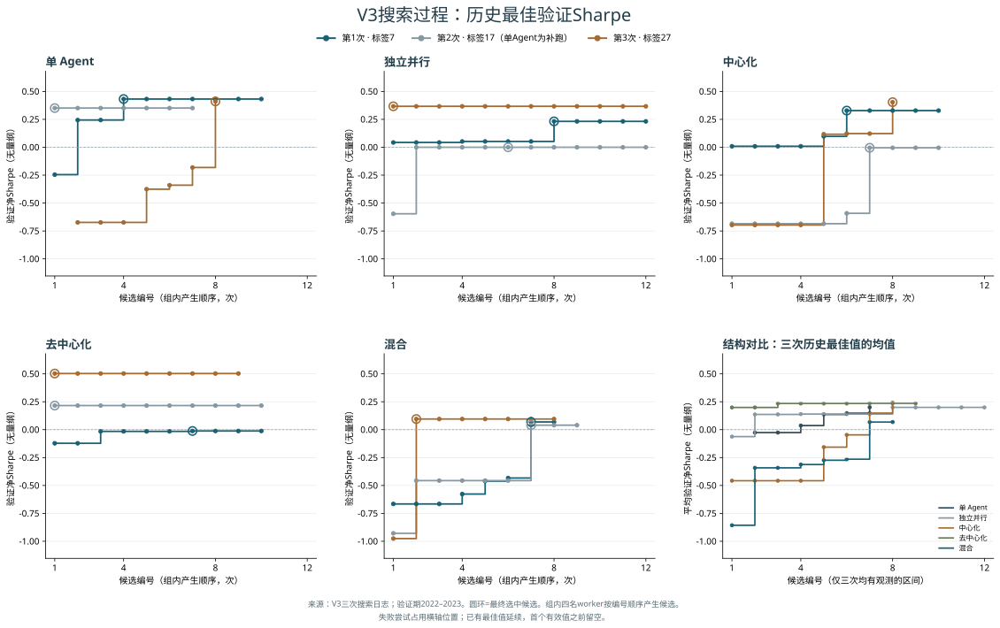

SINGLE
单 Agent
1 名研究者
每次提案读取自己最近 3 条候选结果，包括错误记录。用同一份训练与验证反馈进行下一次尝试。
三次运行的综合分析：15条搜索轨迹、最终策略、信息流与资源约束。以逐轮证据区分结果、过程与机制解释。
三次混合测试Sharpe为0.845、0.796、0.603，均盈利；但前两次赢家来自后续修订，第三次来自首轮。中心化三次都改善了验证最佳值，却只有一次测试盈利。结构表现、演化过程与因果解释需要分别判断。
| 拓扑 | 三次测试Sharpe | 均值 / 样本标准差 | 盈利次数 | 年化收益均值 | 最大回撤均值 |
|---|---|---|---|---|---|
| 单 Agent | -0.837 / -0.735 / -0.728 | -0.767 / 0.061 | 0/3 | -7.50% | 16.54% |
| 独立并行 | -0.794 / -0.854 / 0.942 | -0.235 / 1.020 | 1/3 | -1.99% | 18.56% |
| 中心化 | -0.609 / 1.100 / -0.345 | 0.049 / 0.920 | 1/3 | 3.17% | 18.80% |
| 去中心化 | -1.437 / 0.881 / 1.201 | 0.215 / 1.440 | 2/3 | 3.64% | 16.00% |
| 混合 | 0.845 / 0.796 / 0.603 | 0.748 / 0.128 | 3/3 | 7.42% | 9.39% |
这里的重复性指同一段市场数据上三次策略搜索结果的差异，不能等同于跨市场阶段的稳定性。均值为三份独立策略指标的算术均值，不是组合策略表现。单Agent的Sharpe标准差0.061比混合0.128更小，但三次均亏损；混合的优势是四种多研究者结构中较一致的盈利表现，不是全组方差最小。
范围：仅V3，标签7/17/27共15份测试策略。标签17单Agent使用用户要求的追加补跑，原网络失败及费用保留。本文为保存日志的事后综合分析，没有新增模型调用或策略回测。
这里的evo是LLM基于回测反馈重新提出假设、改写Python策略，然后按验证成绩保留最佳候选。模型参数不更新，没有预定义的遗传交叉或突变操作，也没有按收益复制worker。后续候选可以更差，软件最终保留的历史最佳值则不会下降。
| 结构 | 研究者 / 管理者 | 自身历史 | 同伴有效结果 | 管理者分工 | 主要可观察机制 |
|---|---|---|---|---|---|
| 单Agent | 1 / 0 | 最近3条，含错误 | 无 | 无 | 单一分支的连续自我修订 |
| 独立多Agent | 4 / 0 | 各自最近3条，含错误 | 无 | 无 | 四条互不通信的探索分支 |
| 中心化 | 4 / 1 | 各自最近3条，含错误 | worker不直接读取 | 有 | 管理者集中消化证据、重新分工 |
| 去中心化 | 4 / 0 | 各自最近3条，含错误 | 有 | 无 | 各自解释上一轮同伴的最近有效结果 |
| 混合 | 4 / 1 | 各自最近3条，含错误 | 有 | 有 | 统一分工与同伴证据同时进入提案 |
五组使用同一类研究者、数据接口和回测器，区别在于下一次提案能读取哪些信息。图中的 W 是生成策略代码的研究者，M 是负责分工的管理者；评估器与数据属于公共实验设施，不计入 Agent 数。
1 名研究者
每次提案读取自己最近 3 条候选结果，包括错误记录。用同一份训练与验证反馈进行下一次尝试。
4 名研究者，无管理者
各自只看自身历史。12 次候选上限按每人最多 3 次分配，共享一组 token 预算；实际可能提前耗尽。
4 名研究者 + 1 名管理者
每轮开始时，管理者读取各 W 截至上一轮的最近有效结果并给每人分工。W 读取分工和自身历史，不直接读取其他 W 的结果。
4 名研究者，无管理者
每名 W 可读取其他 W 在上一轮结束前最近一次有效结果，里面包含假设、代码和训练/验证指标。软件只负责整理快照。
4 名研究者 + 1 名管理者
同时保留管理者分工和同伴共享：每名 W 读取本轮分工、自身历史，以及上轮其他 W 的最近有效结果。
图源：正式实验冻结的 research.py 信息流。实线和虚线表示逻辑信息关系，不代表同一时刻通信或额外模型调用。管理者和同伴内容均计入该组统一 token 预算。
| 设定 | 实际执行 |
|---|---|
| 数据与划分 | 500只当前标普成分股Yahoo行情；2016–2021训练，2022–2023验证，2024–2025测试 |
| 搜索空间 | 自行编写Python特征、信号与仓位；无固定因子菜单。禁止预测模型训练、外部数据和文件访问 |
| 模型 | DeepSeek Flash；研究者low/最大输出32,768，管理者none/最大输出8,192 |
| 预算 | 每次上限170,000总token、12候选；管理、上下文、失败与修复都消耗资源 |
| 交易限制 | 收盘决策，下一有效开盘执行，再下个开盘结算；交易费5bp、借券年化30bp；gross≤1、单股≤2%、净敞口≤1% |
| 执行与数据质量 | 决策10秒，每段回测180秒，无严格RAM上限。跳过2021-05-05、2025-11-12不完整会话；500测试区间，按252年化 |
横轴是组内实际产生的候选编号，纵轴是2022–2023验证期、扣除交易与借券成本后的Sharpe。每种拓扑有三条曲线，颜色对应三次运行。下图可直接比较五种结构；第六格展示三次历史最佳值的均值。

曲线上升表示发现了更高验证Sharpe的候选；横向平台表示继续搜索尚未超过历史最佳。圆环是最终赢家出现的位置。
未选中的中间候选没有进行测试期评估，因此不能画它们的测试Sharpe演化。汇总均值只保留三次都实际运行到、且都有历史最佳值的编号；较长运行的尾部不外推，不能将均值曲线末点当成三份最终赢家的平均验证成绩。
五个单结构面板使用相同纵轴尺度，均值面板也同尺度；两张图的纵轴范围随所展示的数据分别确定。相同候选数不代表相同token；多研究者一轮最多4份、单Agent一轮1份，这里按候选顺序而不是轮次对齐。所有图片由保存的逐候选记录生成，没有新增API调用或回测。
下图直接使用15份最终冻结策略保存的2024–2025测试期逐日净收益。纵轴从0%起，按复利计算累计收益，不是日收益直接相加，也不是年化收益。
| 结构 | 第1次累计收益 | 第2次累计收益 | 第3次累计收益 |
|---|---|---|---|
| 单 Agent | -18.58% | -17.23% | -6.98% |
| 独立并行 | -15.95% | -19.36% | 26.75% |
| 中心化 | -15.76% | 48.57% | -8.34% |
| 去中心化 | -27.85% | 20.33% | 35.00% |
| 混合 | 16.43% | 16.55% | 12.84% |
来源：保存的hidden_daily.csv，每条500个共同测试持有区间；按相同开盘执行与结算日期对齐，终点逐一核对evaluation.json。已扣交易与借券成本，未模拟冲击及完整融资条件。右下三次均值用于描述，未重新组合、再平衡或选优。未新增API调用或回测。
| 结构 | 后续赢家 / 3 | 相对首个有效轮次的验证增量 | 后续赢家测试盈利 | 含义 |
|---|---|---|---|---|
| 单 Agent | 2/3 | 0.6775 / 0.0000 / 1.0836 | 0/2 | 连续自我修订，验证改善强，测试连续失败 |
| 独立并行 | 2/3 | 0.1799 / 0.0001 / 0.0000 | 0/2 | 独立分支带来探索机会，后续改写未稳定增值 |
| 中心化 | 3/3 | 0.3200 / 0.6802 / 1.1002 | 1/3 | 最稳定地改善验证，却未稳定改善测试 |
| 去中心化 | 1/3 | 0.0036 / 0.0000 / 0.0000 | 0/1 | 共享会改变方向，但两份盈利赢家都来自首轮 |
| 混合 | 2/3 | 0.6461 / 0.4963 / 0.0000 | 2/2 | 盈利表现最一致，演化机制并非每次相同 |
“首个有效轮次”是该次研究首次出现完成回测候选的一轮。单Agent一轮1份、多研究者一轮最多4份，起点探索覆盖不同；中心化·17为第1轮、单Agent·27为第1轮，其余为第0轮。增量取最终最佳减首个有效轮次最佳，因此下限为0；这不表示后续没有退步。
这是对已选策略的事后分组，不是“早停优于进化”的对照实验。首轮与后续赢家不是随机分配，搜索难度与策略风格也不同。不能把这个比例变成每轮成功概率，更不能据此删除后续搜索。
15份策略的验证Sharpe与测试Sharpe横截面相关系数约 -0.064。在这个小样本中，验证排名没有提供明显的测试排序能力；这不是总体相关为零的统计证明。
纵轴：截至当前候选的最高验证净Sharpe（无量纲）
来源：三次trajectory.jsonl；圆环标记最终赢家产生处。失败尝试仍占横轴位置；出现首个有效结果前不画线。不同结构纵轴范围不同，仅在同一图内比较曲线。
纵轴：截至当前候选的最高验证净Sharpe（无量纲）
来源：三次trajectory.jsonl；圆环标记最终赢家产生处。失败尝试仍占横轴位置；出现首个有效结果前不画线。不同结构纵轴范围不同，仅在同一图内比较曲线。
纵轴：截至当前候选的最高验证净Sharpe（无量纲）
来源：三次trajectory.jsonl；圆环标记最终赢家产生处。失败尝试仍占横轴位置；出现首个有效结果前不画线。不同结构纵轴范围不同，仅在同一图内比较曲线。
纵轴：截至当前候选的最高验证净Sharpe（无量纲）
来源：三次trajectory.jsonl；圆环标记最终赢家产生处。失败尝试仍占横轴位置；出现首个有效结果前不画线。不同结构纵轴范围不同，仅在同一图内比较曲线。
纵轴：截至当前候选的最高验证净Sharpe（无量纲）
来源：三次trajectory.jsonl；圆环标记最终赢家产生处。失败尝试仍占横轴位置；出现首个有效结果前不画线。不同结构纵轴范围不同，仅在同一图内比较曲线。
三次均围绕反转、动量、风险与成本反复调整，其中两次后续超过首个有效轮次；三份最终策略测试均亏损。单一研究者可以做出较长诊断链，但没有观察到这条诊断链稳定转化为样本外收益。自身只保留最近3条结果，早期证据可能被遗忘，不能等同于拥有完整研究档案的研究员。
首个多因子候选验证−0.245；改为短期反转后升至0.244。第3轮改用月度21/63日反转加低波动率倾斜，达到0.432，成为最终赢家。之后又试更快反转、残差化和Beta控制，最佳仍未被超过；其中一个候选验证全程空仓。
| 首轮最佳验证 | 最终验证 | 赢家轮次 / worker | 可见自身有效 / 同伴 | 测试Sharpe | 测试年化收益 |
|---|---|---|---|---|---|
| -0.2454 | 0.4321 | r3 / W0 | 2 / 0 | -0.837 | -9.84% |
最终代码机制：月度21/63日反转，低波动率倾斜，最多50只/侧等权。
这次演化说明：自我反馈确实改善了验证选优，但测试Sharpe−0.837。不能把模型关于成本、Beta或因子失效的解释直接当作已证实的因果诊断。
| 候选 | 轮次/worker | 训练Sharpe | 验证Sharpe | 当时最优 | 验证有持仓天数 | 执行结果 |
|---|---|---|---|---|---|---|
| 1 | r0/W0 | -0.502 | -0.2454 | -0.2454 | 500 | 完成回测 |
| 2 | r1/W0 | -0.047 | 0.2437 | 0.2437 | 500 | 完成回测 |
| 3 | r2/W0 | — | — | 0.2437 | — | Filesystem, dynamic execution and introspection builtins are unavailable |
| 4 | r3/W0 | -0.260 | 0.4321 | 0.4321 | 500 | 最终选中 |
| 5 | r4/W0 | -0.371 | 0.2397 | 0.4321 | 500 | 完成回测 |
| 6 | r5/W0 | -0.276 | 0.2650 | 0.4321 | 500 | 完成回测 |
| 7 | r6/W0 | -0.278 | 0.4061 | 0.4321 | 500 | 完成回测 |
| 8 | r7/W0 | 0.000 | 0.0000 | 0.4321 | 0 | 完成回测 |
| 9 | r8/W0 | -0.169 | 0.3113 | 0.4321 | 500 | 完成回测 |
| 10 | r9/W0 | -0.080 | 0.3634 | 0.4321 | 500 | 完成回测 |
A dollar-neutral cross-sectional equity portfolio can earn a stable premium by combining medium-term momentum, short-term reversal, low volatility, and proximity to 52-week highs. Monthly rebalancing keeps turnover low. Liquidity filtering and equal weights within long and short legs control risk, while the 2% position cap and gross exposure below 1.0 satisfy portfolio constraints.
实际上下文：自身最近结果0条，其中有效0条；同伴有效结果0条；累计已确认用量10,832 token。
The prior combined factor lost money largely because 12-month momentum dominated the score while short-horizon reversal was underweighted. I will test a weekly-rebalanced, dollar-neutral short-horizon reversal portfolio with a defensive low-volatility tilt: buy liquid stocks with weak 5- and 21-day returns and low realized volatility, and short liquid stocks with strong recent returns and high volatility. Using the most recent Friday close as the signal date keeps turnover lower and aligns with next-open execution, while equal weights and the 2% cap satisfy gross, net and position constraints.
实际上下文：自身最近结果1条，其中有效1条；同伴有效结果0条；累计已确认用量21,436 token。
Round-1 evidence shows the reversal signal has genuine but fragile value: it only turned positive out-of-sample and lost money in train, with ~0.30 daily turnover implying ~4%/yr of pure transaction-cost drag. The fix is not a new factor family but lower-churn harvesting of the same short-horizon reversal premium. Instead of a single noisy 5-day reversal reading, I average percentile ranks of reversal computed at four overlapping end-points (offset 0, 5, 10, 15 sessions), which makes basket membership far stickier and adds a 3-month reversal term for names whose over-extension is slower to decay, plus a mild low-volatility tilt to avoid reversal traps in the noisiest names. Signals are frozen at the last Friday close so weights are constant within a week, and the ranking is only recomputed weekly. Liquidity and eligibility screens remain. Within each leg of 50 names I tilt capital toward the most extreme scores on a smooth ramp whose maximum stays under the 2% cap, keeping gross 0.98 and exactly dollar-neutral. The expected outcome is a materially lower turnover-driven cost while retaining the reversal alpha, giving a better net Sharpe than either prior round.
实际上下文：自身最近结果2条，其中有效2条；同伴有效结果0条；累计已确认用量37,527 token。
The prior weekly short-horizon reversal strategy had positive gross returns but was consumed by roughly 0.30 daily turnover and transaction costs. The revised experiment keeps the reversal premise but harvests it more slowly: rebalance only once per month using the last completed month-end close, rank stocks on 21-day and 63-day reversal plus a low-volatility tilt, and hold equal-weighted dollar-neutral long/short baskets until the next month-end signal. Slower formation windows and monthly holding should cut turnover by roughly an order of magnitude while retaining the reversal premium. Liquidity and eligibility screens remain, and position sizing respects the 2% cap, gross limit and net tolerance.
实际上下文：自身最近结果3条，其中有效2条；同伴有效结果0条；累计已确认用量51,954 token。
Round-1 weekly 5/21 reversal had positive gross alpha in train but was consumed by roughly 0.30 daily turnover; round-3 monthly 21/63 reversal cut turnover to roughly 0.09 and had positive validation, but its train gross return was negative. The evidence points to the short-horizon reversal terms, especially 5- and 10-day, being the part that worked in train, while 21/63 alone did not. I will test a monthly-rebalanced composite that keeps short-horizon reversal at the core, blends in 21-day and a smaller 63-day term for stability, and adds a low-volatility tilt to avoid reversal traps. Signals are frozen at the last completed month-end and held until the next month-end, so turnover remains near the round-3 monthly level while the signal mix retains the round-1 short-horizon alpha. Equal-weighted dollar-neutral 50/50 baskets, liquidity and eligibility screens, and the 2% position cap keep all constraints satisfied.
实际上下文：自身最近结果3条，其中有效2条；同伴有效结果0条；累计已确认用量65,740 token。
Across the three completed experiments the medium-horizon, monthly-rebalanced reversal book (round 3: 21/63-day reversal plus a low-volatility tilt, ~0.09 daily turnover) is the only configuration that was clearly positive out-of-sample (validation Sharpe 0.43), while the two variants that leaned harder on very short (5/10-day) reversal were worse in both train (-0.37) and validation (0.24). That inverts the round-4 premise: sub-monthly reversal added noise and cost, not alpha. I therefore keep the proven core (monthly decision from the last month boundary, 50/50 dollar-neutral equal-weight baskets, liquidity and eligibility screens, 2% cap, gross ~0.98) and make two principled revisions rather than a wholesale change. First, add a slower 126-day reversal term, which decays gradually and is far less contaminated by bid-ask bounce, so the reversal alpha is spread over horizons that historically persist. Second, introduce a small 12-1 momentum term (return from t-252 to t-21) as a diversifier: pure reversal is an implicit bet against trending markets, which is exactly the 2016-2021 train regime in which it lost, and short-cross-sectional-reversal and 12-1 momentum have historically low/negative correlation. Weights are shrunk so reversal still dominates (~65% of the composite), the low-volatility tilt is retained to avoid reversal traps, and momentum is neutralized (rank 0.5) for names without a full 12-month history so new listings are still scored on reversal. The goal is a regime-robust composite that keeps round-3's low turnover and positive validation while leaning less hard on any single anomaly.
实际上下文：自身最近结果3条，其中有效2条；同伴有效结果0条；累计已确认用量79,310 token。
Across rounds 1-5, the only clearly positive out-of-sample configuration was the monthly, medium-horizon reversal book (round 3: 21/63-day reversal plus low-volatility tilt, ~0.09 daily turnover, validation Sharpe 0.43), while every attempt to inject faster 5/10-day reversal or 12-1 momentum degraded results. All variants, however, shared a negative train Sharpe in 2016-2021. A common explanation is that cross-sectional reversal pays when return dispersion across names is high (idiosyncratic moves mean-revert) and bleeds when dispersion is compressed and a common trend dominates, which describes much of 2016-2021. Rather than change the signal, I keep the proven round-3 core exactly (monthly decisions at the last completed month boundary, 21/63-day reversal ranks plus low-volatility rank, liquidity and eligibility screens, 50/50 dollar-neutral equal-weight baskets, 2% cap, gross <= 0.98) and add a point-in-time regime overlay: measure the trailing 21-day mean of daily cross-sectional return dispersion and its percentile within the last ~252 sessions, then scale gross exposure smoothly between 0.4x and 1.0x. This is squarely a risk-allocation change, not a new alpha claim: it shrinks the book when the anomaly's payoff environment is weakest, should dampen the 2016-2021 drawdown, and lets the book run at full size in high-dispersion periods like the validation window and its aftermath.
实际上下文：自身最近结果3条，其中有效3条；同伴有效结果0条；累计已确认用量93,240 token。
Six rounds of evidence share one pattern: raw cross-sectional reversal works in the validation window but loses in 2016-2021. The most likely mechanism is not that reversal is dead, but that the short leg (recent winners) was persistently hurt by a strong momentum/beta trend, while the long leg (recent losers) was dominated by high-beta names that kept falling, so raw return reversal conflated idiosyncratic mean-reversion with market/beta exposure. The fix is not a new alpha claim but a cleaner signal: residual reversal. I estimate each name's market beta over a trailing 150 sessions against an equal-weighted market proxy, subtract beta times the market return, and measure the reversal of the cumulative residual over 21, 63 and 126 sessions. This isolates the part of past return that is idiosyncratic and should mean-revert, and sharply reduces the book's implicit anti-momentum/beta bet that drove the train drawdown. I keep the well-evidenced structural elements from earlier rounds: monthly decisions at the last completed month-end (turnover ~0.06-0.09), 50/50 dollar-neutral equal-weight baskets, liquidity and eligibility screens, the low-volatility rank to avoid reversal traps, the 2% position cap, and the cross-sectional dispersion regime overlay that improved validation Sharpe (0.41) and cut max drawdown. One targeted addition addresses the short leg directly: when forming the short basket, names in the top decile of 12-1 momentum are skipped, because momentum-crash names are exactly the ones that refused to mean-revert during the train period. If the residual construction is right, train should improve materially while the validation gains from round 6 are retained.
实际上下文：自身最近结果3条，其中有效3条；同伴有效结果0条；累计已确认用量107,471 token。
Round 7 returned exactly zero active days in both train and validation, which is a mechanical failure rather than an economic result: the market-beta projection was formed with `mkt.mul(beta)` where `mkt` is indexed by dates and `beta` by tickers, so pandas aligned on the union of two label spaces and produced an all-NaN projection; every residual reversal score became NaN, the validity filter emptied the cross-section, and the function returned zeros. The economic premise of round 7 is still the best-supported explanation of six rounds of evidence: the persistent train-period loss of raw reversal is largely a disguised anti-beta / anti-momentum bet, because recent losers in 2016-2021 were high-beta names that kept falling while recent winners kept winning. I therefore re-implement the same residual-reversal idea with correct, fully vectorised numpy numerics (outer product of the NaN-aware equal-weighted market return and per-name trailing 150-day betas, clipped to [0.2, 3.0] and defaulted to 1.0 when coverage is thin), keep the proven structural core from round 6 (monthly decisions at the last completed month-end, liquidity and eligibility screens, 50/50 dollar-neutral equal-weight baskets, low-volatility rank as a reversal-trap guard, 2% cap, dispersion regime overlay smoothing gross between 0.45x and 1.0x), and add two robustness safeguards so a numerical failure can never again produce a dead book: residual scores cascade to shorter horizons and, if fewer than 24 names survive with residual data, the score falls back to plain price reversal for that month. Shorts additionally skip top-decile 12-1 momentum names, the specific cohort that refused to mean-revert in train.
实际上下文：自身最近结果3条，其中有效3条；同伴有效结果0条；累计已确认用量122,635 token。
Rounds 6-8 isolate the real problem cleanly: the reversal book's 2016-2021 loss is mostly a disguised net beta / anti-momentum exposure (recent losers were high-beta names that kept falling), not a dead anomaly. Round 8's residualization fixed part of it (train Sharpe -0.28 -> -0.17) but cost validation performance (0.41 -> 0.31), and its market-risk projection still leaves the two baskets unbalanced in beta because each side is selected independently. The next step is therefore to fix the exposure at the portfolio level instead of only at the signal level: keep the reversal alpha that demonstrably worked in validation (raw price reversal, monthly decisions, ~0.06-0.07 daily turnover) as the dominant input, add a smaller residual-reversal component for robustness, scale each name's past move by its own volatility so the signal is not dominated by the highest-volatility losers, and then select the short basket from the worst-score pool to match the beta profile of the long basket name-by-name. This keeps quality (shorts still come only from the bottom of the score distribution) while removing the net beta bet that produced the train drawdown, so train should keep improving without giving back validation gains. All proven structural elements are retained: month-end decisions, eligibility and liquidity screens, 50/50 dollar-neutral equal-weight baskets, low-volatility rank as a reversal-trap guard, 2% position cap, gross <= 0.98, and the cross-sectional dispersion overlay scaling gross between 0.45x and 1.0x.
实际上下文：自身最近结果3条，其中有效3条；同伴有效结果0条；累计已确认用量143,041 token。
import numpy as np
import pandas as pd
def _zeros(tickers):
return pd.Series(0.0, index=pd.Index(tickers), dtype=float)
def generate_weights(history, universe):
tickers = pd.Index(universe)
if len(tickers) == 0:
return pd.Series(dtype=float)
adj_full = history.get('adjusted_close')
if adj_full is None:
adj_full = history.get('close')
if adj_full is None or len(adj_full.index) == 0:
return _zeros(tickers)
adj = adj_full.reindex(columns=tickers)
dates = adj.index
if len(dates) < 70:
return _zeros(tickers)
periods = np.asarray(dates.year) * 12 + np.asarray(dates.month)
if len(periods) >= 2:
changes = periods[1:] != periods[:-1]
month_ends = np.where(changes)[0]
else:
month_ends = np.array([], dtype=int)
if len(month_ends) > 0:
sig_idx = int(month_ends[-1])
else:
sig_idx = len(dates) - 1
start_idx = max(0, sig_idx - 140)
sub = adj.iloc[start_idx:sig_idx + 1].ffill(limit=5)
sub = sub.where(sub > 0)
n = len(sub)
if n < 25:
return _zeros(tickers)
elig = None
if 'eligible' in history and history['eligible'] is not None:
try:
elig = history['eligible'].reindex(index=dates, columns=tickers)
except Exception:
elig = None
sig_ok = sub.iloc[-1].notna()
latest_ok = adj.iloc[-1].notna()
if elig is not None:
sig_ok = sig_ok & elig.iloc[sig_idx].fillna(False).astype(bool)
latest_ok = latest_ok & elig.iloc[-1].fillna(False).astype(bool)
liq_ok = pd.Series(True, index=tickers, dtype=bool)
if 'volume' in history and 'close' in history:
try:
vol = history['volume'].reindex(index=dates, columns=tickers).iloc[start_idx:sig_idx + 1]
close = history['close'].reindex(index=dates, columns=tickers).iloc[start_idx:sig_idx + 1]
liq = (close * vol).tail(60).median()
liq_rank = liq.rank(pct=True, na_option='keep')
liq_ok = liq.notna() & (liq > 0) & (liq_rank >= 0.20)
except Exception:
liq_ok = pd.Series(True, index=tickers, dtype=bool)
last = sub.iloc[-1]
rev21 = pd.Series(np.nan, index=tickers, dtype=float)
if n >= 22:
rev21 = -(last / sub.iloc[-22] - 1.0)
rev63 = pd.Series(np.nan, index=tickers, dtype=float)
if n >= 64:
rev63 = -(last / sub.iloc[-64] - 1.0)
elif n >= 22:
rev63 = rev21
vola = pd.Series(np.nan, index=tickers, dtype=float)
try:
rets = sub.pct_change(fill_method=None)
vola = rets.tail(80).std(skipna=True) * np.sqrt(252.0)
except Exception:
vola = pd.Series(np.nan, index=tickers, dtype=float)
r21 = rev21.rank(pct=True, na_option='keep')
r63 = rev63.rank(pct=True, na_option='keep')
rvol = (-vola).rank(pct=True, na_option='keep')
score = 0.55 * r21 + 0.30 * r63 + 0.15 * rvol
valid = (
sig_ok & latest_ok & liq_ok &
rev21.notna() & rev63.notna() & vola.notna() &
last.notna()
)
score = score[valid].replace([np.inf, -np.inf], np.nan).dropna()
if len(score) < 20:
return _zeros(tickers)
n_side = min(50, len(score) // 2)
if n_side < 10:
return _zeros(tickers)
ranked = score.sort_values(ascending=False)
longs = ranked.index[:n_side]
shorts = ranked.index[-n_side:]
per_side = min(0.49, 0.02 * n_side)
w = per_side / float(n_side)
weights = pd.Series(0.0, index=tickers, dtype=float)
weights.loc[longs] = w
weights.loc[shorts] = -w
weights = weights.clip(-0.02, 0.02)
weights = weights.replace([np.inf, -np.inf], 0.0).fillna(0.0)
return weights.reindex(tickers)
首个周五锚定5日反转候选验证0.351。随后加入保留持仓缓冲带、趋势与低波动过滤、量能确认和双周频率；后续最高仅0.235。两个路径重建版本发生决策超时，最终仍保留首个候选。
| 首轮最佳验证 | 最终验证 | 赢家轮次 / worker | 可见自身有效 / 同伴 | 测试Sharpe | 测试年化收益 |
|---|---|---|---|---|---|
| 0.3510 | 0.3510 | r0 / W0 | 0 / 0 | -0.735 | -9.09% |
最终代码机制：最近完成周五的5日收益反转，最多40只/侧等权。
这次演化说明：这是迭代退步后正确保留旧赢家的例子。测试Sharpe−0.735；日均交易名义量/NAV为36.85%，不能仅凭“周度”设想就认为实际交易费用很低。
| 候选 | 轮次/worker | 训练Sharpe | 验证Sharpe | 当时最优 | 验证有持仓天数 | 执行结果 |
|---|---|---|---|---|---|---|
| 1 | r0/W0 | -0.040 | 0.3510 | 0.3510 | 500 | 最终选中 |
| 2 | r1/W0 | — | — | 0.3510 | — | Strategy decision exceeded its execution timeout |
| 3 | r2/W0 | -0.252 | -0.9197 | 0.3510 | 500 | 完成回测 |
| 4 | r3/W0 | 0.128 | -0.1314 | 0.3510 | 500 | 完成回测 |
| 5 | r4/W0 | 0.165 | 0.2348 | 0.3510 | 500 | 完成回测 |
| 6 | r5/W0 | -0.356 | -0.3198 | 0.3510 | 500 | 完成回测 |
| 7 | r6/W0 | — | — | 0.3510 | — | Strategy decision exceeded its execution timeout |
Liquid equities exhibit short-horizon reversal after extreme recent moves. A weekly dollar-neutral portfolio that is long the most oversold liquid names and short the most overbought liquid names should capture a reversal premium while controlling risk through equal weights, liquidity filters, and a gross exposure cap of one.
实际上下文：自身最近结果0条，其中有效0条；同伴有效结果0条；累计已确认用量9,997 token。
The prior weekly reversal portfolio was too concentrated and over-traded a noisy 5-day signal. I will test a risk-adjusted 5-day reversal signal with a weekly rank-buffer (hysteresis) long/short portfolio: keep existing names while they remain near the top/bottom of the score distribution, fill the rest from the most extreme liquid names, use equal weights on each side, and cap gross exposure below the limit. The buffer should cut turnover and transaction-cost drag while preserving the reversal premium.
实际上下文：自身最近结果1条，其中有效1条；同伴有效结果0条；累计已确认用量33,075 token。
Weekly short-horizon reversal was profitable before costs but over-traded. I will test a monthly-rebalanced, risk-adjusted reversal with a trend filter and a low-volatility tilt: go long liquid stocks that are oversold over the last week but still in positive intermediate trend, and short liquid stocks that are overbought but in weak intermediate trend. Equal-weighted dollar-neutral exposure, capped at gross 0.95, should retain the reversal premium while cutting turnover and transaction-cost drag.
实际上下文：自身最近结果2条，其中有效1条；同伴有效结果0条；累计已确认用量50,808 token。
Short-horizon reversal is real in this universe (round-2 validation of a weekly rebalance was positive) but the naive implementation burnt roughly 4.6%/yr on transaction costs at 0.37 daily turnover, and the round-3 attempt to 'improve' it with a 63-day trend tilt and monthly cadence destroyed the signal. The diagnosis is that the alpha lives in the cross-section of the last few days, so the fix is cost control and signal sharpening, not a horizon change: (1) rank on risk-adjusted reversal, -r5/vol20, so a 4% move in a quiet name outranks a 4% move in a name that always moves 4%; (2) keep a weekly rebalance clock (signal date = last completed Friday) so weights are constant within a week, and add rank hysteresis using the previous Friday's book - retain an existing long only while it stays in the top 35% of the score distribution and an existing short only while it stays in the bottom 35%, filling the rest from the extremes. That buffer should cut weekly churn substantially while keeping the book at the reversal extremes; (3) keep the book at 25 names per side, equal weighted at 2%, gross 1.0, dollar-neutral, with liquidity/price/vol screens so spreads and borrow remain trivial. Expected result: similar gross alpha to round-2's weekly book but with materially lower cost drag and turnover.
实际上下文：自身最近结果3条，其中有效2条；同伴有效结果0条；累计已确认用量67,423 token。
Prior rounds show that the short-horizon reversal signal has some gross alpha but is fragile after costs: the weekly risk-adjusted version was roughly flat out-of-sample with about 0.30 daily turnover, while the monthly trend/low-vol variant destroyed the reversal effect. The diagnosis is that the alpha is concentrated in sharp, high-volume overreactions and that turnover, not the weekly horizon itself, is the main problem. I will keep a Friday-to-Friday reversal clock but make three changes: (1) score reversal using both 5-day and 1-day risk-adjusted returns, intensified by recent relative volume, to focus on genuine overreaction rather than low-conviction drift; (2) use a wider one-week hysteresis band so existing longs are retained unless they fall below the 42nd percentile and existing shorts unless they rise above the 58th percentile, reducing churn while still rotating stale names; (3) keep a 25-name-per-side dollar-neutral book at 2% weights, with liquidity, price, volatility and extreme-move screens. This tests whether volume-confirmed reversal plus stronger turnover control can retain gross alpha while cutting transaction-cost drag relative to round 3.
实际上下文：自身最近结果3条，其中有效2条；同伴有效结果0条；累计已确认用量88,994 token。
Rounds 2-4 show that short-horizon reversal has gross alpha in this universe, but weekly rebalancing turns over roughly 0.30 of gross per day, so transaction costs consume most of the signal. The monthly trend-tilt variant destroyed the reversal effect, indicating the alpha horizon is days-to-weeks rather than months. I will therefore keep the validated risk-adjusted 5-day/1-day reversal score with volume confirmation and liquidity screens, but rebalance only every second ISO week (even Friday weeks) and widen the rank hysteresis band: retain an existing long while it stays above the 35th percentile and an existing short while it stays below the 65th. This directly halves the number of rebalance events while preserving the reversal extremes, and the wider buffer should further cut churn. The book remains dollar-neutral, 25 names per side, equal weighted at 2% per name, gross 1.0, with price, volatility, extreme-move and ADV filters to keep spreads and borrow negligible. Expected result: materially lower turnover and cost drag with gross alpha similar to round 4.
实际上下文：自身最近结果3条，其中有效3条；同伴有效结果0条；累计已确认用量110,972 token。
Rounds 2-4 established that short-horizon reversal has gross alpha in this universe, with round 4's weekly, volume-confirmed, risk-adjusted 5-day/1-day score being the best validated variant (train Sharpe 0.17, validation Sharpe 0.23). Round 5's failure is diagnostic: extending the holding period to two weeks killed the signal, so the reversal alpha lives at a weekly horizon and cannot be harvested by simply holding longer. The remaining problem is cost, not horizon. This experiment therefore keeps the weekly Friday clock and round-4 signal, but changes the book-construction rule to an asymmetric entry/exit buffer with a hard weekly replacement cap: existing longs are retained while they stay above the 40th percentile and shorts while below the 60th, but new names enter only from the top/bottom 15% of the score distribution, and at most 8 new names per side are allowed per week. A deterministic trailing simulation of the weekly book makes the previous holdings path-dependent and avoids reconstructing a false prior book. The aim is to preserve exposure to genuine high-volume overreactions while materially reducing weekly churn relative to round 4. The book remains dollar-neutral, 25 names per side, equal weighted, gross 1.0, with price, volatility, extreme-move and ADV screens.
实际上下文：自身最近结果3条，其中有效3条；同伴有效结果0条；累计已确认用量134,284 token。
import numpy as np
import pandas as pd
def _get_df(history, name):
df = history.get(name)
if isinstance(df, pd.DataFrame):
return df
return None
def generate_weights(history, universe):
cols = pd.Index(pd.unique(pd.Index(universe).astype(str)))
if len(cols) == 0:
return pd.Series(dtype=float)
zeros = pd.Series(0.0, index=cols, dtype=float)
ac = _get_df(history, 'adjusted_close')
if ac is None:
ac = _get_df(history, 'close')
if ac is None or ac.empty:
return zeros
available = [c for c in cols if c in ac.columns]
if not available:
return zeros
ac = ac.loc[:, available].sort_index().tail(320)
if ac.empty:
return zeros
dates = ac.index
last_date = dates[-1]
wd = dates.weekday
fridays = dates[wd == 4]
sig_date = fridays[-1] if len(fridays) else last_date
hist_ac = ac.loc[:sig_date]
if len(hist_ac.index) < 6:
hist_ac = ac
sig_date = last_date
if len(hist_ac.index) < 6:
return zeros
px = hist_ac.iloc[-1]
ret5 = hist_ac.iloc[-1] / hist_ac.iloc[-6] - 1.0
rets = hist_ac.pct_change().tail(20)
vol = rets.std(ddof=0)
elig = pd.Series(True, index=available)
edf = _get_df(history, 'eligible')
if edf is not None:
ee = edf.reindex(columns=available).loc[:sig_date].tail(1)
if len(ee.index) > 0:
elig = ee.iloc[0].fillna(False).astype(bool)
liq = pd.Series(np.nan, index=available)
vdf = _get_df(history, 'volume')
if vdf is not None:
vv = vdf.reindex(columns=available).loc[:sig_date].tail(20)
pp = hist_ac.tail(20)
common = vv.index.intersection(pp.index)
if len(common) > 0:
dv = vv.loc[common].mul(pp.loc[common], axis=0)
liq = dv.mean()
base = (px.notna() & ret5.notna() & vol.notna() & (vol > 0) & (px > 1.0) & elig)
base = base & np.isfinite(px) & np.isfinite(ret5) & np.isfinite(vol)
if liq.notna().any():
base = base & (liq.fillna(0.0) > 1e6)
if int(base.sum()) < 10:
base = (px.notna() & ret5.notna() & vol.notna() & (vol > 0) & (px > 0.5) & elig)
base = base & np.isfinite(px) & np.isfinite(ret5) & np.isfinite(vol)
candidates = [c for c in available if bool(base.get(c, False))]
if len(candidates) < 2:
return zeros
r = ret5.loc[candidates].astype(float)
long_order = sorted(candidates, key=lambda c: (float(r.get(c, np.nan)), c))
short_order = sorted(candidates, key=lambda c: (-float(r.get(c, np.nan)), c))
max_n = min(40, len(candidates) // 2)
if max_n < 1:
return zeros
longs = long_order[:max_n]
used = set(longs)
shorts = [c for c in short_order if c not in used][:max_n]
N = min(len(longs), len(shorts))
if N < 1:
return zeros
longs = longs[:N]
shorts = shorts[:N]
w = float(min(0.5 / N, 0.02))
weights = zeros.copy()
for c in longs:
if c in weights.index:
weights.loc[c] = w
for c in shorts:
if c in weights.index:
weights.loc[c] = -w
net = float(weights.sum())
if abs(net) > 1e-12:
nz = weights.index[weights != 0.0]
if len(nz) > 0:
weights.loc[nz] -= net / len(nz)
weights = weights.clip(-0.02, 0.02)
gross = float(weights.abs().sum())
if gross > 1.0:
weights = weights * (1.0 / gross)
return weights.fillna(0.0)首份代码因标量/Series混淆失败，首个有效候选验证−0.673。之后尝试自适应多因子（−2.101），再转向残差反转，验证依次约−0.376、−0.340、−0.181。最后第7轮加入5会话调仓缓存、软阈值、Beta投影和40%持仓延续，验证升至0.410。
| 首轮最佳验证 | 最终验证 | 赢家轮次 / worker | 可见自身有效 / 同伴 | 测试Sharpe | 测试年化收益 |
|---|---|---|---|---|---|
| -0.6732 | 0.4104 | r7 / W0 | 3 / 0 | -0.728 | -3.58% |
最终代码机制：10日残差反转/残差波动率，Beta投影，软阈值权重与5会话调仓。
这次演化说明：它有三次单Agent中最大的验证改善（相对首个有效轮次+1.084），但测试Sharpe仍−0.728。很强的验证修订轨迹，没有转化为测试盈利。
| 候选 | 轮次/worker | 训练Sharpe | 验证Sharpe | 当时最优 | 验证有持仓天数 | 执行结果 |
|---|---|---|---|---|---|---|
| 1 | r0/W0 | — | — | — | — | Strategy execution failed: AttributeError: 'numpy.float64' object has no attribute 'rank' |
| 2 | r1/W0 | -0.823 | -0.6732 | -0.6732 | 500 | 完成回测 |
| 3 | r2/W0 | — | — | -0.6732 | — | Filesystem, dynamic execution and introspection builtins are unavailable |
| 4 | r3/W0 | -1.150 | -2.1007 | -0.6732 | 500 | 完成回测 |
| 5 | r4/W0 | -0.735 | -0.3755 | -0.3755 | 500 | 完成回测 |
| 6 | r5/W0 | -0.146 | -0.3400 | -0.3400 | 500 | 完成回测 |
| 7 | r6/W0 | -0.464 | -0.1812 | -0.1812 | 500 | 完成回测 |
| 8 | r7/W0 | -0.102 | 0.4104 | 0.4104 | 500 | 最终选中 |
A dollar-neutral cross-sectional portfolio that goes long stocks with strong intermediate momentum, low realized volatility, and proximity to their 52-week high while shorting stocks with the opposite profile, with a small short-term reversal overlay to avoid buying recent overextended winners and shorting recent capitulation, can earn a diversified factor premium that is robust to single-factor drawdowns. Equal weighting 50 long and 50 short names at 1% per name keeps gross at 1.0, net at 0.0, and every absolute weight below the 2% cap, while slow-moving momentum and volatility ranks keep turnover and transaction costs modest.
实际上下文：自身最近结果0条，其中有效0条；同伴有效结果0条；累计已确认用量11,106 token。
The prior attempt failed on a scalar/Series confusion (volatility was already a cross-sectional Series before .iloc[-1]); after fixing that plumbing bug, keep the core economic idea: a slow, diversified cross-sectional composite that combines intermediate momentum (6- and 12-month, skipping the most recent week), proximity to the 52-week high, low realized volatility, and a short-term reversal penalty, dollar-neutral long/short. Rationale: momentum and low-volatility premia are persistent but decay during sharp reversals, so penalizing names that just ran up (and rewarding recent capitulation among the low-vol, high-momentum set) reduces crash exposure. Slow windows plus rank-based scoring keep turnover and costs modest; equal weighting at <=1% per name across up to 50/50 names satisfies the 2% cap, gross 1.0 and net 0.0, and liquidity/eligibility filters keep the book tradable under the next-open execution rule.
实际上下文：自身最近结果1条，其中有效0条；同伴有效结果0条；累计已确认用量16,281 token。
The prior slow multi-factor long/short lost in both train and validation, suggesting its momentum and low-volatility tilts were inverted or crowded in this universe. I propose a different return decomposition: split each stock's daily return into overnight and intraday components. Overnight returns reflect persistent demand and tend to continue, while intraday returns reflect liquidity provision and tend to reverse. At each completed month-end I rank liquid eligible stocks by 60-day average overnight return minus 60-day average intraday return, with a small 5-day reversal penalty. I go long the top names and short the bottom names, equal-weighted, dollar-neutral, and rebalance monthly to cut turnover. This avoids the failed slow momentum/low-vol composite, keeps gross at 1.0, net at 0.0, and every absolute weight at or below the 2% cap.
实际上下文：自身最近结果2条，其中有效1条；同伴有效结果0条；累计已确认用量36,666 token。
The prior static slow-momentum/low-volatility book failed in both train and validation, likely because its factor signs were poorly timed, its short leg concentrated in high-beta names, and daily rank churn generated excessive turnover. I propose an adaptive, beta-matched, monthly-rebalanced dollar-neutral policy. At each month-end it measures the recent 12-month long-short profitability of two price-based factors -- 12/6-month momentum and one-month reversal -- using only point-in-time history, and signs each factor according to its recent performance (factor momentum). The resulting composite score is used to select longs and shorts within beta quintiles so the long and short books have similar market-beta distributions, avoiding an unintended high-beta short. Liquidity and eligibility screens keep the book tradable. Equal weights across up to 50 long and 50 short names satisfy gross 1.0, net 0.0, and the 2% single-name cap; monthly rebalancing with cached holdings sharply reduces turnover versus daily rank updates.
实际上下文：自身最近结果3条，其中有效1条；同伴有效结果0条；累计已确认用量64,798 token。
The three prior attempts were all dollar-neutral long/short books built on slow raw momentum and low-volatility, and all lost in both train and validation. That is strong evidence that these particular premia were poorly timed or crowded in this 2016-2021 universe and that their short legs (recent losers, high-volatility names) systematically hurt. Instead of another slow price-trend book, I decompose each stock's daily return into its overnight and intraday components. The overnight effect (Lou-Polk-Skouras): stocks with persistently high overnight returns and low intraday returns earn higher subsequent returns, because overnight demand reflects informed, persistent positioning while intraday returns reflect transient liquidity provision that reverses. I compute 60-day mean overnight return (open_t/close_{t-1}-1) and 60-day mean intraday return (close_t/open_t-1), and score each liquid, eligible stock as (rank of overnight mean) minus (rank of intraday mean), with a small low-volatility tilt. Long the top names, short the bottom names, equal-weighted dollar-neutral across up to 50 names per side. To keep turnover and the 5bps transaction cost modest I rebalance only at month-end with cached holdings, and I cap per-name weight at the 2% limit, gross at 1.0, and net at 0.0. This is mechanistically distinct from the failed momentum/low-vol composites and exploits a well-documented price-decomposition anomaly.
实际上下文：自身最近结果3条，其中有效2条；同伴有效结果0条；累计已确认用量77,552 token。
The prior dollar-neutral books all relied on slow price signals and symmetric long/short ranking, and both train and validation were negative. That is evidence that the short leg and slow horizons were the problem, not that market-neutral construction itself is unusable. I propose a cost-aware biweekly residual reversal: estimate each stock's beta to the equal-weighted market over the prior 120 sessions, compute its 10-day cumulative residual return, scale by 60-day residual volatility, and go long the most negative residuals (oversold idiosyncratic losers) while shorting the most positive residuals (overbought idiosyncratic winners). Selection is constrained within beta quintiles so the long and short books have matching beta distributions, preventing the short leg from becoming an unintended high-beta or squeeze-prone bet. Rebalancing every two weeks balances the fast decay of reversal signals against the 5 bps transaction cost; liquidity, price and eligibility screens keep the book tradable. This is mechanistically distinct from slow momentum, low-volatility, and overnight/intraday decomposition: it harvests short-horizon idiosyncratic mean reversion while explicitly controlling beta and turnover.
实际上下文：自身最近结果3条，其中有效2条；同伴有效结果0条；累计已确认用量100,184 token。
The prior three dollar-neutral books all lost, but the residual-reversal experiment is informative: its gross (pre-cost) alpha was materially positive in both train and validation, while reported transaction costs overwhelmed it. Its high turnover was likely amplified by a biweekly rebalance and by cache invalidation whenever the tradable universe changed, forcing daily recomputation. I therefore keep the residual-reversal idea but make it cost-aware and much slower: estimate beta on 120 sessions, compute 21-day cumulative idiosyncratic residual return scaled by 60-day residual volatility, select longs/shorts within beta quintiles for matched market exposure, and rebalance only once per month. The monthly cache is keyed by calendar month and deliberately survives universe churn, with cached weights reindexed and repaired for dollar neutrality rather than recomputed. Equal weights across up to 50 names per side, gross 1.0, net 0, 2% cap. This tests whether the positive gross reversal alpha survives once turnover is reduced by an order of magnitude.
实际上下文：自身最近结果3条，其中有效3条；同伴有效结果0条；累计已确认用量126,793 token。
Across four trials the only book with positive gross alpha was the fast idiosyncratic residual-reversal experiment (~10-day beta-adjusted residual scaled by residual vol): its reported gross was roughly +5%/yr in train and +3.5%/yr in validation, yet it posted a loss because turnover averaged 57% per day (transaction cost ~7%/yr). That turnover came from a cache keyed on a half-week bucket that was invalidated whenever the tradable universe changed, forcing recomputation every session. Slowing the same signal to a 21-day horizon in the next trial destroyed the gross alpha entirely (train gross about -2%/yr), confirming the edge lives at short horizons and cannot simply be held longer. The experiment is therefore: keep the ~10-day residual-reversal signal, but make execution genuinely cheap. (1) A true weekly rebalance implemented with a horizon-based cache that survives universe churn (only reindexed, never recomputed), cutting turnover by roughly 5-6x. (2) Continuous soft-threshold weights proportional to the beta-neutralised score rather than hard rank selection, which removes the churn from names oscillating across a quantile cutoff while still concentrating capital in the extreme residuals. (3) Cross-sectional projection of the score on beta so the long and short books carry matching market exposure without adding hedge weights. (4) A 40% carryover toward prior holdings so effective holding horizon matches signal decay, plus a $5M median dollar-volume screen and price>3 filter. Target turnover is ~10% per day (cost ~1.3%/yr) with gross alpha in the 3-5%/yr range, which should be net positive, unlike every prior dollar-neutral book.
实际上下文：自身最近结果3条，其中有效3条；同伴有效结果0条；累计已确认用量149,836 token。
import numpy as np
import pandas as pd
_STATE = {'weights': None, 'universe': None, 'last_rebal_date': None}
_REBAL_EVERY = 5
_CARRY = 0.4
_THRESH = 0.7
_VOL_WIN = 60
_CUM_WIN = 10
_BETA_WIN = 120
_MAX_W = 0.02
def _clean(w, universe):
w = pd.Series(w, dtype=float).reindex(universe).fillna(0.0)
w = w.replace([np.inf, -np.inf], 0.0)
return w.clip(-_MAX_W, _MAX_W)
def _normalize(w, universe):
w = _clean(w, universe)
for _ in range(3):
act = w != 0.0
na = int(act.sum())
if na == 0:
return pd.Series(0.0, index=universe, dtype=float)
net = float(w.sum())
if abs(net) > 1e-10:
w.loc[act] = w.loc[act] - net / float(na)
gross = float(w.abs().sum())
if gross <= 1e-12:
return pd.Series(0.0, index=universe, dtype=float)
w = w * (1.0 / gross)
w = w.clip(-_MAX_W, _MAX_W)
act = w != 0.0
na = int(act.sum())
if na > 0:
net = float(w.sum())
if abs(net) > 1e-10:
w.loc[act] = w.loc[act] - net / float(na)
return w.clip(-_MAX_W, _MAX_W).fillna(0.0)
def _target(history, universe, prev):
zeros = pd.Series(0.0, index=universe, dtype=float)
close = history.get('adjusted_close')
if close is None or close.shape[1] == 0:
close = history.get('close')
if close is None or close.shape[1] == 0:
return zeros
try:
close = close.reindex(columns=universe).astype(float)
except Exception:
return zeros
n = close.shape[0]
if n < 160:
return zeros
ret = close.pct_change()
ret = ret.where(np.isfinite(ret))
mkt = ret.mean(axis=1)
R = ret.tail(_BETA_WIN)
m = mkt.tail(_BETA_WIN).fillna(0.0)
if len(m) < 60:
return zeros
counts = R.notna().sum()
Rf = R.fillna(0.0)
m_mean = float(m.mean())
dm = m - m_mean
var = float((dm * dm).sum()) / float(len(m))
if not np.isfinite(var) or var <= 1e-18:
return zeros
Rc = Rf.sub(Rf.mean(), axis=1)
cov = Rc.mul(dm, axis=0).sum(axis=0) / float(len(m))
beta = (cov / var).reindex(universe)
beta = beta.where(counts.reindex(universe) >= 60)
Rr = ret.tail(_VOL_WIN)
mr = mkt.tail(_VOL_WIN).fillna(0.0)
if len(mr) < _VOL_WIN:
return zeros
resid = pd.DataFrame(Rr.values - np.outer(mr.values, beta.values),
index=Rr.index, columns=Rr.columns)
resid = resid.where(np.isfinite(resid))
cum = resid.tail(_CUM_WIN).sum(min_count=8)
vol = resid.std()
vol = vol.where(vol > 1e-8)
score = -cum / vol
score = score.where(np.isfinite(score))
last_px = close.iloc[-1]
valid = last_px.notna() & (last_px > 3.0) & (close.notna().sum() >= 100)
valid = valid & score.reindex(universe).notna() & beta.notna() & vol.reindex(universe).notna()
volm = history.get('volume')
if volm is not None:
try:
volm = volm.reindex(columns=universe).reindex(index=close.index).astype(float)
dollar = (close * volm).tail(60).median()
liq = dollar.reindex(universe).fillna(0.0) > 5e6
if int(liq.sum()) >= 30:
valid = valid & liq
except Exception:
pass
el = history.get('eligible')
if el is not None:
try:
el = el.reindex(columns=universe).reindex(index=close.index)
flag = el.ffill().iloc[-1].fillna(1.0).astype(float) > 0.5
if int(flag.sum()) >= 30:
valid = valid & flag
except Exception:
pass
valid = valid.reindex(universe).fillna(False).astype(bool)
if int(valid.sum()) < 40:
return zeros
s = score.reindex(universe)[valid]
b = beta.reindex(universe)[valid]
s_std = float(s.std())
b_std = float(b.std())
if not np.isfinite(s_std) or s_std <= 1e-12 or not np.isfinite(b_std) or b_std <= 1e-12:
return zeros
zs = ((s - s.mean()) / s_std).clip(-3.0, 3.0)
zb = ((b - b.mean()) / b_std).clip(-3.0, 3.0)
rho = float((zs * zb).mean())
if not np.isfinite(rho):
rho = 0.0
z = (zs - rho * zb).clip(-3.0, 3.0)
raw = np.sign(z) * np.maximum(np.abs(z) - _THRESH, 0.0)
raw = raw[raw != 0.0]
if len(raw) < 20:
return zeros
w = zeros.copy()
w.loc[raw.index] = raw.values
w = _normalize(w, universe)
if prev is not None:
p = _clean(prev, universe)
w = _normalize(_CARRY * p + (1.0 - _CARRY) * w, universe)
return w
def generate_weights(history, universe):
universe = pd.Index(universe)
zeros = pd.Series(0.0, index=universe, dtype=float)
if len(universe) == 0:
return zeros
close = history.get('adjusted_close')
if close is None or close.shape[1] == 0:
close = history.get('close')
if close is None or close.shape[1] == 0:
return zeros
last_date = None
try:
last_date = pd.Timestamp(close.index[-1])
except Exception:
last_date = None
cached = _STATE.get('weights')
last_reb = _STATE.get('last_rebal_date')
need = False
if cached is None or last_reb is None:
need = True
elif last_date is None:
need = True
else:
try:
since = int((close.index > last_reb).sum())
except Exception:
since = 10 ** 6
if since >= _REBAL_EVERY:
need = True
if not need:
w = _normalize(cached, universe)
return w.replace([np.inf, -np.inf], 0.0).fillna(0.0).astype(float)
w = _target(history, universe, cached)
_STATE['weights'] = w.copy()
_STATE['universe'] = universe.copy()
_STATE['last_rebal_date'] = last_date
return w.replace([np.inf, -np.inf], 0.0).fillna(0.0).astype(float)
阶段方向根据原始hypothesis与逐轮反馈整理；胜出策略的机制已核读Python代码。模型对成本、因子方向或失效原因的解释是待验证诊断，并非因果事实。轮次从0开始。
三次各跑满12个候选，覆盖量最高；前两次测试亏损，第三次首轮动量盈利。没有同伴信息也会出现相似动量/反转修订，说明重复搜索不仅来自通信。有效候选多、每候选token较低，与最终选优的泛化质量是两件事。
首轮四名研究者验证最佳仅0.052。W3根据自己的动量结果改为5/21日波动率调整反转，在第1轮达到0.232。其他worker也各自尝试反转或残差动量；最后一次W3输出被截断，没有形成新有效候选。
| 首轮最佳验证 | 最终验证 | 赢家轮次 / worker | 可见自身有效 / 同伴 | 测试Sharpe | 测试年化收益 |
|---|---|---|---|---|---|
| 0.0519 | 0.2319 | r1 / W3 | 1 / 0 | -0.794 | -8.38% |
最终代码机制：周五锚定5/21日反转，波动率调整，最多50只/侧等权。
这次演化说明：没有共享也会出现相似的“动量不佳→改反转”修订。验证有所改善，测试Sharpe−0.794，说明产生更多独立分支不保证找到可泛化策略。
| 候选 | 轮次/worker | 训练Sharpe | 验证Sharpe | 当时最优 | 验证有持仓天数 | 执行结果 |
|---|---|---|---|---|---|---|
| 1 | r0/W0 | -0.424 | 0.0429 | 0.0429 | 500 | 完成回测 |
| 2 | r0/W1 | -0.353 | 0.0362 | 0.0429 | 500 | 完成回测 |
| 3 | r0/W2 | -0.466 | -0.3073 | 0.0429 | 500 | 完成回测 |
| 4 | r0/W3 | -0.168 | 0.0519 | 0.0519 | 500 | 完成回测 |
| 5 | r1/W0 | 0.097 | -0.6012 | 0.0519 | 500 | 完成回测 |
| 6 | r1/W1 | 0.169 | -0.1192 | 0.0519 | 500 | 完成回测 |
| 7 | r1/W2 | -0.095 | -0.2152 | 0.0519 | 500 | 完成回测 |
| 8 | r1/W3 | 0.331 | 0.2319 | 0.2319 | 500 | 最终选中 |
| 9 | r2/W0 | -0.303 | -0.1301 | 0.2319 | 500 | 完成回测 |
| 10 | r2/W1 | 0.120 | -0.1448 | 0.2319 | 500 | 完成回测 |
| 11 | r2/W2 | -0.213 | 0.0284 | 0.2319 | 500 | 完成回测 |
| 12 | r2/W3 | — | — | 0.2319 | — | Model response did not finish: length |
A dollar-neutral long-short portfolio formed on risk-adjusted 12-1 momentum should capture persistent relative-performance trends while skipping the most recent month to avoid short-term reversal. Using 6-month and 3-month fallbacks makes the signal available earlier in history, and volatility normalization plus liquidity/eligibility filters favors more stable, tradable leaders and laggards. Equal-weighting the top and bottom deciles with a 0.98 gross target, a 2% per-name cap, and exact long/short balance satisfies the portfolio constraints and keeps turnover moderate because the 12-1 formation signal changes slowly.
实际上下文：自身最近结果0条，其中有效0条；同伴有效结果0条；累计已确认用量10,215 token。
Cross-sectional 12-1 momentum: stocks with stronger trailing 12-month returns (excluding the most recent month) continue to outperform, so a dollar-neutral long-short portfolio long the top 50 and short the bottom 50 with equal weights captures momentum while satisfying gross, net, and max-weight constraints.
实际上下文：自身最近结果0条，其中有效0条；同伴有效结果0条；累计已确认用量22,624 token。
Cross-sectional short-term reversal conditioned on intermediate trend: liquid stocks above their 100-day moving average that have fallen over the past week tend to rebound, while liquid stocks below their 100-day moving average that have risen over the past week tend to fade. A weekly dollar-neutral long-short portfolio exploiting this effect should earn a stable risk-adjusted return with limited market exposure.
实际上下文：自身最近结果0条，其中有效0条；同伴有效结果0条；累计已确认用量38,303 token。
A market-neutral long-short portfolio built from cross-sectional risk-adjusted intermediate momentum, penalized by recent short-term reversal and filtered for liquidity and eligibility, can exploit persistent relative-performance trends while controlling turnover. Rebalancing monthly using prior month-end information avoids daily noise and limits transaction costs while respecting the 2% name cap and 100% gross limit.
实际上下文：自身最近结果0条，其中有效0条；同伴有效结果0条；累计已确认用量48,922 token。
The prior 12-1 momentum portfolio lost roughly 5.2% annualized in train and was essentially flat in validation, which argues against persistent leader continuation in this cross-section. I will invert the horizon and test a 21-session cross-sectional reversal effect: recent relative losers should rebound and recent relative winners should mean-revert. I normalize the reversal signal by 63-day realized volatility so that the long and short books are not dominated by the highest-risk names, and I filter on eligibility plus a $1m 20-day dollar-volume screen to reduce microstructure and untradable-name noise. Equal-weighting the top and bottom 25 names with a 0.98 gross target, exact long/short balance, and the 2% per-name cap respects the constraints and keeps single-name risk bounded. A 21-day formation is less abrupt than a 5-day reversal signal, so turnover should remain moderate despite daily rebalancing.
实际上下文：自身最近结果1条，其中有效1条；同伴有效结果0条；累计已确认用量58,904 token。
The prior 12-1 momentum long-short portfolio was unprofitable in this market. I will test a liquidity-filtered, volatility-scaled short-term reversal effect: stocks with unusually negative 5-day returns relative to their 20-day volatility should rebound, while stocks with unusually positive 5-day returns should underperform. To limit turnover and noise, signals are refreshed only from the most recent Friday close, then held through the week. The portfolio is dollar-neutral, equal-weighted across up to 50 liquid eligible names per side, with gross exposure near 1.0 and per-name weight capped at 1%.
实际上下文：自身最近结果1条，其中有效1条；同伴有效结果0条；累计已确认用量68,480 token。
Cross-sectional intermediate-term momentum is a better use of market history than the failed short-term reversal design, especially after accounting for turnover. Liquid stocks with persistent 3-, 6-, and 12-month relative strength, measured while skipping the most recent month to avoid short-term reversal noise, should continue to outperform liquid stocks with persistent relative weakness. A dollar-neutral long-short portfolio, rebalanced only on the first trading day of each month with equal weights and a liquidity screen, should capture this effect with materially lower transaction costs than the prior daily/weekly reversal implementation.
实际上下文：自身最近结果1条，其中有效1条；同伴有效结果0条；累计已确认用量85,530 token。
The prior 12-1 momentum long-short policy earned a negative train Sharpe and near-zero validation Sharpe, suggesting momentum-reversal instability in this universe. I will test a cross-sectional short-term reversal policy: recent relative losers should outperform recent relative winners over weekly horizons. To control noise, the signal combines 5-day and 21-day returns scaled by 21-day volatility, with liquidity, price, and eligibility filters. Weekly rebalancing keeps the reversal signal fresh while the 2% name cap, 100% gross limit, and equal-weight 50/50 construction keep the portfolio market-neutral and compliant.
实际上下文：自身最近结果1条，其中有效1条；同伴有效结果0条；累计已确认用量97,650 token。
The prior 12-1 momentum lost in train and the 21-day reversal lost in validation, with reversal costs amplified by roughly 0.48 daily turnover. I therefore test a slower, beta-neutral residual-momentum policy: estimate each stock's beta to an equal-weight market over the last year, form cumulative residual returns over 126 sessions skipping the most recent 21, normalize by residual volatility, and confirm with distance above or below the 200-day moving average. Long the top residual leaders in uptrends and short the bottom residual laggards in downtrends, equal-weighting 30 names per side with a 0.98 gross target and 2% cap. The skip avoids short-term reversal, residualization removes market beta, and the monthly formation plus trend filter should keep turnover and crash risk lower than the fast reversal portfolio.
实际上下文：自身最近结果2条，其中有效2条；同伴有效结果0条；累计已确认用量117,355 token。
The prior 5-day reversal strategy showed positive gross alpha but lost after costs because it rebalanced weekly and turned over roughly 37% of gross per day. I will test a slower, lower-turnover version: a volatility-scaled 1-month cross-sectional reversal signal, going long recent liquid losers and short recent liquid winners, but rebalancing only once per month using prior month-end close. Holding for a full month should retain the reversal premium while cutting transaction costs sharply. The portfolio remains dollar-neutral, equal-weighted across up to 50 names per side, gross near 1.0, and capped at 2% per name.
实际上下文：自身最近结果2条，其中有效2条；同伴有效结果0条；累计已确认用量135,605 token。
The prior weekly 5-day reversal strategy had positive gross performance but was destroyed by very high turnover (total transaction cost about 55% over train). The monthly momentum strategy reduced turnover but the momentum signal itself was negative. This experiment keeps the cross-sectional reversal idea but shifts to a monthly-rebalanced, liquid, trend-conditioned reversal: within liquid stocks, long recent one-month losers that remain above their 100-day moving average and short recent one-month winners that remain below it. Monthly rebalancing should retain much of the reversal signal while cutting transaction costs by roughly an order of magnitude, and the trend filter avoids fighting persistent intermediate trends.
实际上下文：自身最近结果2条，其中有效2条；同伴有效结果0条；累计已确认用量152,997 token。
模型未提供完整假设
实际上下文：自身最近结果2条，其中有效2条；同伴有效结果0条；累计已确认用量158,155 token。
import numpy as np
import pandas as pd
def generate_weights(history, universe):
tickers = pd.Index(universe)
n_assets = len(tickers)
if n_assets == 0:
return pd.Series(dtype=float)
ac = history.get('adjusted_close')
if ac is None:
ac = history.get('close')
if ac is None:
return pd.Series(0.0, index=tickers, dtype=float)
ac = ac.reindex(columns=tickers)
dates = ac.index
if len(dates) == 0:
return pd.Series(0.0, index=tickers, dtype=float)
current = dates[-1]
wd = dates.weekday
fri_idx = np.where(wd == 4)[0]
if len(fri_idx) > 0 and dates[fri_idx[-1]] <= current:
asof = dates[fri_idx[-1]]
else:
asof = current
ac_hist = ac.loc[:asof].tail(300)
if ac_hist.shape[0] < 30:
return pd.Series(0.0, index=tickers, dtype=float)
hist_index = ac_hist.index
C = ac_hist.to_numpy(dtype=float)
n = C.shape[0]
elig = history.get('eligible')
if elig is not None:
elig_hist = elig.reindex(columns=tickers).loc[:asof]
if len(elig_hist) > 0:
elig_last = elig_hist.iloc[-1].fillna(False).astype(bool)
else:
elig_last = pd.Series(True, index=tickers)
else:
elig_last = pd.Series(True, index=tickers)
last_close = C[-1, :]
valid = np.isfinite(last_close) & (last_close > 0)
valid &= elig_last.to_numpy(dtype=bool)
vol = history.get('volume')
close_raw = history.get('close')
if vol is not None:
vol_hist = vol.reindex(columns=tickers).reindex(index=hist_index)
V = vol_hist.to_numpy(dtype=float)
if close_raw is not None:
CR = close_raw.reindex(columns=tickers).reindex(index=hist_index).to_numpy(dtype=float)
else:
CR = C.copy()
with np.errstate(all='ignore'):
DV = CR * V
med_dv = np.nanmedian(DV[-63:, :], axis=0)
valid &= np.isfinite(med_dv) & (med_dv >= 1e6)
if close_raw is not None:
CR_last = close_raw.reindex(columns=tickers).loc[:asof].iloc[-1].to_numpy(dtype=float)
valid &= np.isfinite(CR_last) & (CR_last >= 3.0)
else:
valid &= np.isfinite(last_close) & (last_close >= 3.0)
score = np.full(n_assets, np.nan, dtype=float)
if n >= 22:
with np.errstate(all='ignore'):
ret5 = C[-1, :] / C[-6, :] - 1.0
ret21 = C[-1, :] / C[-22, :] - 1.0
sub = C[-22:, :]
rets = sub[1:, :] / sub[:-1, :] - 1.0
vola = np.nanstd(rets, axis=0)
score = -(0.7 * ret5 + 0.3 * ret21) / (vola + 0.01)
elif n >= 6:
with np.errstate(all='ignore'):
ret5 = C[-1, :] / C[-6, :] - 1.0
sub = C[-6:, :]
rets = sub[1:, :] / sub[:-1, :] - 1.0
vola = np.nanstd(rets, axis=0)
score = -ret5 / (vola + 0.01)
else:
return pd.Series(0.0, index=tickers, dtype=float)
score = np.where(valid & np.isfinite(score), score, np.nan)
finite = np.isfinite(score)
if finite.sum() < 2:
return pd.Series(0.0, index=tickers, dtype=float)
idx = np.where(finite)[0]
order = np.argsort(score[idx])
sorted_idx = idx[order]
M = len(sorted_idx)
N = min(50, M // 2)
if N == 0:
return pd.Series(0.0, index=tickers, dtype=float)
longs = sorted_idx[-N:]
shorts = sorted_idx[:N]
w = min(0.02, 0.5 / float(N))
weights = np.zeros(n_assets, dtype=float)
weights[longs] = w
weights[shorts] = -w
return pd.Series(weights, index=tickers, dtype=float)
首轮只有两个有效候选，最佳−0.000265。W1加入月反转、低波动与中期动量组合后达到−0.000151，改进仅0.000114。其后尝试单边持仓违反净敞口约束，其他分支也没有超过赢家。
| 首轮最佳验证 | 最终验证 | 赢家轮次 / worker | 可见自身有效 / 同伴 | 测试Sharpe | 测试年化收益 |
|---|---|---|---|---|---|
| -0.0003 | -0.0002 | r1 / W1 | 1 / 0 | -0.854 | -10.28% |
最终代码机制：月度21日/5日反转为主，低波动与6月动量倾斜，最多30只/侧。
这次演化说明：这里“后续超过首轮”形式上成立，经济幅度却接近零。最终测试Sharpe−0.854，不能把极小验证差异解释成有效进化。
| 候选 | 轮次/worker | 训练Sharpe | 验证Sharpe | 当时最优 | 验证有持仓天数 | 执行结果 |
|---|---|---|---|---|---|---|
| 1 | r0/W0 | -0.797 | -0.5963 | -0.5963 | 500 | 完成回测 |
| 2 | r0/W1 | -0.095 | -0.0003 | -0.0003 | 500 | 完成回测 |
| 3 | r0/W2 | — | — | -0.0003 | — | Strategy execution failed: TypeError: std() got an unexpected keyword argument 'min_periods' |
| 4 | r0/W3 | — | — | -0.0003 | — | Strategy execution failed: NameError: name 'hasattr' is not defined |
| 5 | r1/W0 | 0.031 | -0.4923 | -0.0003 | 500 | 完成回测 |
| 6 | r1/W1 | -0.397 | -0.0002 | -0.0002 | 500 | 最终选中 |
| 7 | r1/W2 | 0.010 | -0.2621 | -0.0002 | 500 | 完成回测 |
| 8 | r1/W3 | -0.956 | -1.1250 | -0.0002 | 500 | 完成回测 |
| 9 | r2/W0 | -0.214 | -0.6784 | -0.0002 | 500 | 完成回测 |
| 10 | r2/W1 | — | — | -0.0002 | — | Net exposure violation |
| 11 | r2/W2 | -0.680 | -0.5619 | -0.0002 | 500 | 完成回测 |
| 12 | r2/W3 | -0.747 | -0.1325 | -0.0002 | 500 | 完成回测 |
A dollar-neutral cross-sectional portfolio that longs recent 6/12-month winners with low volatility and shorts recent losers with high volatility, with a small short-term reversal overlay, should earn a stable risk-adjusted return. Positions are equal-weighted, capped at 2% per name, and gross exposure is held near 100% via up to 25 long and 25 short names selected from the eligible universe.
实际上下文：自身最近结果0条，其中有效0条；同伴有效结果0条；累计已确认用量8,828 token。
Cross-sectional momentum with a short-term reversal overlay generates alpha in liquid US equities. Specifically, stocks with high risk-adjusted 6-month momentum but recent short-term underperformance tend to outperform, while the opposite set underperforms. A dollar-neutral portfolio that is long the top-ranked and short the bottom-ranked stocks, rebalanced monthly and filtered for liquidity, should deliver positive risk-adjusted returns while respecting position limits.
实际上下文：自身最近结果0条，其中有效0条；同伴有效结果0条；累计已确认用量20,723 token。
Short-horizon return reversal is a robust cross-sectional effect in liquid US equities: names with the weakest trailing 5-day and 21-day returns (relative to peers) tend to bounce, while the strongest tend to fade. A dollar-neutral long-short book that buys the bottom decile of a composite reversal rank, shorts the top decile, equal-weights with a 2% cap, and screens out illiquid (<$1M daily dollar volume) or extreme-volatility names should earn a stable spread with controlled turnover and market exposure.
实际上下文：自身最近结果0条，其中有效0条；同伴有效结果0条；累计已确认用量27,421 token。
In liquid US equities, the dominant exploitable short-horizon effect is cross-sectional reversal: names that have run up over the past week tend to underperform names that have sold off, because short-term order flow is transient. That reversal signal is noisy on its own, so I combine it with a low-realized-volatility tilt (low-vol names have better risk-adjusted drift and milder drawdowns in the short leg) and a light 60-day momentum tilt to avoid systematically shorting genuine trend leaders. Ranking each component cross-sectionally and blending them produces a composite score; going long the top 30 and short the bottom 30 in equal-notional, dollar-neutral form (0.45 gross per side, 0.015 per name, well inside the 0.02 cap) yields a diversified, nearly net-zero book that harvests reversal while keeping turnover, borrow cost and market exposure modest.
实际上下文：自身最近结果0条，其中有效0条；同伴有效结果0条；累计已确认用量32,257 token。
The pilot strategy (long 6/12-month low-volatility winners, short high-volatility losers) lost roughly 12% annualized with Sharpe around -0.8 in BOTH train and validation, which is strong evidence that cross-sectional momentum was inverted in this universe over 2016-2021 and that the high-volatility short leg was repeatedly squeezed. The mirror image of that evidence is a short-horizon residual-reversal book: stocks with the worst recent idiosyncratic return (return net of the equal-weighted universe return) tend to rebound over the next month, while recent idiosyncratic winners lag. To keep the signal from being pure microstructure noise, I (a) skip the single most recent day, (b) blend the composite score computed at four overlapping decision dates (0, 3, 6, 9 sessions back), which low-passes turnover relative to a raw 1-week reversal, (c) add a small contra-12-month tilt consistent with the negative momentum evidence, (d) impose minimum price $5 and a bottom-quintile dollar-volume exclusion, (e) cap both legs at the 80th percentile of 60-day volatility to avoid melt-up/crash names, and (f) drop names that have more than doubled in the last month so the short leg cannot be run over by a parabolic squeeze. Final book: dollar-neutral, 25 longs and 25 shorts at 2% each (gross 1.0, net 0), all names reindexed to the supplied universe with zeros elsewhere.
实际上下文：自身最近结果1条，其中有效1条；同伴有效结果0条；累计已确认用量44,015 token。
Cross-sectional one-month reversal combined with a low-volatility tilt and a long-term momentum filter among liquid US equities produces positive dollar-neutral returns. Recent monthly losers with below-median volatility and non-negative 6-to-12 month momentum tend to rebound, while recent winners with high volatility underperform. Monthly rebalancing at the first trading day controls transaction costs, and equal-weight 30 long / 30 short positions respect gross and position limits.
实际上下文：自身最近结果1条，其中有效1条；同伴有效结果0条；累计已确认用量55,655 token。
Short-horizon cross-sectional reversal is a plausible robust effect in liquid US equities, but the prior test was invalidated by a coding error (.std(min_periods=...) is not a valid pandas argument). The revised hypothesis is that a dollar-neutral long-short portfolio buying the weakest 5/21-day composite reversal names and shorting the strongest, after screening for eligibility, price > $1, adequate dollar volume, and non-extreme 60-day volatility, can capture a reversal spread. Equal weights with a 2% absolute cap, symmetric legs, and a gross exposure of at most 1.0 should keep the book market-neutral and limit concentration. This version fixes the volatility estimator and enforces clean symmetry/turnover control through extreme-decile selection and capped name counts.
实际上下文：自身最近结果1条，其中有效0条；同伴有效结果0条；累计已确认用量62,121 token。
In liquid US equities, the dominant exploitable short-horizon effect is cross-sectional reversal: names that have run up over the past week tend to underperform names that have sold off, because short-term order flow is transient. That reversal signal is noisy on its own, so I combine it with a low-realized-volatility tilt (low-vol names have better risk-adjusted drift and milder drawdowns in the short leg) and a light 60-day momentum tilt to avoid systematically shorting genuine trend leaders. Ranking each component cross-sectionally and blending them produces a composite score; going long the top 30 and short the bottom 30 in equal-notional, dollar-neutral form (0.45 gross per side, ~0.015 per name, well inside the 0.02 cap) yields a diversified, nearly net-zero book that harvests reversal while keeping turnover, borrow cost and market exposure modest. This revision only fixes the execution bug from round 0 (the sandbox forbids introspection builtins such as hasattr; the module now validates data through explicit try/except and shape checks instead), leaving the economic hypothesis unchanged.
实际上下文：自身最近结果1条，其中有效0条；同伴有效结果0条；累计已确认用量66,031 token。
The two prior experiments isolate the problem: broad cross-sectional momentum was strongly negative over 2016-2021 (the long-winner/short-loser pilot lost about 12% annualized in both train and validation), while a fast 1-month residual-reversal book was essentially flat before costs and negative after costs because it traded too much. The durable revision is therefore a slow contrarian long-horizon book: long 12-1 and 6-1 losers, short 12-1 and 6-1 winners, while keeping a low-volatility preference and excluding illiquid, ineligible, very high-volatility and parabolic names. Skipping the most recent month avoids contamination from short-term reversal, and using prices lagged by one month plus a 30-name-per-side diversified book should keep turnover and transaction costs far below the fast-reversal attempt. The book remains dollar-neutral, gross 1.0, with each name at 1.67% and no name above the 2% cap.
实际上下文：自身最近结果2条，其中有效2条；同伴有效结果0条；累计已确认用量79,162 token。
A long-only, regime-aware momentum strategy that holds a diversified portfolio of liquid stocks with strong risk-adjusted 6-month momentum (skipping the most recent month) only when the equal-weight market index is above its 100-day moving average, and scales exposure down otherwise, will outperform dollar-neutral reversal strategies. The trend filter reduces drawdowns during bear markets, while avoiding shorting costs and borrow fees. Monthly rebalancing controls turnover.
实际上下文：自身最近结果2条，其中有效2条；同伴有效结果0条；累计已确认用量91,577 token。
The prior short-horizon reversal test failed with high turnover and negative net returns, so the revised hypothesis shifts to a slower, more robust cross-sectional signal: medium-term risk-adjusted momentum with a low-volatility tilt. Stocks with strong 6-month returns (skipping the most recent month to avoid short-term reversal) and relatively low realized volatility should outperform weak, high-volatility names. A dollar-neutral long-short book buying the top decile of a composite rank of momentum and low volatility, and shorting the bottom decile, with liquidity/eligibility screens, equal weights capped at 2% per name, and gross exposure at most 1.0, should have lower turnover and better net-of-cost performance than the failed 5/21-day reversal strategy.
实际上下文：自身最近结果2条，其中有效1条；同伴有效结果0条；累计已确认用量98,950 token。
The round-1 book was dominated by two exposures that this data punished: short-horizon reversal (shorting 5-day winners) and a long low-vol/short high-vol tilt. Its large loss therefore carries a clear signal: in 2016-2021 liquid US equities, recent winners tended to keep winning and higher-beta/high-dispersion names outperformed, so the contrarian and betting-against-beta legs were both wrong-signed. I revise toward the economically robust opposite: time-series/cross-sectional trend. Multi-horizon momentum (1, 3, 6, 12-month total returns, rank-blended so no single horizon dominates) is a documented, slowly-moving premium, and because ranks change gradually the book's turnover is far below the ~66% daily churn of the 5-day reversal design, cutting the transaction-cost drag that alone consumed ~0.49 of capital in round 1. I keep a strict dollar-neutral construction (equal count and equal weight per side, so net exposure is exactly zero) with 40 names per side at 0.0125 each = 1.0 gross, well inside the 0.02 per-name cap, and drop the volatility tilt entirely since the only direct evidence I have says it hurt. Selection is purely on blended cross-sectional momentum ranks among liquid, eligible names with complete lookback history.
实际上下文：自身最近结果2条，其中有效1条；同伴有效结果0条；累计已确认用量109,662 token。
import pandas as pd
import numpy as np
def generate_weights(history, universe):
universe = pd.Index(universe)
if len(universe) == 0:
return pd.Series(dtype=float)
adj_all = history.get('adjusted_close')
vol_all = history.get('volume')
if adj_all is None or vol_all is None:
return pd.Series(0.0, index=universe)
common = universe.intersection(adj_all.columns).intersection(vol_all.columns)
if len(common) == 0:
return pd.Series(0.0, index=universe)
adj = adj_all[common]
vol = vol_all[common]
idx = adj.index
if len(idx) == 0:
return pd.Series(0.0, index=universe)
if not idx.is_monotonic_increasing:
adj = adj.sort_index()
vol = vol.sort_index()
idx = adj.index
periods = idx.to_period('M')
first_mask = ~periods.duplicated(keep='first')
rebal_dates = idx[first_mask]
if len(rebal_dates) == 0:
return pd.Series(0.0, index=universe)
rebal_date = rebal_dates[-1]
adj_r = adj.loc[:rebal_date]
vol_r = vol.loc[:rebal_date]
n = len(adj_r)
if n < 30:
return pd.Series(0.0, index=universe)
ret = adj_r.pct_change()
if n >= 22:
ret21 = adj_r.iloc[-1] / adj_r.iloc[-22] - 1.0
else:
ret21 = pd.Series(np.nan, index=common)
if n >= 6:
ret5 = adj_r.iloc[-1] / adj_r.iloc[-6] - 1.0
else:
ret5 = pd.Series(np.nan, index=common)
if n >= 127:
mom126 = adj_r.iloc[-22] / adj_r.iloc[-127] - 1.0
else:
mom126 = pd.Series(np.nan, index=common)
if n >= 60:
vol60 = ret.iloc[-60:].std()
else:
vol60 = ret.std()
if n >= 20:
dv = (adj_r.iloc[-20:] * vol_r.iloc[-20:]).median()
else:
dv = (adj_r * vol_r).median()
df = pd.DataFrame({'ret21': ret21, 'ret5': ret5, 'mom126': mom126, 'vol': vol60, 'dv': dv})
df = df.replace([np.inf, -np.inf], np.nan).dropna()
df = df[df['vol'] > 0]
if len(df) < 20:
return pd.Series(0.0, index=universe)
dv_cut = df['dv'].quantile(0.2)
df = df[df['dv'] >= dv_cut]
if len(df) < 20:
return pd.Series(0.0, index=universe)
df = df[df['ret21'].abs() < 0.75]
if len(df) < 20:
return pd.Series(0.0, index=universe)
def zscore(s):
std = s.std(ddof=0)
if std == 0 or not np.isfinite(std):
return s * 0.0
return (s - s.mean()) / std
score = (-1.0 * zscore(df['ret21']) - 0.25 * zscore(df['vol']) + 0.15 * zscore(df['mom126']) - 0.2 * zscore(df['ret5']))
df = df.assign(score=score)
k = min(30, len(df) // 2)
if k < 1:
return pd.Series(0.0, index=universe)
df_sorted = df.sort_values('score', ascending=False)
longs = df_sorted.index[:k]
shorts = df_sorted.index[-k:]
w = min(0.02, 0.96 / (2.0 * k))
weights = pd.Series(0.0, index=universe)
weights.loc[longs] = w
weights.loc[shorts] = -w
return weights.fillna(0.0)W0首轮12−1动量/波动率候选验证0.367。后续改为状态自适应组合、快反转或Beta分桶残差反转，均未超越。12次尝试仅7次有效，其余涉及净敞口、受限函数、标签对齐和截断等问题。
| 首轮最佳验证 | 最终验证 | 赢家轮次 / worker | 可见自身有效 / 同伴 | 测试Sharpe | 测试年化收益 |
|---|---|---|---|---|---|
| 0.3669 | 0.3669 | r0 / W0 | 0 / 0 | 0.942 | 12.69% |
最终代码机制：月初12−1动量/126日波动率，最多25只/侧、每只2%。
这次演化说明：测试Sharpe0.942、年化12.69%来自未经自身回测反馈的首轮候选。新增盈利支持独立探索能偶尔找到好策略，不支持本次后续自我迭代创造了收益。
| 候选 | 轮次/worker | 训练Sharpe | 验证Sharpe | 当时最优 | 验证有持仓天数 | 执行结果 |
|---|---|---|---|---|---|---|
| 1 | r0/W0 | -0.077 | 0.3669 | 0.3669 | 500 | 最终选中 |
| 2 | r0/W1 | -0.755 | -0.4245 | 0.3669 | 500 | 完成回测 |
| 3 | r0/W2 | — | — | 0.3669 | — | Net exposure violation |
| 4 | r0/W3 | -0.349 | 0.0413 | 0.3669 | 500 | 完成回测 |
| 5 | r1/W0 | -0.541 | 0.0016 | 0.3669 | 500 | 完成回测 |
| 6 | r1/W1 | -0.288 | -0.0126 | 0.3669 | 500 | 完成回测 |
| 7 | r1/W2 | — | — | 0.3669 | — | Strategy execution failed: NameError: name 'iter' is not defined |
| 8 | r1/W3 | — | — | 0.3669 | — | Filesystem, dynamic execution and introspection builtins are unavailable |
| 9 | r2/W0 | — | — | 0.3669 | — | Strategy execution failed: ValueError: Can only compare identically-labeled Series objects |
| 10 | r2/W1 | -0.264 | -0.0454 | 0.3669 | 500 | 完成回测 |
| 11 | r2/W2 | -0.534 | -0.3111 | 0.3669 | 500 | 完成回测 |
| 12 | r2/W3 | — | — | 0.3669 | — | Model response did not finish: length |
A dollar-neutral cross-sectional momentum portfolio works because relative stock performance persists over 12-1 month horizons. By scaling momentum by recent volatility and rebalancing monthly, the strategy controls risk, limits turnover, and remains within gross/net constraints while capturing persistent winners and losers.
实际上下文：自身最近结果0条，其中有效0条；同伴有效结果0条；累计已确认用量10,719 token。
A dollar-neutral long-short portfolio ranked by robust cross-sectional medium-term momentum (12-1 and 6-1), with a low-volatility tilt and mild liquidity preference, should capture persistent relative-strength effects while avoiding the most recent month's reversal noise. Selecting 25 long and 25 short names at 2% absolute weight each respects gross and net constraints.
实际上下文：自身最近结果0条，其中有效0条；同伴有效结果0条；累计已确认用量20,464 token。
Medium-term cross-sectional momentum with a short-term reversal overlay and low-volatility/liquidity tilt, rebalanced monthly using only completed month-end information. Equal-weight the top 60 eligible liquid stocks, capped at 2% per name, to harvest momentum while limiting turnover and idiosyncratic risk.
实际上下文：自身最近结果0条，其中有效0条；同伴有效结果0条；累计已确认用量35,387 token。
A dollar-neutral cross-sectional portfolio can capture persistent momentum and short-term reversal premia by going long liquid stocks with strong 12-1 momentum and recent short-term weakness, while shorting the opposite group. A small low-volatility and liquidity tilt should improve risk-adjusted returns. Monthly rebalancing using only month-end information, with equal 0.5% weights across 100 longs and 100 shorts, respects the 2% position cap, 1.0 gross cap, and near-zero net exposure constraint while keeping turnover and borrow costs modest.
实际上下文：自身最近结果0条，其中有效0条；同伴有效结果0条；累计已确认用量52,106 token。
Round-0 12-1 momentum was unstable (negative train, modest validation). I will test a regime-adaptive cross-sectional composite: in up markets emphasize 52-week-high proximity, 12-1 momentum and low volatility; in down markets emphasize 1-month/5-day reversal and low volatility. Stocks are ranked by robust z-scores, long top 25 and short bottom 25 with equal 2% weights (0.7x gross in down markets), dollar-neutral, monthly rebalance, controlling turnover and satisfying gross/net/max-weight constraints.
实际上下文：自身最近结果1条，其中有效1条；同伴有效结果0条；累计已确认用量64,876 token。
The prior 12-1 momentum long-short lost money and had very high turnover. I will test a dollar-neutral short-term reversal policy: at the start of each month, using only data through the prior month-end, go long liquid stocks with the weakest recent 1-month and 1-week returns and short the strongest, with a mild low-volatility and liquidity tilt. Holding 40 long and 40 short equal-weight positions at 1.25% each keeps gross exposure at 1.0, net exposure at zero, respects the 2% single-name cap, and monthly rather than daily target changes should substantially reduce transaction costs and turnover-driven decay.
实际上下文：自身最近结果1条，其中有效1条；同伴有效结果0条；累计已确认用量79,872 token。
Use a net-neutral long-short cross-sectional policy to satisfy the portfolio net-exposure constraint that the previous all-long version violated. At each completed month-end, rank currently tradable, liquid eligible stocks by medium-term momentum (roughly 6-month return skipping the last week), with a short-term 5-day reversal overlay, a low-volatility tilt and a liquidity tilt. Go equal-weight long the top-ranked names and equal-weight short the bottom-ranked names, with dollar neutrality, per-name absolute weight at most 2 percent, and gross exposure at most 1.0. Hold the target between month-ends and recompute only from information available at the decision close.
实际上下文：自身最近结果1条，其中有效0条；同伴有效结果0条；累计已确认用量92,359 token。
Round-0 evidence: a 50% weight on raw 12-1 momentum produced roughly -2.8%/yr over 2016-2021, implying momentum was the losing ingredient rather than the reversal/low-vol tilts. I therefore drop raw momentum and build the book around the most robust price-based cross-sectional anomaly in this period: short-horizon reversal computed on market-residual returns (betas estimated on the trailing 120 sessions), which strips out market/quality drift and keeps the signal dollar-neutral by construction. I average two adjacent 21-day residual-reversal windows to damp noise and turnover, add a modest 5-day residual-reversal term and a mild low-volatility tilt (long lower-vol, short higher-vol losers/winners), apply a price>1 and bottom-quintile dollar-volume exclusion, and rebalance weekly at the first trading day of each ISO week with equal weights on 100 longs and 100 shorts (0.5% each, gross 1.0, net 0). Expected effect: positive risk-adjusted return with turnover-driven costs (~0.5%/yr) far below the gross cap, and materially lower drawdown than the momentum-heavy version.
实际上下文：自身最近结果1条，其中有效1条；同伴有效结果0条；累计已确认用量107,670 token。
Short-term cross-sectional reversal: stocks with extreme negative 5-day returns tend to rebound, while extreme positive returns tend to reverse. By scaling the reversal signal by recent volatility (so low-vol losers get higher scores) and rebalancing weekly, we capture this effect while controlling risk. A dollar-neutral long-short portfolio of 25 loser-longs and 25 winner-shorts, each at 2% weight, satisfies gross/net/max-weight constraints, and the weekly holding period balances signal freshness against transaction costs.
实际上下文：自身最近结果2条，其中有效2条；同伴有效结果0条；累计已确认用量119,424 token。
The prior momentum and short-term reversal long-short tests both lost money, which suggests that raw return-based ranks were dominated by market beta, volatility, and illiquid names rather than by a robust cross-sectional effect. I will test a beta-bucketed residual reversal policy: estimate each stock's beta to the equal-weight universe, compute residual 1-month and 1-week returns, restrict the tradable pool to liquid eligible names, and select long/short candidates within beta quintiles. This keeps the long and short legs more beta-balanced, uses monthly signal dates to limit turnover, and applies a mild low-volatility and liquidity tilt. Positions are equal-weighted, dollar-neutral, capped at 2% per name, and gross exposure is kept at or below 1.0.
实际上下文：自身最近结果2条，其中有效2条；同伴有效结果0条；累计已确认用量138,921 token。
Previous all-long policy violated net exposure; prior long-short had a runtime NameError from iter/next. Use a dollar-neutral monthly cross-sectional long-short: at the last completed month-end, rank eligible liquid stocks by 6-month momentum skipping the last week, with short-term 5-day reversal, low-volatility and liquidity tilts; long top names and short bottom names equal-weighted with per-name cap 0.02 and gross at most 1.0, holding target between month-ends.
实际上下文：自身最近结果2条，其中有效0条；同伴有效结果0条；累计已确认用量151,975 token。
模型未提供完整假设
实际上下文：自身最近结果2条，其中有效1条；同伴有效结果0条；累计已确认用量160,941 token。
import numpy as np
import pandas as pd
_CACHE = {}
def _zero_weights(universe):
return pd.Series(0.0, index=universe, dtype=float)
def generate_weights(history, universe):
universe = pd.Index(universe)
if len(universe) == 0:
return pd.Series(dtype=float)
price_key = 'adjusted_close' if 'adjusted_close' in history else 'close'
px_all = history[price_key]
if px_all is None or px_all.empty:
return _zero_weights(universe)
idx = px_all.index
if len(idx) == 0:
return _zero_weights(universe)
# Rebalance on the first trading day of each month, using only data through that close.
months = idx.month.values
is_first = np.empty(len(idx), dtype=bool)
is_first[0] = True
if len(idx) > 1:
is_first[1:] = months[1:] != months[:-1]
pos = np.where(is_first)[0][-1]
reb_date = idx[pos]
cache_key = (reb_date, tuple(universe))
if cache_key in _CACHE:
return _CACHE[cache_key].copy()
px = px_all.loc[:reb_date]
if len(px) < 253:
w = _zero_weights(universe)
_CACHE[cache_key] = w
return w.copy()
px = px.reindex(columns=universe).astype(float)
n = len(px)
# 12-1 momentum: price 21 sessions ago divided by price 252 sessions ago.
p_start = px.iloc[n - 253]
p_end = px.iloc[n - 22]
mom = p_end / p_start - 1.0
# Daily volatility over the last 126 sessions.
rets = px.pct_change()
vol = rets.iloc[-126:].std(ddof=0)
last_px = px.iloc[-1]
valid = (
mom.notna()
& vol.notna()
& (vol > 1e-8)
& last_px.notna()
& p_start.notna()
& p_end.notna()
)
score = mom / vol
score = score[valid]
if len(score) < 2:
w = _zero_weights(universe)
_CACHE[cache_key] = w
return w.copy()
score = score.sort_values(ascending=False)
k = min(25, len(score) // 2)
if k == 0:
w = _zero_weights(universe)
_CACHE[cache_key] = w
return w.copy()
longs = score.index[:k]
shorts = score.index[-k:]
w = pd.Series(0.0, index=universe, dtype=float)
w.loc[longs] = 0.02
w.loc[shorts] = -0.02
# Equal long and short counts make the portfolio dollar neutral.
_CACHE[cache_key] = w
return w.copy()
阶段方向根据原始hypothesis与逐轮反馈整理；胜出策略的机制已核读Python代码。模型对成本、因子方向或失效原因的解释是待验证诊断，并非因果事实。轮次从0开始。
三次最终赢家都来自后续轮次，相对首个有效轮次的验证增量约0.320、0.680、1.100；测试却两亏一盈。管理者在首轮就改变了分工与提示，因此“有管理者”不仅是多一条反馈边，也多了模型调用、角色设置和初始任务设计。第三次格式失败还减少了实际研究机会。
首轮分工覆盖反转、趋势、低波动及组合，组最佳0.009。W1由20/60/120日趋势转向相对收益反转，月度调仓与逆波动率配置，验证达到0.329。随后部分候选违反净敞口或发生截断。
| 首轮最佳验证 | 最终验证 | 赢家轮次 / worker | 可见自身有效 / 同伴 | 测试Sharpe | 测试年化收益 |
|---|---|---|---|---|---|
| 0.0086 | 0.3285 | r1 / W1 | 1 / 0 | -0.609 | -8.28% |
最终代码机制：月度20/60/120日相对收益反转，逆波动率配置。
这次演化说明：管理者下的方向翻转改善了验证，但测试Sharpe−0.609。管理者能组织改写，并不等价于能判断因子方向在未来是否成立。
| 候选 | 轮次/worker | 训练Sharpe | 验证Sharpe | 当时最优 | 验证有持仓天数 | 执行结果 |
|---|---|---|---|---|---|---|
| 1 | r0/W0 | -0.219 | 0.0086 | 0.0086 | 500 | 完成回测 |
| 2 | r0/W1 | -0.706 | -0.6529 | 0.0086 | 500 | 完成回测 |
| 3 | r0/W2 | -0.833 | -0.3685 | 0.0086 | 500 | 完成回测 |
| 4 | r0/W3 | -0.988 | -0.6182 | 0.0086 | 500 | 完成回测 |
| 5 | r1/W0 | -0.070 | 0.0978 | 0.0978 | 500 | 完成回测 |
| 6 | r1/W1 | -0.079 | 0.3285 | 0.3285 | 500 | 最终选中 |
| 7 | r1/W2 | -0.108 | 0.2992 | 0.3285 | 500 | 完成回测 |
| 8 | r1/W3 | — | — | 0.3285 | — | Net exposure violation |
| 9 | r2/W0 | 0.133 | 0.0079 | 0.3285 | 308 | 完成回测 |
| 10 | r2/W1 | — | — | 0.3285 | — | Model response did not finish: length |
A weekly-rebalanced short-horizon reversal signal in open-to-open returns captures liquidity provision to recent losers. At each Friday close, or the latest prior Friday, compute the 5-trading-day cumulative adjusted-open return ending the prior day, skipping the most recent day to reduce bid-ask bounce, subtract the cross-sectional median, and rank. Buy the 25 most negative residual returns and short the 25 most positive, equal-weighted at 2% per name, dollar-neutral, gross 1.0. Require positive price, positive 20-day volume, and exclude the bottom quintile of 20-day volume. Rebalance weekly to control turnover. This is a point-in-time, rule-based policy with no fitted predictive model.
实际上下文：自身最近结果0条，其中有效0条；同伴有效结果0条；累计已确认用量17,810 token。
当次管理者分工原文：Explore a short-horizon cross-sectional reversal signal: rank stocks by 1-5 day open-to-open residual return (demeaned by universe or sector proxy), go long the biggest losers and short the biggest winners, with per-name cap 0.02 and gross up to 1.0. Test sensitivity to lookback (1,2,3,5) and to skipping the most recent day to avoid bid-ask bounce. Report validation Sharpe, turnover and drawdown; note whether results concentrate in low-liquidity names.
A dollar-neutral cross-sectional time-series momentum portfolio that averages volatility-normalized 20-, 60-, and 120-day trend signals, overlays a short-term reversal adjustment, and sizes selected names inversely to realized volatility with a 2% cap will outperform a plain rank-weighted momentum portfolio. The inverse-volatility sizing should reduce drawdowns and improve risk-adjusted returns while respecting per-name and gross limits; the reversal overlay is expected to trim crowded short-term extensions and improve robustness after trend drawdowns.
实际上下文：自身最近结果0条，其中有效0条；同伴有效结果0条；累计已确认用量32,114 token。
当次管理者分工原文：Explore a time-series momentum / trend-following signal at the single-name level: sign of past 20-120 day return scaled by realized volatility, with positions sized inversely to volatility and capped at 0.02. Compare rank-weighted versus vol-scaled sizing, and test whether adding a short-term reversal overlay improves risk-adjusted returns. Provide evidence on decay of the signal and behavior in the most recent drawdown.
A liquidity-screened low-volatility anomaly should earn positive risk-adjusted returns: within liquid US equities, go long the 25 lowest trailing 60-day realized-volatility names and short the 25 highest, dollar-neutral and equal-weighted, rebalanced monthly. The liquidity filter avoids microcaps/illiquid tails, and monthly rebalancing limits turnover costs. I will evaluate net performance after 5 bps transaction costs and 30 bps annual borrow, decompose returns against market beta, and inspect turnover/turnover-adjusted alpha.
实际上下文：自身最近结果0条，其中有效0条；同伴有效结果0条；累计已确认用量40,795 token。
当次管理者分工原文：Explore a low-volatility plus liquidity-quality tilt: rank names by trailing realized volatility (and optionally dollar-volume stability), forming a long low-vol / short high-vol spread within similar-return buckets, or a pure low-vol long with cash-like shorting of benchmark. Assess whether the strategy survives given the 5 bps cost and 30 bps borrow, and how much of the return is explained by pure market beta. Include turnover diagnostics.
Market-neutral cross-sectional blend of three robust effects: 5-day reversal, 60-day momentum excluding the most recent 5 days, and 20-day low volatility. Each signal is rank-standardized across eligible names; composite weights are fixed a priori at 0.35 reversal, 0.35 momentum, and 0.30 low volatility. Rebalance every 10 trading sessions to control turnover under 5 bps costs, hold top 60 longs and bottom 60 shorts with equal per-side total exposure of 0.5, and cap each name at 2%. No predictive model is fitted; NaNs, missing prices, and ineligible names are excluded, net exposure is zero, and gross exposure is at most 1.0.
实际上下文：自身最近结果0条，其中有效0条；同伴有效结果0条；累计已确认用量55,561 token。
当次管理者分工原文：Act as the cross-check and integration worker: (a) audit the data interface for lookahead and NaN handling, propose a robust rank-standardization (cross-sectional demeaning, winsorization) and neutral portfolio construction that keeps net within 0.01; (b) test a blended signal combining cross-sectional reversal, time-series momentum and low-vol, weighting them by recent out-of-sample effectiveness without fitting a model; (c) produce a recommended final policy spec with exact formulas, lookbacks, and constraint handling for the researcher to implement.
Diagnosis of the prior weekly reversal test: the signal was not merely swamped by costs. Its implied gross train return was only about 1%/yr, while validation gross was roughly 4%/yr before roughly 4.7%/yr of costs; daily turnover of 0.37 made the strategy structurally unprofitable. The long-short reversal premium in this universe is therefore too weak and too fast to survive 5 bps costs and appears closer to absent than hidden. Revision: switch from short-horizon reversal to a slower, lower-turnover cross-sectional momentum policy. At the first trading day of each month, rank eligible liquid stocks by 12-1 momentum using adjusted closes, skipping the most recent 21 trading days to avoid contamination by short-term reversal and bid-ask bounce. Buy the top 20 and short the bottom 20, equal-weighted at 2% per name, giving gross 0.8 and net zero. Rebalance only monthly, require cross-sectional momentum dispersion above a low 0.08 threshold to avoid quiet no-signal markets, and apply price, volume, and eligible filters. This reduces turnover by roughly an order of magnitude while targeting persistent trend rather than microstructural reversal.
实际上下文：自身最近结果1条，其中有效1条；同伴有效结果0条；累计已确认用量79,951 token。
当次管理者分工原文：Your long-short reversal hypothesis produced essentially zero Sharpe in validation but negative returns in train, with 0.37 daily turnover consuming ~28% cumulative cost. Diagnose whether the reversal effect is real but swamped by costs, or simply absent: build a gross (pre-cost) signal-only diagnostic mentally by reducing rebalance frequency and using only the most extreme residual names. Consider testing a LONG-ONLY tilt of the reversal signal (buy extreme losers, no shorts) to isolate whether the short leg was the loss driver, and try lengthening the skip/lookback construction to reduce microstructural noise. Also test whether reversal should be conditioned on volatility regime (e.g. only trade when cross-sectional dispersion is elevated), since reversal premia are typically weak in low-dispersion quiet markets. Report net Sharpe, turnover and any asymmetry between long and short legs.
The prior momentum portfolio's consistently negative Sharpe indicates that cross-sectional momentum is the wrong sign in this universe/period. I will flip it into a low-turnover cross-sectional reversal strategy: rank stocks by market-relative 20-, 60-, and 120-day returns, go long the relative losers and short the relative winners, size positions inversely to realized volatility, and rebalance only monthly using the prior month-end signal to keep turnover and transaction costs low. Dollar-neutrality and per-name caps are enforced; the hypothesis is that reversing the sign of the trend signal, residualizing against the equal-weighted market, and avoiding daily churn will improve risk-adjusted returns relative to the failed momentum version.
实际上下文：自身最近结果1条，其中有效1条；同伴有效结果0条；累计已确认用量90,498 token。
当次管理者分工原文：Your multi-horizon momentum + reversal overlay with inverse-vol sizing had the worst Sharpe of all four variants (~-0.7 in both train and validation), suggesting the momentum signal is systematically the wrong sign in this universe/period. This is valuable evidence: rather than tuning parameters, first establish the SIGN and regime dependence of momentum here. Test a pure 60-day or 120-day momentum long-short at low turnover to confirm whether momentum is genuinely negative in-sample, and if so, consider FLIPPING the signal (short-term/long-horizon mean reversion at the index-relative level) or restricting momentum to long-only in high-dispersion regimes. Second, the momentum+reversal overlay may be cancelling itself; decompose it. Third, test whether a pure volatility-scaled trend/risk-parity style long-only exposure with market-neutral residualization changes the sign story. Keep gross<=1, cap 2%, dollar-neutral, report decomposition of returns by leg and by signal component.
The low-volatility selection signal inverted in this sample because the 2016-2021 window rewarded high-volatility/high-beta growth and trending names, so low-vol short book was run over. Rather than betting on the inverted factor (which would be an unstable beta/high-vol bet), I pivot to a cross-sectional 12-1 momentum long-short: within liquid US equities, go long the 25 strongest trailing-12-month (skip most recent month) names and short the 25 weakest. Momentum in this regime is aligned with the high-vol/high-return tendency that hurt low-vol, and it is a more standard, robust premium. I freeze the cross-sectional ranking at the most recent month-end to keep turnover low, keep dollar-neutrality (net≈0), size each leg equal-weight at the 0.02 cap for gross≈1.0, and add a volatility-management overlay that scales gross exposure down toward a target market volatility during high-volatility regimes to smooth the drawdown path.
实际上下文：自身最近结果1条，其中有效1条；同伴有效结果0条；累计已确认用量98,754 token。
当次管理者分工原文：Your low-volatility long-short lost heavily (Sharpe ~-0.83 train, -0.37 val) with a 64% train max drawdown — the low-vol anomaly appears inverted in this window, meaning high-vol names outperformed. Before discarding, test the FLIPPED sign (long high-vol, short low-vol) and, more importantly, test whether the effect is really a small-cap/high-beta artifact by adding explicit market-beta or size neutralization. Also test volatility as a SIZING overlay rather than a selection signal: pick a broad set of names (e.g. momentum or reversal longs) and inverse-vol weight them, which is the more standard and robust use. Your low turnover (~0.12) is an asset — preserve it. Evaluate whether a LONG-ONLY low/high-vol spread or a vol-managed equity exposure (scale gross exposure by inverse realized vol of the cross-section) gives a smoother path.
The prior market-neutral 5-day reversal / 12-1 momentum / low-vol blend likely failed mainly because its short leg and 10-day rebalance costs overwhelmed any factor premia. I will test a long-only, lower-turnover revision: monthly rebalance into the top 50 eligible names by a composite of 6-1 momentum and 60-day low volatility, require price above its 100-day moving average, equal-weight with a 2% name cap and 90% gross target, and scale gross down when market breadth is weak. This isolates whether the long-only factor book has positive net Sharpe without persistent short-leg losses and with materially lower turnover. If this long-only composite remains negative, the components are not exploitable in this universe under realistic costs.
实际上下文：自身最近结果1条，其中有效1条；同伴有效结果0条；累计已确认用量109,821 token。
当次管理者分工原文：Your blended reversal+momentum+low-vol composite had the lowest volatility (0.083 train) but negative returns throughout, with every component seemingly contributing adversely. Use this as a clean null to test whether the individual components have ANY positive contribution by running each single-signal version of your rank blend at your 10-day rebalance cadence. Specifically: (a) test each of reversal, 12-1 momentum, and low-vol separately in rank form; (b) test sign flips of each; (c) test whether combining only the components that individually show positive net Sharpe helps. Given all four variants are net negative, seriously evaluate whether a LONG-ONLY strategy (top-K by a quality/momentum/low-vol composite, with cash-equivalent for the rest) or a gross-exposure-scaled long-only book avoids the persistent short-leg losses. Also test a very low-turnover monthly version to distinguish signal decay from cost drag. Report per-component net Sharpe and leg decomposition.
The prior monthly 12-1 momentum long-short was weak because the short leg is a drag and broad market beta/gross exposure was unmanaged. I will keep monthly rebalancing and low turnover, but (1) concentrate the long leg in 20 names at 2% and diversify the short leg across 40 names at 1% to reduce short-leg idiosyncratic risk while remaining dollar-neutral, (2) trade only when the equal-weight market index is above its 200-day moving average and cross-sectional momentum dispersion exceeds 0.08, and (3) maintain gross 0.8 and net zero. This tests whether conditioning on market trend and short-leg diversification improves the signal-to-cost ratio without increasing turnover.
实际上下文：自身最近结果2条，其中有效2条；同伴有效结果0条；累计已确认用量133,849 token。
当次管理者分工原文：Your 12-1 momentum long-short lost slightly in train (-1.7%/yr) and barely broke even in validation despite low turnover (0.04 daily). Diagnose whether the bleed is a persistent short-leg problem or a market beta/gross-exposure issue: test long-only versus long-short decompositions, and examine whether a simple conditioning filter (e.g., trade only when the cross-sectional spread or trailing market trend is favorable) improves the signal-to-cost ratio. Keep turnover near your current level.
模型未提供完整假设
实际上下文：自身最近结果2条，其中有效2条；同伴有效结果0条；累计已确认用量155,318 token。
当次管理者分工原文：Your monthly volatility-scaled cross-sectional reversal showed the best risk-adjusted validation profile (Sharpe 0.33, 3.3%/yr) but still lost in train and pays ~0.08 daily turnover in costs. Revise toward a lower-turnover, more robust version: consider fewer rebalances, a longer-horizon residual-reversal anchor, and loss-reduction on the short leg (which is where most damage tends to concentrate). Explicitly report the gross-to-net return drag from costs and borrow so we can judge whether the premium survives.
import numpy as np
import pandas as pd
def _capped_inv_vol(inv, target, cap):
n = len(inv)
if n == 0 or target <= 0:
return np.zeros(n, dtype=float)
target = min(float(target), cap * n)
inv = np.asarray(inv, dtype=float)
inv = np.where(np.isfinite(inv) & (inv > 0), inv, 0.0)
if inv.sum() <= 0:
w = np.full(n, target / n, dtype=float)
return np.minimum(w, cap)
w = np.zeros(n, dtype=float)
active = np.ones(n, dtype=bool)
remaining = float(target)
for _ in range(n + 2):
idx = np.flatnonzero(active)
if idx.size == 0:
break
s = inv[idx].sum()
if s <= 0:
w[idx] += remaining / idx.size
remaining = 0.0
break
lam = remaining / s
raw = lam * inv[idx]
over = raw >= cap - 1e-15
if not np.any(over):
w[idx] = raw
remaining = 0.0
break
over_idx = idx[over]
w[over_idx] = cap
active[over_idx] = False
remaining -= cap * over_idx.size
if remaining <= 1e-15:
remaining = 0.0
break
if remaining > 1e-12:
idx = np.flatnonzero(active & (w < cap - 1e-15))
if idx.size:
room = cap - w[idx]
add = min(remaining, room.sum())
if room.sum() > 0:
w[idx] += add * room / room.sum()
return np.minimum(w, cap)
def generate_weights(history, universe):
universe = pd.Index(universe)
n_assets = len(universe)
if n_assets == 0:
return pd.Series(dtype=float)
px = None
if 'adjusted_close' in history:
px = history['adjusted_close']
elif 'close' in history:
px = history['close']
else:
return pd.Series(0.0, index=universe)
if not isinstance(px, pd.DataFrame):
return pd.Series(0.0, index=universe)
px = px.reindex(columns=universe)
if px.shape[0] < 25:
return pd.Series(0.0, index=universe)
if not px.index.is_monotonic_increasing:
px = px.sort_index()
vals = px.to_numpy(dtype=float, copy=False)
n_dates = vals.shape[0]
# Rebalance monthly: use the most recent prior month-end observation.
dates = px.index
current = dates[-1]
same_month = (dates.year == current.year) & (dates.month == current.month)
first_current = int(np.argmax(same_month))
ref_idx = first_current - 1 if first_current > 0 else n_dates - 1
if ref_idx < 21:
return pd.Series(0.0, index=universe)
last = vals[ref_idx]
valid = np.isfinite(last) & (last > 0)
if 'eligible' in history:
e = history['eligible']
if isinstance(e, pd.DataFrame):
e = e.reindex(index=px.index, columns=universe)
last_e = e.iloc[ref_idx].to_numpy(dtype=float, copy=False)
valid &= np.isfinite(last_e) & (last_e > 0.5)
rets = px.pct_change(fill_method=None).to_numpy(dtype=float, copy=False)
start = max(0, ref_idx - 60)
rwin = rets[start:ref_idx + 1]
vol = np.nanstd(rwin, axis=0, ddof=1)
obs = np.sum(np.isfinite(rwin), axis=0)
valid &= np.isfinite(vol) & (vol > 1e-8) & (obs >= 20)
if valid.sum() < 10:
return pd.Series(0.0, index=universe)
denom = np.maximum(vol, 1e-8)
signal_sum = np.zeros(n_assets, dtype=float)
signal_w = np.zeros(n_assets, dtype=float)
# Reversal score: negative of market-relative past return, z-scored.
for L, wt in ((20, 0.2), (60, 0.5), (120, 0.3)):
if ref_idx <= L:
continue
past = vals[ref_idx - L]
past_ok = np.isfinite(past) & (past > 0)
ret = np.where(past_ok & valid, last / past - 1.0, np.nan)
finite = np.isfinite(ret)
if finite.sum() < 10:
continue
mu = ret[finite].mean()
rel = ret - mu
sd = rel[finite].std(ddof=0)
if not np.isfinite(sd) or sd <= 1e-12:
continue
z = np.where(finite, rel / sd, np.nan)
score = -np.clip(z, -3.0, 3.0)
good = np.isfinite(score)
signal_sum[good] += wt * score[good]
signal_w[good] += wt
signal = np.full(n_assets, np.nan, dtype=float)
has = signal_w > 0
signal[has] = signal_sum[has] / signal_w[has]
valid &= np.isfinite(signal)
candidates = np.flatnonzero(valid)
if candidates.size < 10:
return pd.Series(0.0, index=universe)
K = min(40, candidates.size // 2)
if K < 5:
return pd.Series(0.0, index=universe)
order = candidates[np.argsort(signal[candidates])]
short_idx = order[:K]
long_idx = order[-K:]
cap = 0.02
side_target = min(0.5, cap * K)
inv = 1.0 / denom
w = np.zeros(n_assets, dtype=float)
w[long_idx] = _capped_inv_vol(inv[long_idx], side_target, cap)
w[short_idx] = -_capped_inv_vol(inv[short_idx], side_target, cap)
pos = w > 0
neg = w < 0
long_sum = w[pos].sum()
short_sum = -w[neg].sum()
if long_sum > 0 and short_sum > 0:
side = min(long_sum, short_sum)
w[pos] *= side / long_sum
w[neg] *= side / short_sum
else:
return pd.Series(0.0, index=universe)
w = np.clip(w, -cap, cap)
gross = np.abs(w).sum()
if gross > 1.0:
w *= 1.0 / gross
return pd.Series(w, index=universe, dtype=float)
第0轮管理者格式失败，第1轮才有有效候选，组最佳−0.685。W2自己的条件低波动/Beta方案验证−1.133；之后翻转为风险偏好状态下的高动量、高Beta和高波动倾斜，验证升至−0.0046，成为赢家。
| 首轮最佳验证 | 最终验证 | 赢家轮次 / worker | 可见自身有效 / 同伴 | 测试Sharpe | 测试年化收益 |
|---|---|---|---|---|---|
| -0.6848 | -0.0046 | r2 / W2 | 1 / 0 | 1.100 | 22.08% |
最终代码机制：市场趋势状态控制的60/120日动量、Beta与波动率组合。
这次演化说明：最终测试Sharpe1.100、年化22.08%，但市场Beta约0.573，波动率约20%。它的高收益包含明显的风险风格差异；验证净Sharpe接近零仍可能在另一市场阶段盈利。
| 候选 | 轮次/worker | 训练Sharpe | 验证Sharpe | 当时最优 | 验证有持仓天数 | 执行结果 |
|---|---|---|---|---|---|---|
| 1 | r1/W0 | -0.425 | -0.6848 | -0.6848 | 500 | 完成回测 |
| 2 | r1/W1 | — | — | -0.6848 | — | Strategy decision exceeded its execution timeout |
| 3 | r1/W2 | -0.678 | -1.1333 | -0.6848 | 500 | 完成回测 |
| 4 | r1/W3 | — | — | -0.6848 | — | Filesystem, dynamic execution and introspection builtins are unavailable |
| 5 | r2/W0 | — | — | -0.6848 | — | Strategy execution failed: ValueError: The truth value of a Series is ambiguous. Use a.empty, a.bool(), a.item(), a.any() or a.all(). |
| 6 | r2/W1 | -0.484 | -0.5917 | -0.5917 | 500 | 完成回测 |
| 7 | r2/W2 | 0.368 | -0.0046 | -0.0046 | 500 | 最终选中 |
| 8 | r2/W3 | — | — | -0.0046 | — | Net exposure violation |
| 9 | r3/W0 | 0.143 | -0.8744 | -0.0046 | 500 | 完成回测 |
| 10 | r3/W1 | -0.169 | -0.1071 | -0.0046 | 500 | 完成回测 |
Short-horizon cross-sectional reversal is stronger among liquid, high-volume names when the reversal signal is scaled by realized volatility. Features: adjusted_close (fallback close), 5-trading-day return R5, 20-day realized daily return volatility vol20, and 20-day median dollar volume (adjusted_close * volume). Eligibility requires the latest eligible flag, positive last price, finite R5/vol20/dollar volume. Liquidity filter keeps names at or above the cross-sectional 40th percentile of dollar volume. Raw score = -R5 / max(vol20, 0.005), so recent losers get positive scores and high-volatility names are attenuated. Long the top N scores and short the bottom N scores, with N=min(25, floor(number of filtered candidates/2)). Equal position size w = min(0.02, 0.95/(2N)), giving gross exposure at most 0.95, max absolute weight at most 0.02, and exact dollar neutrality because long and short counts and weights are equal.
实际上下文：自身最近结果0条，其中有效0条；同伴有效结果0条；累计已确认用量11,800 token。
当次管理者分工原文：Explore a short-horizon cross-sectional reversal hypothesis: rank on recent N-day adjusted-close return, overweight losers and underweight winners, but condition on a liquidity/turnover filter and a volatility-scaled signal so that high-volatility names do not dominate. Investigate whether reversal is stronger within high-volume names and whether attenuating the signal by trailing volatility (signal divided by realized vol) improves risk-adjusted results. Report the exact features, the construction of the raw score, and the position-sizing rule respecting max_absolute_weight=0.02 and gross_limit=1.0 with a dollar-neutral tolerance.
Medium-horizon cross-sectional momentum: rank stocks on 60-120 trading-day adjusted-close returns while skipping the most recent 5 days to limit short-term reversal. Risk-adjust momentum by realized volatility, residualize against the equal-weight universe return, and add proximity to the trailing 52-week high excluding the last week. Construct a dollar-neutral long-short book with up to 25 names per side, equal weights capped at 2%, gross at most 1.0, and net near zero.
实际上下文：自身最近结果0条，其中有效0条；同伴有效结果0条；累计已确认用量25,292 token。
当次管理者分工原文：Explore a medium-horizon cross-sectional momentum / trend hypothesis: rank on trailing 60-120 day adjusted-close return, possibly skipping the most recent week to avoid short-term reversal contamination. Investigate whether risk-adjusting momentum by realized volatility or by residualizing against a market proxy (e.g. equal-weight universe return) sharpens it. Also test a 52-week-high-proximity feature: closeness of adjusted close to its trailing maximum. Report features, formulas, and constraint-respecting sizing; compare against the pure return-rank variant.
Conditional low-risk anomaly: the low-volatility/low-beta premium is persistent but strongest when the aggregate equal-weight market is below its 200-day moving average. In that risk-off regime I long the lowest 60-day realized-vol and 120-day beta names and short the highest, using a blended z-score. When the aggregate index is above its 200-day average, low-vol tends to lag high-beta rallies, so I rotate toward a short-term reversal tilt (long 20-day losers, short winners) with a smaller low-vol tie-break. The portfolio is dollar-neutral, uses up to 40 names per side when available, equal weights capped at 2%, and gross exposure at or below 100%.
实际上下文：自身最近结果0条，其中有效0条；同伴有效结果0条；累计已确认用量35,596 token。
当次管理者分工原文：Explore a volatility and low-risk anomaly hypothesis plus a market/regime overlay: construct a score preferring lower realized volatility and/or lower beta-to-universe, but examine whether it should be conditioned on a slow trend signal of the aggregate universe (e.g. equal-weight index above/below its 200-day average) to switch between low-vol tilt and neutral/reversal tilt. Investigate whether the low-risk premium is stable or concentrated in high-volatility regimes, and quantify turnover implications. Report precise features, the regime switch logic, and sizing.
A dollar-neutral cross-sectional book that combines medium-horizon momentum (roughly 12-1, i.e. skipping the most recent month) with short-horizon reversal (1-week and 1-month) does not suffer from horizon conflict if the reversal scores are first orthogonalized cross-sectionally against momentum rank and volatility rank; after that purge, reversal and momentum carry independent information and can be combined additively. Because the 2% position cap and 1% net-tolerance force a near-neutral, broadly-spread book, alpha must be harvested by (a) smoothing the composite score over roughly two weeks to suppress turnover, (b) greedily selecting names subject to a pairwise-correlation ceiling and a per-volatility-quintile cap so no single factor/sector-like cluster dominates, and (c) sizing equal-weight inside each side so per-side gross is 0.48 and net exposure is exactly zero. Momentum should be measured over a long window with the last 21 days skipped so it is mechanically disjoint from the 1-month reversal term, and both reversal terms should be volatility-adjusted by residualizing on the vol rank. A small negative volatility-rank tilt (betting-against-high-vol within the neutral book) is retained only at low weight because shorting high-vol names also implies a short-beta posture.
实际上下文：自身最近结果0条，其中有效0条；同伴有效结果0条；累计已确认用量56,037 token。
当次管理者分工原文：Act as the risk and critique worker: examine interactions between the other three hypotheses, particularly whether reversal and momentum signals conflict at similar horizons and how to reconcile them (e.g. different lookbacks, orthogonalization, or combining ranks). Investigate approaches to limit factor crowding and sector/universe concentration given the 2% position cap and gross 1.0 limit: propose diversification rules such as capping the number of names per rank-decile or per volatility bucket. Also evaluate whether treating signal direction as dollar-neutral versus net-long matters for the given constraints, and propose a concrete combination/aggregation scheme with feature definitions and sizing.
The prior 5-day reversal strategy lost money primarily due to high daily turnover (~0.84) and transaction costs, despite a positive gross edge. Smoothing the reversal signal over 3 days and rebalancing weekly should cut turnover by ~80% and reduce noise, preserving the reversal premium net of costs. We keep the -R5/vol ranking, liquidity filter (40th percentile dollar volume), 20 names per side, and 2% max weight, but compute the score as the average of the last 3 daily -R5/vol values as of the last rebalance date. Rebalance occurs every 5 trading days; between rebalances, the same target weights are held.
实际上下文：自身最近结果1条，其中有效1条；同伴有效结果0条；累计已确认用量75,037 token。
当次管理者分工原文：Round 1 reversal (-5d/vol20, 25 vs 25, daily rebalance) lost badly on both train and validation (Sharpe -0.43/-0.68) with ~0.84 one-way turnover, so most of the drawdown is likely cost and short-horizon noise, not just bad sign. New assignment: keep the -R5/vol ranking formula but test (a) whether the sign of the 5-day raw return effect is stable across time by bucketing train history into sub-periods and reporting the mean forward 1-day/5-day spread between the original long and short legs, and (b) whether slowing down the signal helps: build the score as a 3-day or 5-day average of -R5/vol (overlapping signal smoothing) and rebalance only on a fixed weekly schedule with a turnover buffer (do not trade a name unless its target weight differs by more than a small deadband). Cap per-side count at 15-25 and keep the 2% cap. Report both the plain and the slowed variants on train and validation.
Medium-horizon cross-sectional momentum can retain a gross edge after realistic costs if the signal is deliberately slow and vectorized: rank on 120-day and 60-day adjusted-close returns that skip the most recent 5 sessions, scale by realized volatility, and overlay proximity to the trailing 52-week high. Build a dollar-neutral long-short book of up to 25 names per side, equal-weighted with a 2% cap, gross at most 1.0 and net near zero. The previous attempt timed out because of per-ticker Python loops; this version computes all signals with matrix operations. Longer 120-day dominance and the 5-day skip should reduce turnover sufficiently versus daily short-horizon reversal while avoiding the strongest short-term reversal exposure.
实际上下文：自身最近结果1条，其中有效0条；同伴有效结果0条；累计已确认用量85,409 token。
当次管理者分工原文：No round-1 result was returned for this worker. Assignment: investigate whether any residual cross-sectional signal survives realistic costs. Specifically, decompose candidate signals into their gross daily spread before costs versus their realized turnover, for: (i) 5-day reversal, (ii) 20-day reversal, (iii) 60-day momentum (long winners), (iv) 120-day momentum. For each, compute the daily long-short return of the top/bottom decile with liquid-name filtering and, critically, the cost-adjusted return using 5 bps per unit turnover with weekly rather than daily rebalancing. The point is to identify which horizon, if any, has gross edge larger than its weekly turnover cost. Provide a concrete recommendation on which horizon and rebalance frequency to commit to, and flag whether the sign flips between train and validation.
Prior conditional low-vol strategy failed because the low-risk anomaly was inverted in this sample: high-beta/high-vol names outperformed in both risk-on and risk-off regimes. I flip the tilt: in risk-on (equal-weight index above 200-day MA), go long high 120/60-day momentum, high 120-day beta, and high 60-day vol, short the mirror. In risk-off, use a momentum-quality tilt: long high 120/60-day momentum with low 20-day vol, short the mirror, with half gross exposure. This tests whether high-beta should be favored in risk-on while avoiding crash risk in risk-off. Rebalance every 5 trading days to control turnover, dollar-neutral, 30 names per side, equal weights capped at 2%.
实际上下文：自身最近结果1条，其中有效1条；同伴有效结果0条；累计已确认用量99,092 token。
当次管理者分工原文：Round 1 conditional low-vol/beta + reversal rotation lost on both periods (Sharpe -0.68/-1.13, max DD 0.50/0.36) despite lower turnover (~0.37), suggesting the long low-vol/short high-beta tilt was simply the wrong side of the market in this sample. Assignment: flip the investigation around and test the opposite conditioning. Instead of assuming the low-risk anomaly dominates, empirically check on train history whether high-beta/high-vol names outperformed (i.e., a positive high-minus-low beta spread) and in which regimes. Test a long high-momentum/high-beta versus short low-vol construction, and separately test a pure momentum quality tilt (long high 60-120 day return with low 20-day vol, short the mirror). Keep the market-trend (200-day MA) gate but let the data tell you whether risk-on should favor high-beta. Report which regime rule actually had positive gross performance, and propose a simpler version with explicit turnover control.
Daily-rebalanced cross-sectional long-short books are dominated by 5 bps turnover; at 0.40 gross and roughly 30-50% weekly one-way turnover, annual cost is about 0.3-0.5%, so the gross spread must clear that before netting any alpha. I hypothesize that a deliberately conservative weekly reversal book can turn net positive: rank stocks by volatility-scaled 5-day and 21-day reversal, hold 12 names per side at about 1.67% each (0.40 gross), use a 2N-rank hysteresis no-trade band to retain positions while they remain in the broad loser/winner pool, and rebalance only every 7 calendar days. This keeps net dollar exposure exactly zero, respects the 2% cap, and cuts the turnover that killed daily variants.
实际上下文：自身最近结果1条，其中有效0条；同伴有效结果0条；累计已确认用量117,631 token。
当次管理者分工原文：Cross-cutting assignment: the round-1 evidence shows almost every cross-sectional long-short signal with daily rebalancing is losing, dominated by transaction costs and/or systematic direction. Before proposing more signals, quantify the cost and neutrality structure. Tasks: (a) estimate the break-even gross spread a strategy needs to beat costs given 5 bps per unit turnover at daily vs weekly rebalancing; (b) test whether a shrinkage/no-trade band on weights (rebalance only when target weight moves beyond a threshold, e.g., half the position) materially cuts turnover on the agent-0 reversal signal while preserving most of its gross exposure; (c) check the sanity of the dollar-neutral construction and whether small residuals or the 2% cap binding cause any drift; (d) evaluate a deliberately conservative variant: fewer names per side (e.g., 10-15), weights well below the 2% cap so gross stays near 0.3-0.5, and weekly rebalancing, to see if a lower-cost, lower-conviction version of an existing signal turns the net Sharpe positive. Provide a concrete, minimal-change policy recommendation that the final strategy can adopt.
Short-term reversal is a genuine cross-sectional effect in this universe, but its profitability is destroyed by excessive daily turnover. The prior 5-day reversal/vol strategy had positive gross alpha but lost money after ~63% cumulative trading costs. I propose a low-turnover variant: rebalance only every 10 trading days, construct a combined 5-day and 20-day reversal signal that is residualized against 60-day momentum to isolate pure reversal, scale by 20-day realized volatility, restrict to the most liquid half of the universe, and form a dollar-neutral long/short portfolio of 20 names per side with equal 2% weights. This reduces daily turnover by roughly 10x, aiming to preserve the gross reversal edge net of costs. The flipped momentum variant is not pursued because prior gross performance indicated reversal, not momentum, was the source of alpha.
实际上下文：自身最近结果2条，其中有效1条；同伴有效结果0条；累计已确认用量140,200 token。
当次管理者分工原文：Your 5-day reversal/vol-scaled L/S book was strongly negative in train (Sharpe -0.43) and validation (-0.68) with ~0.83 daily turnover, bleeding ~63% total cost in train. The cost drag is fatal for such fast signals; do not simply re-run this. Diagnose: (a) is the reversal signal actually inverted in this sample (test the flipped long=winners variant and compare)? (b) build the same -R5/vol score but only apply it to a constrained subset (e.g. extreme deciles, liquidity top half) and rebalance sparsely (every 3-5 days) to cut turnover. Also try orthogonal variants: 1-day reversal, 5-day reversal neutralized to market beta, and residual reversal controlling for the 60-day momentum. Aim to find a version whose gross edge exceeds the ~0.4% round-trip cost; if reversal is dead after costs, report that clearly and pivot to a longer-horizon signal.
The prior long high-momentum book lost in both train and validation, so the medium-horizon cross-sectional momentum premium appears inverted in this universe. I keep the same 120/60-day skip-5, volatility-scaled construction and 52-week-high proximity, but reverse the signal: long recent losers and far-from-high names, short recent winners and near-high names. I add a small flipped residual-momentum component from returns residualized against the equal-weight market. The book remains dollar-neutral, up to 25 names per side, 2% cap, gross at most 1.0, net near zero.
实际上下文：自身最近结果2条，其中有效1条；同伴有效结果0条；累计已确认用量154,255 token。
当次管理者分工原文：Your volatility-scaled 120/60-day momentum with 52-week-high proximity was negative in train (-0.48) and validation (-0.59) despite low turnover (~0.30). Momentum here appears to be inverted: high-momentum names underperform. Do not just re-tune weights. Test: (a) the flipped/short-momentum (i.e. long recent 3-12m losers) version with identical construction to isolate whether the sign is wrong; (b) a version that neutralizes to market and to a size/liquidity proxy to check if underperformance is a beta artifact; (c) replace raw momentum with the 'momentum with skip' but rank on residual momentum after removing the market return. Report which sign of the medium-horizon premium is present in train and validation and whether it survives the turnover budget.
import numpy as np
import pandas as pd
def _zscore(s):
s = s.astype(float)
mu = s.mean(skipna=True)
sd = s.std(skipna=True, ddof=0)
if not np.isfinite(sd) or sd == 0:
return s * 0.0
return (s - mu) / sd
def generate_weights(history, universe):
idx_univ = pd.Index(list(universe))
zeros = pd.Series(0.0, index=idx_univ, dtype=float)
if len(idx_univ) == 0:
return zeros
adj = history.get('adjusted_close')
if adj is None:
adj = history.get('close')
if adj is None or adj.empty:
return zeros
cols = [c for c in idx_univ if c in adj.columns]
if len(cols) == 0:
return zeros
ac_full = adj[cols]
n_full = len(ac_full)
if n_full < 30:
return zeros
# Rebalance every 5 trading days: use data up to the last row whose
# integer position is a multiple of 5. This holds weights for 5 days.
rebal_pos = ((n_full - 1) // 5) * 5
ac = ac_full.iloc[:rebal_pos + 1].tail(320)
if len(ac) < 30:
return zeros
rets = ac / ac.shift(1) - 1.0
rets = rets.replace([np.inf, -np.inf], np.nan)
mkt = rets.mean(axis=1)
idx_level = (1.0 + mkt.fillna(0.0)).cumprod()
ma = idx_level.rolling(window=200, min_periods=150).mean()
risk_off = True
if len(idx_level) > 0 and np.isfinite(idx_level.iloc[-1]) and np.isfinite(ma.iloc[-1]):
risk_off = bool(idx_level.iloc[-1] < ma.iloc[-1])
# 60-day realized volatility
vol_win = rets.tail(60)
count = vol_win.count()
vol60 = vol_win.std(ddof=0) * np.sqrt(252.0)
vol60[count < 30] = np.nan
# 20-day realized volatility (for risk-off quality momentum)
vol_win20 = rets.tail(20)
count20 = vol_win20.count()
vol20 = vol_win20.std(ddof=0) * np.sqrt(252.0)
vol20[count20 < 10] = np.nan
# 120-day beta vs equal-weight market
r120 = rets.tail(120)
m120 = mkt.tail(120)
R = r120.to_numpy(dtype=float)
M = m120.to_numpy(dtype=float)
n_cols = R.shape[1]
beta_vals = np.full(n_cols, np.nan)
for j in range(n_cols):
x = R[:, j]
mask = np.isfinite(x) & np.isfinite(M)
if int(mask.sum()) >= 40:
xv = x[mask]
yv = M[mask]
vy = float(np.var(yv, ddof=0))
if vy > 0.0:
beta_vals[j] = float(np.cov(xv, yv, ddof=0)[0, 1] / vy)
beta = pd.Series(beta_vals, index=cols, dtype=float)
# Momentum
if len(ac) >= 121:
mom120 = ac.iloc[-1] / ac.iloc[-121] - 1.0
else:
mom120 = pd.Series(np.nan, index=cols)
if len(ac) >= 61:
mom60 = ac.iloc[-1] / ac.iloc[-61] - 1.0
else:
mom60 = pd.Series(np.nan, index=cols)
mom120 = mom120.replace([np.inf, -np.inf], np.nan)
mom60 = mom60.replace([np.inf, -np.inf], np.nan)
beta_filled = beta.copy()
if beta_filled.notna().any():
beta_filled = beta_filled.fillna(beta_filled.median())
else:
beta_filled = beta_filled.fillna(1.0)
z_mom120 = _zscore(mom120)
z_mom60 = _zscore(mom60)
z_beta = _zscore(beta_filled)
z_vol60 = _zscore(vol60)
z_vol20 = _zscore(vol20)
if risk_off:
# Quality momentum: high long-term momentum, low short-term vol
score = 0.6 * z_mom120 + 0.4 * z_mom60 - 0.3 * z_vol20
valid = mom120.notna() & mom60.notna() & vol20.notna()
gross_scale = 0.5
else:
# High-beta / high-vol / high-momentum tilt
score = 0.4 * z_mom120 + 0.3 * z_mom60 + 0.5 * z_beta + 0.4 * z_vol60
valid = mom120.notna() & mom60.notna() & vol60.notna() & beta_filled.notna()
gross_scale = 1.0
score = score.where(valid, np.nan)
n = int(score.notna().sum())
if n < 2:
return zeros
K = min(30, n // 2)
if K < 1:
return zeros
ranked = score.dropna().sort_values(ascending=False, kind='mergesort')
longs = ranked.index[:K]
shorts = ranked.index[-K:]
w = min(0.02, 0.5 / float(K)) * gross_scale
weights = zeros.copy()
weights.loc[longs] = w
weights.loc[shorts] = -w
return weights
首轮四份均为负，最佳−0.696。下一轮W0转慢动量得到0.117，W1翻转短期信号得到0.122，W3由60日动量翻为5日平滑的60日反转达到0.404。管理者第2、3轮连续返回不完整JSON，触发预设停止，冻结已有赢家。
| 首轮最佳验证 | 最终验证 | 赢家轮次 / worker | 可见自身有效 / 同伴 | 测试Sharpe | 测试年化收益 |
|---|---|---|---|---|---|
| -0.6964 | 0.4039 | r1 / W3 | 1 / 0 | -0.345 | -4.29% |
最终代码机制：5日平滑的60日复权开盘收益反转，横截面两端等权。
这次演化说明：组最佳验证改善+1.100，三次中心化中最大，但测试Sharpe−0.345。它同时说明验证改进、协议可靠性和测试收益必须分开衡量。
| 候选 | 轮次/worker | 训练Sharpe | 验证Sharpe | 当时最优 | 验证有持仓天数 | 执行结果 |
|---|---|---|---|---|---|---|
| 1 | r0/W0 | -0.523 | -0.6964 | -0.6964 | 500 | 完成回测 |
| 2 | r0/W1 | -1.227 | -1.8333 | -0.6964 | 500 | 完成回测 |
| 3 | r0/W2 | -0.361 | -0.7145 | -0.6964 | 500 | 完成回测 |
| 4 | r0/W3 | -0.725 | -0.9822 | -0.6964 | 500 | 完成回测 |
| 5 | r1/W0 | -0.277 | 0.1166 | 0.1166 | 500 | 完成回测 |
| 6 | r1/W1 | -0.553 | 0.1223 | 0.1223 | 500 | 完成回测 |
| 7 | r1/W2 | — | — | 0.1223 | — | Every universe ticker must receive exactly one weight |
| 8 | r1/W3 | 0.252 | 0.4039 | 0.4039 | 500 | 最终选中 |
Short-horizon cross-sectional reversal in open-to-open returns is stronger after removing both the cross-sectional market mean and 60-session momentum exposure, especially among liquid high-volume names. A dollar-neutral portfolio that buys recent residual losers and shorts recent residual winners over a 5-session window, restricted to currently eligible names and above the bottom quartile of 20-day median volume, should capture residual reversal while reducing low-liquidity turnover drag. Positions use equal 2% name caps, at most 25 long and 25 short names, gross at most 1.0, and net close to zero.
实际上下文：自身最近结果0条，其中有效0条；同伴有效结果0条；累计已确认用量13,619 token。
当次管理者分工原文：Investigate a cross-sectional short-term reversal hypothesis using point-in-time adjusted open/close data. Build a signal from negative cumulative open-to-open returns over a short window (explore 3-10 sessions) with emphasis on residual reversal after neutralizing recent market/momentum drift. Handle NaN pre-listing entries robustly and enforce max_absolute_weight 0.02 and gross<=1.0 with equal-name-cap sizing. Report whether reversal is stronger among high-volume names and whether an eligibility filter reduces turnover cost drag.
Liquid equities whose 20-day open-to-open realized volatility has compressed relative to their 60-day baseline, and whose recent 5-day open-to-open return ranks high cross-sectionally, should continue to outperform over the next open-to-open interval. I implement a balanced long-short portfolio: long the top combined rank of recent return and volatility compression, short the bottom combined rank, equal-weight each name at the 2% cap to keep gross exposure at or below 1 and net exposure near zero, with a rolling dollar-volume filter to avoid illiquid names.
实际上下文：自身最近结果0条，其中有效0条；同伴有效结果0条；累计已确认用量23,835 token。
当次管理者分工原文：Explore a volatility/liquidity contraction breakout hypothesis. Compute rolling realized volatility from adjusted open-to-open returns and rolling dollar volume; identify names whose volatility is compressing relative to their own history and whose recent open-to-open return ranks high cross-sectionally. Test whether a compression-plus-rank signal predicts next open-to-open returns. Compare a pure rank signal versus a volatility-scaled version, and evaluate the tradeoff between signal strength and 5bps transaction costs given a 2% per-name cap.
Cross-sectional medium-term momentum with 60-120 session lookbacks persists in this universe, while a small 5-day reversal overlay improves entry timing and reduces crash risk. A rank blend that keeps momentum dominant should select persistent winners and losers, with equal-weight 2% cap long/short portfolios producing near-zero net exposure and gross near the limit.
实际上下文：自身最近结果0条，其中有效0条；同伴有效结果0条；累计已确认用量31,919 token。
当次管理者分工原文：Test a cross-sectional medium-term momentum with short-term reversal overlay. Construct 60-120 session open-to-open momentum ranks and subtract a short recent reversal component. Determine optimal blend weights by reasoning and train/validation behavior (no fitted predictive models allowed, but rule-based blends are fine). Examine sector/name concentration indirectly by capping names and checking gross behavior. Report whether momentum dominates reversal in this universe and how the overlay affects turnover and net exposure near the 1% net tolerance.
Hypothesis: a reusable, dollar-neutral construction layer can extract modest value from standardized adjusted-open-to-open returns while respecting the 2% per-name cap and 5bps costs. I rank eligible names by a 60-session open-to-open return z-score, then equal-weight the top and bottom slices, targeting gross 1.0 and net 0. Because the cap implies at least 25 names per leg to reach 0.5 gross per leg, I force equal leg counts, select at least 25 names when available, and fall back to cap-limited equal-weight long/short allocation when fewer than 50 names are eligible. The 2% cap binds whenever a leg has fewer than 25 names, so concentrated peer recipes that select only a handful of names cannot reach gross 1.0 without violating the cap. High-turnover daily reversal or momentum signals will likely be eroded by 5bps costs; longer lookback and equal weighting reduce turnover and concentration. Diagnostics implied by the construction: net tolerance is satisfied exactly by equal leg counts; gross binds when eligible names are scarce; NaN and liquidity filters reduce the tradable count and can trigger the fallback.
实际上下文：自身最近结果0条，其中有效0条；同伴有效结果0条；累计已确认用量45,079 token。
当次管理者分工原文：Focus on risk control and portfolio construction mechanics rather than a new alpha. Given a generic standardized cross-sectional score from adjusted open-to-open returns, propose a robust position-sizing and neutralization scheme: rank-then-cap (max 0.02), gross exactly near 1.0 via proportional scaling, net exposure within 0.01 tolerance, and a fallback equal-weight allocation when fewer than a threshold of names are eligible. Include diagnostics on how often gross/net constraints bind and how NaN/eligibility handling changes the tradable count. Frame this as a reusable construction layer any alpha can plug into, and critique the other workers' signal recipes for feasibility under the 2%-per-name cap and 5bps costs.
The previous 5-day residual reversal was destroyed by ~0.87 daily turnover and associated cost/borrow drag. A much slower 12-1 momentum signal with monthly (21-session) rebalancing should retain cross-sectional information while cutting turnover by roughly an order of magnitude. Selecting the top and bottom 30 eligible, liquid names by 252-session return skipping the last 21 sessions, equal-weighting within each side with a 2% name cap and gross at most 1.0, gives a near dollar-neutral book. A small net-long tilt of 0.9% within the 1% net tolerance harvests part of the market drift without materially altering the long-short spread. This tests whether slow momentum survives costs and whether a tiny long bias helps versus a pure zero-net book.
实际上下文：自身最近结果1条，其中有效1条；同伴有效结果0条；累计已确认用量71,832 token。
当次管理者分工原文：All four long-short dollar-neutral recipes lost money on train and validation, so first verify whether the market itself has a directional drift (long-only baseline of universe equal-weight or top-liquidity names) and whether long-short spread is structurally negative. Then attack cost: your 5-day reversal had 0.87 daily turnover, which at 5bps plus borrow is a huge drag. Test much slower signals (120-250 session reversal/momentum, low-turnover rank changes, trading only every 5-10 sessions with hysteresis to hold positions) and, critically, report a gross-cost free signal IC (open-to-open forward 5-20 day return vs signal rank) so we can separate signal weakness from cost. Also test whether the sign of the 60-session reversal residual factor is stable, and whether inverting zero-net long-short into a long-biased book (net long within tolerance, e.g., gross 1.0 with net +0.01) beats the market baseline.
The prior long-short portfolio lost because it bet on short-term momentum and low volatility, while the market exhibited short-term reversal and high-volatility outperformance. I flip both signals: long recent 5-day losers (low return rank) and high realized volatility relative to the 60-day baseline (low compression), and short recent winners and low-volatility names. The book is market-neutral with net exposure +0.01, gross ≤0.99, max weight 0.02, using up to 25 long and 25 short names with a 10% dollar-volume liquidity filter. This tests whether reversal and high-vol tilts are profitable after costs.
实际上下文：自身最近结果1条，其中有效1条；同伴有效结果0条；累计已确认用量82,025 token。
当次管理者分工原文：Your volatility-compression overlay lost worst of all four. Diagnose whether the 5-day return rank component or the compression rank component drove the loss by testing each alone, and test both signs. Reconsider whether low realized vol predicts continuation or underperformance here; test pure low-vol vs high-vol tilts and vol-of-vol. Separately, since all long-short books lost, build a long-only or near-long-only portfolio (respect net tolerance, maybe net long up to +0.01 while using shorts only as hedge) weighting by inverse volatility or equal weight within eligible liquid names; measure whether simple equal-weight long exposure is profitable and what factor tilts help. Report turnover and whether returns survive 5bps costs.
Cross-sectional short-horizon reversal (1-5 day) dominates in this universe; the prior momentum blend failed because momentum is negative. A pure reversal signal (buy recent losers, short recent winners) with volatility neutralization and slower rebalance (every 3 days) will produce a positive gross spread. The 2% weight cap and 25 names per side keep gross at 1.0 and net near zero, with turnover reduced by holding positions for 3 days.
实际上下文：自身最近结果1条，其中有效1条；同伴有效结果0条；累计已确认用量90,540 token。
当次管理者分工原文：Momentum also lost on both windows, suggesting either reversal dominates at your lookbacks or the long-short spread is negative. Test short-horizon cross-sectional reversal directly (1-5 day, inverted sign of your current 5-day term) as the primary signal with the 60-120 momentum as a secondary/neutralizing overlay, and test pure inversion of your current blend to confirm the sign. Reduce turnover with slower rebalance and hysteresis. Also test a market-relative factor: rank by return relative to cross-sectional mean over 20-60 sessions and verify sign. Finally test whether sector/volatility neutralization (beta or vol matching) helps. Report gross-of-cost spread sign clearly.
The prior 60-session momentum long-short book lost money (Sharpe -0.72 train, -0.98 validation) with 26% daily turnover, implying the 60-session return-z has a negative (reversal) edge in this universe. I hypothesize that a smoothed 60-session reversal signal—cross-sectional z-score of the 60-session open-to-open return averaged over the last 5 sessions to damp turnover—will produce a positive net-of-cost spread. I will benchmark this against a long-only equal-weight universe and a random long-short control, and plan to measure signal IC at 5-, 20-, and 60-day forward horizons to select the holding period with the best expected value after 5bps costs. For this round I implement the smoothed 60-day reversal long-short (long lowest-return names, short highest), equal-weighted within legs with at least 25 names per side, gross 1.0, net 0, and per-name weight capped at 2%. I will also test net-long variants and a low-volatility long tilt within the 1% net tolerance in subsequent rounds.
实际上下文：自身最近结果1条，其中有效1条；同伴有效结果0条；累计已确认用量99,161 token。
当次管理者分工原文：Your point that the 2% cap forces 25+ names per leg is correct and confirms small concentrated books were always cap-bound, not gross-dangerous. Build the reusable construction layer as you proposed but benchmark it against a long-only equal-weight universe and against a long-short random-selection control to establish the sign of the cross-sectional return spread over 60 sessions. Test whether 60-session return-z has negative (reversal) or positive (momentum) edge and at what holding horizon it is cost-survivable. Also test net-long versions within the net tolerance plus a cash-like or low-vol long tilt, and report signal IC at 5-, 20- and 60-day forward horizons gross of costs so we can pick the horizon and sign with the best expected value before paying turnover.
import numpy as np
import pandas as pd
def _get_df(history, key):
if isinstance(history, dict):
df = history.get(key)
if isinstance(df, pd.DataFrame):
return df
return None
def generate_weights(history, universe):
universe = pd.Index(pd.unique(pd.Index(universe).astype(str)))
zero = pd.Series(0.0, index=universe, dtype=float)
if len(universe) == 0:
return zero
adj = _get_df(history, 'adjusted_open')
if adj is None or adj.empty:
adj = _get_df(history, 'open')
if adj is None or adj.empty:
return zero
adj = adj.reindex(columns=universe).astype(float)
n_needed = 130
adj_s = adj.iloc[-n_needed:].ffill()
if len(adj_s) < 62:
return zero
# Smoothed 60-session return: average of 60-day returns over last 5 sessions
rets = []
max_lag = 5
lookback = 60
for lag in range(max_lag):
end_idx = len(adj_s) - 1 - lag
start_idx = end_idx - lookback
if start_idx < 0:
continue
r = adj_s.iloc[end_idx] / adj_s.iloc[start_idx] - 1.0
rets.append(r)
if len(rets) == 0:
return zero
ret_smooth = pd.concat(rets, axis=1).mean(axis=1, skipna=True)
ret_smooth = ret_smooth.replace([np.inf, -np.inf], np.nan)
last = adj_s.iloc[-1]
elig_df = _get_df(history, 'eligible')
if elig_df is not None and not elig_df.empty:
elig = elig_df.reindex(columns=universe).iloc[-1].astype(float).fillna(0.0).astype(bool)
else:
elig = pd.Series(True, index=universe)
vol = _get_df(history, 'volume')
liq = pd.Series(True, index=universe)
if vol is not None and not vol.empty:
vol_s = vol.reindex(columns=universe).astype(float).iloc[-60:]
price_s = adj.reindex(columns=universe).astype(float).iloc[-60:]
dv = vol_s * price_s
med = dv.median(axis=0, skipna=True)
liq = (med > 1e6) | med.isna()
price_ok = last.notna() & (last > 0)
mask = elig & price_ok & ret_smooth.notna() & np.isfinite(ret_smooth) & liq
tickers = universe[mask].tolist()
if len(tickers) < 2:
return zero
s = ret_smooth.reindex(tickers).astype(float).dropna()
if len(s) < 2:
return zero
mu = s.mean()
sd = s.std(ddof=0)
if np.isfinite(sd) and sd > 0:
z = (s - mu) / sd
else:
z = s - mu
# Reversal: long lowest z (losers), short highest z (winners)
tmp = pd.DataFrame({'t': z.index, 'z': z.values})
tmp = tmp.sort_values(['z', 't'], ascending=[True, True]).reset_index(drop=True)
n = len(tmp)
k = max(25, int(np.floor(0.15 * n)))
k = min(k, n // 2)
if k < 1:
return zero
longs = tmp.iloc[:k]['t'].tolist()
shorts = tmp.iloc[-k:]['t'].tolist()
base = min(0.5 / k, 0.02)
w = pd.Series(0.0, index=universe, dtype=float)
for t in longs:
w[t] = base
for t in shorts:
w[t] = -base
w = w.clip(-0.02, 0.02)
w = w.replace([np.inf, -np.inf], 0.0).fillna(0.0)
return w
阶段方向根据原始hypothesis与逐轮反馈整理；胜出策略的机制已核读Python代码。模型对成本、因子方向或失效原因的解释是待验证诊断，并非因果事实。轮次从0开始。
后续超过首轮仅1/3，且唯一增量只有0.0036。标签17、27的盈利策略均来自未收到同伴结果的首轮。共享之后存在借鉴方向、降频或残差化的证据，但没有稳定创造更优验证赢家。收益差异较大，不应把不稳定简单归结为抄袭。
首轮只有W0、W2有效，组最佳−0.0155。共享这些负结果后，多名worker转向反转；W2的月度残差反转达到−0.0119，改进仅0.0036。后续低残差波动、再转动量都未胜出。
| 首轮最佳验证 | 最终验证 | 赢家轮次 / worker | 可见自身有效 / 同伴 | 测试Sharpe | 测试年化收益 |
|---|---|---|---|---|---|
| -0.0155 | -0.0119 | r1 / W2 | 1 / 1 | -1.437 | -15.17% |
最终代码机制：月度残差/月/周反转混合，低波动倾斜，最多50只/侧。
这次演化说明：赢家确实看过1条同伴有效结果，但测试Sharpe−1.437。可以观察到方向趋同，尚不能证明趋同导致亏损，也不能把一次微小改善视为共享成功。
| 候选 | 轮次/worker | 训练Sharpe | 验证Sharpe | 当时最优 | 验证有持仓天数 | 执行结果 |
|---|---|---|---|---|---|---|
| 1 | r0/W0 | -0.433 | -0.1220 | -0.1220 | 500 | 完成回测 |
| 2 | r0/W1 | — | — | -0.1220 | — | Strategy execution failed: NameError: name 'hasattr' is not defined |
| 3 | r0/W2 | -0.196 | -0.0155 | -0.0155 | 500 | 完成回测 |
| 4 | r0/W3 | — | — | -0.0155 | — | Filesystem, dynamic execution and introspection builtins are unavailable |
| 5 | r1/W0 | -0.020 | -0.6053 | -0.0155 | 500 | 完成回测 |
| 6 | r1/W1 | -0.133 | -0.7389 | -0.0155 | 500 | 完成回测 |
| 7 | r1/W2 | 0.023 | -0.0119 | -0.0119 | 500 | 最终选中 |
| 8 | r1/W3 | — | — | -0.0119 | — | Filesystem, dynamic execution and introspection builtins are unavailable |
| 9 | r2/W0 | -0.865 | -0.2259 | -0.0119 | 500 | 完成回测 |
| 10 | r2/W1 | -0.041 | -0.1988 | -0.0119 | 500 | 完成回测 |
Cross-sectional 12-1 momentum predicts relative returns in this liquid equity universe, while short-term reversal and a low-volatility tilt improve robustness and reduce crash risk. A dollar-neutral portfolio that is long the top-ranked 25 names and short the bottom-ranked 25 names, equally weighted at 2% per position, should capture the momentum/reversal spread while satisfying gross, net, and position-limit constraints.
实际上下文：自身最近结果0条，其中有效0条；同伴有效结果0条；累计已确认用量7,216 token。
A dollar-neutral portfolio that combines cross-sectional 12-1 momentum with short-term reversal, risk-scaled by trailing 60-day volatility, captures complementary slow-moving trend and liquidity-provision premia in US equities. Rebalancing monthly using only data through the last completed month-end keeps turnover low and avoids short-term noise, while equal weighting 50 long and 50 short names (capped at 2% per name) satisfies gross and net constraints and keeps transaction costs manageable.
实际上下文：自身最近结果0条，其中有效0条；同伴有效结果0条；累计已确认用量22,118 token。
A dollar-neutral, monthly-rebalanced long-short equity portfolio combining cross-sectional 12-1 momentum, 6-month momentum, and a short-term reversal overlay, filtered for liquidity and low volatility, should capture persistent momentum while reducing crash and liquidity risk. Equal-weighting the top and bottom liquid names keeps gross exposure near 1.0, net exposure near 0, and every position at or below the 2% cap.
实际上下文：自身最近结果0条，其中有效0条；同伴有效结果0条；累计已确认用量38,092 token。
A monthly market-neutral defensive-momentum portfolio should earn stable cross-sectional returns: among liquid, eligible equities, rank by 12-1 momentum and 6-month momentum scaled by trailing volatility, go long the top 50 and short the bottom 50 with equal weights. Volatility scaling dampens momentum crashes, monthly rebalancing limits turnover under 5 bps costs, and dollar-neutral construction satisfies gross/net limits.
实际上下文：自身最近结果0条，其中有效0条；同伴有效结果0条；累计已确认用量50,649 token。
The two prior momentum-based long-short experiments lost money in both train and validation, suggesting momentum is not a robust signal in this liquid universe. A pure cross-sectional short-term reversal strategy should perform better: stocks with poor recent returns tend to rebound, while recent winners tend to mean-revert. I combine 1-month reversal with a smaller 1-week reversal component and a low-volatility tilt, filter for eligibility, price, and liquidity, then form a dollar-neutral portfolio that is long the most beaten-down liquid names and short the strongest recent winners. Equal weights capped at 2% per position and at most 24 names per side keep gross exposure below 1.0 and net exposure near zero.
实际上下文：自身最近结果1条，其中有效1条；同伴有效结果1条；累计已确认用量58,567 token。
The peer momentum long-short results were negative in both train and validation, and the high-turnover version was especially hurt by costs. This suggests the dominant cross-sectional effect in this liquid US equity universe over the sample is not 12-month momentum but shorter-horizon reversal. I will test a dollar-neutral, weekly-rebalanced reversal portfolio: long recent losers and short recent winners over 5-21 trading days, with a low-volatility tilt and liquidity/eligibility filters. Using 25 names per side at 2% each keeps gross exposure at 1.0 and net exposure at zero, while weekly rather than daily rebalancing partially captures reversal without excessive turnover.
实际上下文：自身最近结果1条，其中有效0条；同伴有效结果2条；累计已确认用量72,849 token。
Short-horizon cross-sectional reversal is more reliable than momentum in this liquid universe, especially when reversal is measured on market-residual returns to avoid betting on market beta. A dollar-neutral, monthly rebalanced portfolio that buys recent residual losers and sells recent residual winners, while mildly penalizing high volatility and filtering for liquidity, should have lower turnover and less crash risk than daily momentum/reversal blends.
实际上下文：自身最近结果1条，其中有效1条；同伴有效结果1条；累计已确认用量89,640 token。
The peer momentum long-short portfolios lost in both train and validation, suggesting that prior winners were crowded and subsequently underperformed in this liquid universe. I will test a defensive contrarian monthly portfolio: among eligible liquid equities, go long stocks with weak prior 12-1 and 1-month returns, low realized volatility, high trailing dividend yield, and low lottery-like maximum daily returns; go short the opposite. A dollar-neutral 25-name-per-side construction at 2% caps turnover cheaply and should benefit if the sample is dominated by reversal of crowded momentum rather than momentum continuation.
实际上下文：自身最近结果1条，其中有效0条；同伴有效结果2条；累计已确认用量108,403 token。
Prior momentum and short-term reversal long-short experiments lost money in both train and validation, and the best peer (monthly residual reversal) was only near zero net, with costs consuming a small positive gross return. This suggests the need for a lower-turnover, more defensive signal. I hypothesize that the low idiosyncratic volatility anomaly is more robust in this liquid universe: long stocks with low residual volatility and short stocks with high residual volatility, while mildly penalizing high beta to reduce market exposure. A monthly rebalanced, dollar-neutral portfolio of 25 names per side at 2% each, filtered for eligibility, price, and liquidity, should have low turnover and capture a distinct defensive premium after costs.
实际上下文：自身最近结果2条，其中有效2条；同伴有效结果2条；累计已确认用量128,541 token。
Prior reversal and residual-reversal long-short portfolios lost money in both train and validation, and the lowest-turnover residual reversal version was essentially flat after costs. This suggests the cross-sectional reversal premium is absent or too weak in this liquid universe. The mirror experiment is a low-turnover 12-1 momentum portfolio: long recent relative winners and short recent losers, rebalanced only at the prior month-end, with the most recent month skipped to avoid short-term reversal contamination. A modest low-volatility tilt and liquidity/eligibility filters should reduce crash risk and trading frictions. Fifty names per side at 1% each give a fully invested, dollar-neutral book with gross exposure near 1.0 and net exposure zero.
实际上下文：自身最近结果2条，其中有效1条；同伴有效结果2条；累计已确认用量147,856 token。
import numpy as np
import pandas as pd
def _rank_z(s, valid):
s = s.astype(float).copy()
s[~valid] = np.nan
s = s.replace([np.inf, -np.inf], np.nan)
if s.notna().sum() < 2:
return pd.Series(0.0, index=s.index)
r = s.rank(pct=True)
return (2.0 * r - 1.0).fillna(0.0)
def generate_weights(history, universe):
u = pd.Index(universe)
zeros = pd.Series(0.0, index=u)
if len(u) == 0:
return zeros
ac = history.get('adjusted_close')
if ac is None or ac.empty:
ac = history.get('close')
if ac is None or ac.empty:
return zeros
cols = [t for t in u if t in ac.columns]
if len(cols) < 2:
return zeros
px = ac.loc[:, cols].astype(float)
if not px.index.is_monotonic_increasing:
px = px.sort_index()
has = px.notna().any(axis=1)
if not has.any():
return zeros
t = px.index[has][-1]
px = px.loc[:t]
if len(px) < 30:
return zeros
try:
nb = t + pd.offsets.BDay(1)
at_month_end = (nb.year != t.year) or (nb.month != t.month)
except Exception:
at_month_end = False
if at_month_end:
sig = t
else:
mask = (px.index.year < t.year) | ((px.index.year == t.year) & (px.index.month < t.month))
prior = px.index[mask]
if len(prior) == 0:
return zeros
sig = prior[-1]
sub = px.loc[:sig]
n = len(sub)
if n < 30:
return zeros
p0 = sub.iloc[-1]
def ret(offset):
if n - 1 - offset < 0:
return pd.Series(np.nan, index=cols)
return sub.iloc[-1] / sub.iloc[-1 - offset] - 1.0
ret21 = ret(21)
ret5 = ret(5)
rev21 = -ret21
rev5 = -ret5
recent = sub.tail(127)
rets = recent.pct_change()
if len(rets) > 1:
r126 = rets.tail(126)
vol = r126.std()
else:
r126 = pd.DataFrame(index=rets.index, columns=cols, dtype=float)
vol = pd.Series(np.nan, index=cols)
beta = pd.Series(1.0, index=cols)
mkt21 = np.nan
if len(r126) >= 20:
m = r126.mean(axis=1)
mv = m.var()
if pd.notna(mv) and mv > 1e-12:
mean_r = r126.mean(axis=0)
cov = r126.mul(m, axis=0).mean(axis=0) - mean_r * m.mean()
beta = cov / mv
if len(m) >= 21:
mkt21 = (1.0 + m.tail(21)).prod() - 1.0
if pd.notna(mkt21):
resid21 = ret21 - beta * mkt21
else:
resid21 = ret21
rev_resid = -resid21
dvol = pd.Series(np.nan, index=cols)
v = history.get('volume')
c = history.get('close')
if v is not None and c is not None:
vv = v.reindex(columns=cols).loc[:sig]
cc = c.reindex(columns=cols).loc[:sig]
if len(vv) > 0 and len(cc) > 0:
vv = vv.tail(20)
cc = cc.tail(20)
dvol = (vv * cc).median(axis=0, skipna=True)
eligible = pd.Series(True, index=cols)
e = history.get('eligible')
if e is not None:
e = e.reindex(columns=cols)
if sig in e.index:
eligible = e.loc[sig].fillna(False).astype(bool)
elif t in e.index:
eligible = e.loc[t].fillna(False).astype(bool)
valid = p0.notna() & (p0 > 0.5) & rev21.notna() & rev5.notna() & vol.notna() & (vol > 0)
valid = valid & eligible.reindex(cols).fillna(False)
if dvol.notna().any():
pos = dvol[dvol > 0]
if len(pos) > 0:
thresh = pos.quantile(0.20)
valid = valid & dvol.notna() & (dvol >= thresh)
else:
valid = valid & dvol.notna()
valid = valid.fillna(False)
if int(valid.sum()) < 10:
return zeros
z_resid = _rank_z(rev_resid, valid)
z_rev21 = _rank_z(rev21, valid)
z_rev5 = _rank_z(rev5, valid)
z_vol = _rank_z(vol, valid)
score = 0.55 * z_resid + 0.20 * z_rev21 + 0.15 * z_rev5 - 0.15 * z_vol
score = score.replace([np.inf, -np.inf], np.nan)
score[~valid] = np.nan
score = score.dropna()
if len(score) < 10:
return zeros
n_side = min(50, len(score) // 2)
if n_side < 1:
return zeros
ranked = score.sort_values()
shorts = ranked.index[:n_side].tolist()
longs = ranked.index[-n_side:].tolist()
w_side = min(0.02, 0.5 / float(n_side))
w = pd.Series(0.0, index=u)
w.loc[longs] = w_side
w.loc[shorts] = -w_side
w = w.replace([np.inf, -np.inf], 0.0).fillna(0.0).clip(-0.02, 0.02)
return w首轮W0的12−1/6−1动量、月反转与低波动组合验证0.216。反馈后试残差动量、矢量化降频、Beta分桶等，后续最佳0.139，未超过首轮。最终保留W0首轮候选。
| 首轮最佳验证 | 最终验证 | 赢家轮次 / worker | 可见自身有效 / 同伴 | 测试Sharpe | 测试年化收益 |
|---|---|---|---|---|---|
| 0.2158 | 0.2158 | r0 / W0 | 0 / 0 | 0.881 | 9.78% |
最终代码机制：21会话锚定的动量、月反转、低波动排名组合，25只/侧。
这次演化说明：测试Sharpe0.881来自尚无同伴结果的初始候选。本次系统盈利，但没有观察到共享产生更优最终策略。
| 候选 | 轮次/worker | 训练Sharpe | 验证Sharpe | 当时最优 | 验证有持仓天数 | 执行结果 |
|---|---|---|---|---|---|---|
| 1 | r0/W0 | -0.040 | 0.2158 | 0.2158 | 500 | 最终选中 |
| 2 | r0/W1 | — | — | 0.2158 | — | Strategy decision exceeded its execution timeout |
| 3 | r0/W2 | -0.205 | -0.2466 | 0.2158 | 500 | 完成回测 |
| 4 | r0/W3 | 0.000 | 0.0000 | 0.2158 | 0 | 完成回测 |
| 5 | r1/W0 | 0.274 | 0.1391 | 0.2158 | 500 | 完成回测 |
| 6 | r1/W1 | -0.253 | -0.2792 | 0.2158 | 500 | 完成回测 |
| 7 | r1/W2 | -0.364 | -0.1357 | 0.2158 | 500 | 完成回测 |
| 8 | r1/W3 | 0.270 | -0.1999 | 0.2158 | 500 | 完成回测 |
| 9 | r2/W0 | -0.086 | -0.0945 | 0.2158 | 500 | 完成回测 |
| 10 | r2/W1 | 0.062 | -0.1240 | 0.2158 | 500 | 完成回测 |
A dollar-neutral cross-sectional equity portfolio that combines medium-term momentum (12-1 and 6-1), one-month reversal, and low volatility should earn a robust premium. Rebalancing every 21 trading days with liquidity and eligibility filters, equal weights of at most 2% per name, and 25 long/25 short positions keeps gross near 1 and net near 0 while limiting turnover and single-name risk.
实际上下文：自身最近结果0条，其中有效0条；同伴有效结果0条；累计已确认用量11,261 token。
A weekly-rebalanced market-neutral cross-sectional strategy combining 12-1 momentum, one-month reversal, and low volatility should outperform because momentum persists, recent losers rebound, and low-volatility stocks earn defensive premia. Ranking the tradable universe on a robust composite and holding equal-weighted long/short legs of at most 25 names each, capped at 2% per name, keeps gross exposure at 1 and net exposure near zero while limiting turnover and idiosyncratic risk.
实际上下文：自身最近结果0条，其中有效0条；同伴有效结果0条；累计已确认用量21,556 token。
A dollar-neutral cross-sectional policy that combines risk-adjusted 6-to-1 momentum with short-term reversal should capture persistent relative-strength trends while avoiding near-term overextension. Weekly Monday rebalancing reduces transaction costs, and liquidity/eligibility filters plus equal-weighted 30/30 legs keep the portfolio within gross, net, and per-name constraints.
实际上下文：自身最近结果0条，其中有效0条；同伴有效结果0条；累计已确认用量30,870 token。
Cross-sectional short-term reversal among liquid equities: stocks with unusually poor 5-day returns relative to their recent volatility tend to rebound, while unusually strong recent risk-adjusted returns tend to reverse. A dollar-neutral long-short portfolio of the top and bottom liquid names, equal-weighted and capped at 2% per name, should capture this overreaction while controlling risk and liquidity.
实际上下文：自身最近结果0条，其中有效0条；同伴有效结果0条；累计已确认用量39,395 token。
A dollar-neutral cross-sectional policy based on residual (market-neutral) momentum and reversal should be more robust than raw momentum: after removing the equal-weighted market return each day, stocks with strong 12-to-1 residual momentum and weak recent 1-month residual returns tend to outperform, while stocks with weak 12-to-1 residual momentum and strong recent 1-month residual returns tend to underperform. Rebalancing every 21 trading days, using liquidity and eligibility filters, and equal-weighting at most 25 long/25 short names with a 2% cap keeps gross near 1 and net near 0 while limiting turnover and single-name risk.
实际上下文：自身最近结果1条，其中有效1条；同伴有效结果2条；累计已确认用量54,236 token。
Peer evidence suggests that high-turnover weekly rebalancing of momentum/reversal is fragile after costs, while a slower 21-session cross-sectional composite can retain a small validation edge. My prior implementation timed out because it looped over tickers and repeatedly sliced history. The new experiment is a fully vectorized, low-turnover, dollar-neutral composite that combines 12-1 and 6-1 momentum, risk-adjusted momentum, one-month and one-week reversal, low volatility, low maximum daily return, and price trend above the 200-day average. Selecting at most 25 liquid eligible longs and 25 shorts, equal-weighted at a maximum 2% per name, should reduce idiosyncratic risk, keep gross exposure at or below 1 and net near zero, and lower turnover relative to weekly rebalancing.
实际上下文：自身最近结果1条，其中有效0条；同伴有效结果3条；累计已确认用量73,259 token。
The prior weekly risk-adjusted 6-to-1 momentum plus 5-day reversal policy was too noisy and turnover-heavy, producing negative train and validation Sharpe. I revise toward a slower monthly dollar-neutral cross-sectional composite: 12-1 momentum and 6-1 momentum capture persistent relative strength while skipping the most recent month; 1-month reversal captures oversold rebounds; low trailing volatility and low maximum daily return avoid names prone to overreaction and crash risk. Monthly rebalancing, liquidity/eligibility filters, and equal-weighted capped 25/25 legs keep gross near 1, net near 0, and transaction costs controlled.
实际上下文：自身最近结果1条，其中有效1条；同伴有效结果2条；累计已确认用量90,439 token。
The prior reversal experiment failed because it read history as a per-ticker dict instead of field DataFrames. Correcting that implementation, a dollar- and beta-neutral short-term reversal portfolio among liquid eligible equities should capture overreaction: stocks with unusually negative risk-adjusted 5-day returns rebound, while unusually positive ones reverse. Selecting within beta quintiles prevents the reversal trade from taking unintended market-beta exposure, and Friday rebalancing limits turnover.
实际上下文：自身最近结果1条，其中有效1条；同伴有效结果2条；累计已确认用量108,325 token。
Peer results show raw momentum/reversal and high-turnover weekly reversal are fragile after costs, while my residual market-neutral 12-1 momentum plus 1-month reversal was the only consistently positive validation variant. I extend that evidence with a more diversified residual composite: 12-1 and 6-1 residual momentum, 21-day residual reversal, and low idiosyncratic volatility, all ranked cross-sectionally after removing the equal-weighted market return. Rebalancing every 21 sessions, selecting 30 liquid eligible longs and 30 shorts, and capping each name at 2% keeps gross at 1, net at 0, and reduces single-name risk without the turnover of weekly reversal.
实际上下文：自身最近结果2条，其中有效2条；同伴有效结果3条；累计已确认用量125,992 token。
Peer evidence indicates that broad raw-momentum/low-volatility/reversal composites are fragile, while equal-weighted residual (market-neutral) momentum produced positive train and validation Sharpe. This revision therefore focuses on idiosyncratic momentum: at each monthly rebalance, compute residual daily log returns by subtracting the cross-sectional equal-weighted market return, rank stocks by 12-1 residual momentum scaled by residual volatility, add a 6-1 confirmation and a small 1-month residual reversal tilt, filter for eligible liquid names with sufficient history, and hold equal-weighted 25/25 dollar-neutral legs capped at 2% per name. This should reduce market-beta contamination, lower turnover versus short-term reversal, and keep gross exposure at 1 and net exposure near zero.
实际上下文：自身最近结果2条，其中有效1条；同伴有效结果3条；累计已确认用量142,648 token。
import numpy as np
import pandas as pd
def generate_weights(history, universe):
empty = pd.Series(0.0, index=universe, dtype=float)
if len(universe) == 0:
return empty
ac = history.get('adjusted_close')
if not isinstance(ac, pd.DataFrame) or ac.empty:
ac = history.get('close')
if not isinstance(ac, pd.DataFrame) or ac.empty:
return empty
cols = [c for c in universe if c in ac.columns]
if len(cols) < 4:
return empty
index = ac.index
n = len(index)
if n < 260:
return empty
last_pos = n - 1
reb_pos = last_pos - (last_pos % 21)
if reb_pos < 252:
return empty
prices = ac.loc[:, cols].iloc[:reb_pos + 1].copy().ffill()
last = prices.iloc[-1]
valid = last.notna() & (last > 0.5)
vol_df = history.get('volume')
if isinstance(vol_df, pd.DataFrame):
v = vol_df.reindex(index=index, columns=cols).iloc[:reb_pos + 1].ffill()
if len(v) >= 20:
dollar_vol = (v.iloc[-20:] * prices.iloc[-20:]).median()
valid = valid & dollar_vol.notna() & (dollar_vol > 1e6)
eligible_df = history.get('eligible')
if isinstance(eligible_df, pd.DataFrame):
e = eligible_df.reindex(index=index, columns=cols).iloc[:reb_pos + 1].ffill().iloc[-1]
valid = valid & e.fillna(False).astype(bool)
prices = prices.loc[:, valid]
if prices.shape[1] < 4:
return empty
p = prices.replace([np.inf, -np.inf], np.nan)
mom12 = p.iloc[-21] / p.iloc[-252] - 1.0
mom6 = p.iloc[-21] / p.iloc[-126] - 1.0
rev21 = -(p.iloc[-1] / p.iloc[-21] - 1.0)
rets = p.pct_change().iloc[-60:]
vol60 = rets.std()
r_mom12 = mom12.rank(method='average', pct=True)
r_mom6 = mom6.rank(method='average', pct=True)
r_rev = rev21.rank(method='average', pct=True)
r_lowvol = (-vol60).rank(method='average', pct=True)
score = (
0.45 * r_mom12
+ 0.25 * r_mom6
+ 0.20 * r_rev
+ 0.10 * r_lowvol
)
score = score.replace([np.inf, -np.inf], np.nan).dropna()
if len(score) < 4:
return empty
n_each = min(25, len(score) // 2)
if n_each < 1:
return empty
ranked = pd.DataFrame({'score': score})
ranked['ticker'] = ranked.index.astype(str)
ranked = ranked.sort_values(['score', 'ticker'], ascending=[False, True])
longs = ranked.index[:n_each].tolist()
shorts = ranked.index[-n_each:].tolist()
weight = min(0.02, 1.0 / (2.0 * n_each))
if weight * 2.0 * n_each > 1.0:
weight = (1.0 - 1e-12) / (2.0 * n_each)
w = pd.Series(0.0, index=universe, dtype=float)
for t in longs:
if t in w.index:
w.loc[t] = weight
for t in shorts:
if t in w.index:
w.loc[t] = -weight
return wW0首轮12−1动量/60日波动率验证0.503。共享后，W0转月度动量得到0.456，其他worker也转向慢动量组合或降低反转权重；后续未超过0.503，最后一次输出截断。
| 首轮最佳验证 | 最终验证 | 赢家轮次 / worker | 可见自身有效 / 同伴 | 测试Sharpe | 测试年化收益 |
|---|---|---|---|---|---|
| 0.5029 | 0.5029 | r0 / W0 | 0 / 0 | 1.201 | 16.33% |
最终代码机制：周五锚定12−1动量/60日波动率，最多25只/侧。
这次演化说明：测试Sharpe1.201、年化16.33%，为第三次最高。赢家仍来自无同伴结果的首轮，所以不能用此次高收益证明去中心化通信有效。
| 候选 | 轮次/worker | 训练Sharpe | 验证Sharpe | 当时最优 | 验证有持仓天数 | 执行结果 |
|---|---|---|---|---|---|---|
| 1 | r0/W0 | -0.451 | 0.5029 | 0.5029 | 500 | 最终选中 |
| 2 | r0/W1 | 0.158 | -0.7712 | 0.5029 | 500 | 完成回测 |
| 3 | r0/W2 | -0.291 | -0.4182 | 0.5029 | 500 | 完成回测 |
| 4 | r0/W3 | 0.006 | 0.0811 | 0.5029 | 500 | 完成回测 |
| 5 | r1/W0 | -0.202 | 0.4565 | 0.5029 | 500 | 完成回测 |
| 6 | r1/W1 | -0.564 | -0.0915 | 0.5029 | 500 | 完成回测 |
| 7 | r1/W2 | -0.562 | -0.4283 | 0.5029 | 500 | 完成回测 |
| 8 | r1/W3 | -0.429 | 0.0431 | 0.5029 | 500 | 完成回测 |
| 9 | r2/W0 | — | — | 0.5029 | — | Model response did not finish: length |
Cross-sectional risk-adjusted medium-term momentum persists among liquid equities: the 12-month return skipping the most recent month, divided by 60-day realized volatility, identifies persistent relative winners and losers. A dollar-neutral long-short portfolio of the top and bottom 25 names, rebalanced weekly on Fridays using only information available at the close, harvests this premium while capping each position at 2% and gross exposure at 100%. Eligibility and liquidity filters avoid non-tradable or illiquid names, and weekly holding reduces turnover relative to daily rebalancing.
实际上下文：自身最近结果0条，其中有效0条；同伴有效结果0条；累计已确认用量11,475 token。
Cross-sectional short-term reversal: over a roughly two-week horizon, recent losers tend to rebound and recent winners tend to mean-revert. I will build a dollar-neutral long/short portfolio that buys the lowest 10-session returns and shorts the highest 10-session returns among eligible, reasonably liquid stocks, with equal weights capped at 2% and gross exposure below 1.0.
实际上下文：自身最近结果0条，其中有效0条；同伴有效结果0条；累计已确认用量19,596 token。
Cross-sectional stock returns exhibit persistent relative momentum over a six-month horizon after skipping the most recent month, while very recent relative returns tend to reverse. A dollar-neutral portfolio that is long high residual momentum/low-volatility names and short high short-term reversal/high-volatility names should earn a modest premium while respecting tight position and gross limits.
实际上下文：自身最近结果0条，其中有效0条；同伴有效结果0条；累计已确认用量28,494 token。
Cross-sectional 12-1 momentum combined with a 21-day reversal overlay and a low-volatility tilt should capture persistent relative-strength while damping momentum crashes and short-term overreaction. A dollar-neutral, weekly-rebalanced portfolio at the last Friday close, holding up to 30 names per side with 2% caps and gross exposure at most 1, uses only point-in-time adjusted prices and eligibility flags and requires no fitted predictive model.
实际上下文：自身最近结果0条，其中有效0条；同伴有效结果0条；累计已确认用量39,711 token。
Classic 12-1 cross-sectional momentum should persist among liquid equities, but its edge is eroded by weekly turnover and by momentum crashes in high-volatility regimes. A slower monthly-rebalanced, volatility-scaled long-short portfolio that buys the highest risk-adjusted 12-1 momentum names and shorts the lowest, with diversified equal weights and reduced gross exposure when equal-weight market volatility spikes, should improve net risk-adjusted returns versus the earlier weekly version.
实际上下文：自身最近结果1条，其中有效1条；同伴有效结果3条；累计已确认用量59,622 token。
A weekly-rebalanced, dollar-neutral composite of 12-1 and 6-1 momentum, proximity to the 52-week high, short-term reversal, and low volatility captures persistent relative strength while dampening momentum crashes and overreaction. The portfolio holds up to 25 names per side with 2% caps and 100% gross exposure, using only point-in-time adjusted prices, liquidity, and eligibility filters.
实际上下文：自身最近结果1条，其中有效1条；同伴有效结果3条；累计已确认用量80,041 token。
Round-0 evidence says the binding constraint is not signal choice but cost: every book that traded near-daily (turnover ~0.5/day) handed 5-27% of capital to 5bp costs, and the only book with a positive validation return was the low-turnover weekly 12-1 risk-adjusted momentum portfolio. Revision: keep a risk-adjusted cross-sectional momentum core (12-1 and 6-1 returns, both skipping the most recent month, each divided by 60-day realized volatility), add only a light short-term reversal penalty and a mild low-volatility tilt so a momentum crash has some offset, and rebalance only at month-end closes so the target book is constant inside each month (turnover ~0.02-0.05/day instead of ~0.5). Diversify to up to 40 names per side, size each side by inverse volatility with a hard 2% per-name cap and 0.49 gross per side, and screen on eligibility, price, history length and median dollar volume. This keeps the persistent relative-strength premium that paid in the 2022-2023 validation window while removing the cost drag that sank all four round-0 books.
实际上下文：自身最近结果1条，其中有效1条；同伴有效结果3条；累计已确认用量98,331 token。
Cross-sectional 12-1 risk-adjusted momentum persists, but my prior weekly version was penalized by high turnover and an overly strong short-term reversal overlay. I will test a lower-turnover monthly implementation: at the first trading day after month-end, rank stocks on prior month-end 12-1 return divided by 60-day volatility, apply only a mild 21-day reversal penalty, add small liquidity and low-volatility tilts, and build a dollar-neutral 25-names-per-side book with 2% caps and gross exposure at most 1. Monthly holding should cut transaction costs substantially while retaining momentum exposure and damping crash/overreaction risk.
实际上下文：自身最近结果1条，其中有效1条；同伴有效结果3条；累计已确认用量123,598 token。
模型未提供完整假设
实际上下文：自身最近结果2条，其中有效2条；同伴有效结果3条；累计已确认用量144,189 token。
import numpy as np
import pandas as pd
def generate_weights(history, universe):
universe = pd.Index(universe)
if len(universe) == 0:
return pd.Series(dtype=float)
zeros = pd.Series(0.0, index=universe)
if 'adjusted_close' in history:
ac = history['adjusted_close']
elif 'close' in history:
ac = history['close']
else:
return zeros
if ac is None or ac.shape[0] == 0:
return zeros
dates = ac.index
wd = np.asarray(dates.weekday)
fri = np.where(wd == 4)[0]
if len(fri) > 0:
reb_idx = int(fri[-1])
else:
reb_idx = len(dates) - 1
if reb_idx < 60:
return zeros
start_idx = max(0, reb_idx - 300)
ac_s = ac.iloc[start_idx:reb_idx+1]
if ac_s.shape[0] < 60:
return zeros
ret = ac_s.pct_change()
n = ac_s.shape[0]
if n >= 253:
p_recent = ac_s.iloc[-22]
p_base = ac_s.iloc[-253]
else:
p_recent = ac_s.iloc[-1]
p_base = ac_s.iloc[0]
mom = p_recent / p_base - 1.0
vol = ret.tail(60).std().replace(0.0, np.nan)
score = mom / vol
finite_score = pd.Series(np.isfinite(score.values), index=score.index)
dv = pd.Series(1.0, index=ac_s.columns)
if 'volume' in history:
vdf = history['volume']
v_s = vdf.iloc[max(0, reb_idx-20):reb_idx+1]
if 'close' in history:
cdf = history['close']
c_s = cdf.iloc[max(0, reb_idx-20):reb_idx+1]
else:
c_s = ac_s
v_s = v_s.reindex(columns=ac_s.columns)
c_s = c_s.reindex(columns=ac_s.columns)
dv = (v_s * c_s).median()
if 'eligible' in history:
edf = history['eligible']
reb_date = dates[reb_idx]
if reb_date in edf.index:
elig = edf.loc[reb_date]
else:
sub = edf.loc[:reb_date]
if len(sub) > 0:
elig = sub.iloc[-1]
else:
elig = pd.Series(True, index=ac_s.columns)
else:
elig = pd.Series(True, index=ac_s.columns)
elig = elig.reindex(ac_s.columns).fillna(False).astype(bool)
univ_mask = pd.Series(ac_s.columns.isin(universe), index=ac_s.columns)
last_price = ac_s.iloc[-1]
valid = elig & univ_mask & finite_score & (dv > 0) & (last_price > 0)
scores = score[valid]
if len(scores) < 6:
return zeros
N = min(25, len(scores) // 2)
if N < 1:
return zeros
top = list(scores.nlargest(N).index)
bottom = list(scores.nsmallest(N).index)
top_set = set(top)
bottom = [t for t in bottom if t not in top_set]
N2 = min(len(top), len(bottom))
if N2 < 1:
return zeros
w = zeros.copy()
for t in top[:N2]:
w[t] = 0.02
for t in bottom[:N2]:
w[t] = -0.02
return w阶段方向根据原始hypothesis与逐轮反馈整理；胜出策略的机制已核读Python代码。模型对成本、因子方向或失效原因的解释是待验证诊断，并非因果事实。轮次从0开始。
三次均盈利，测试Sharpe均值0.748，样本标准差0.128；前两次赢家是收到反馈后的转向，第三次赢家来自首轮。可说这套系统在本样本下较稳健，不能说“管理者加共享必然产生协同alpha”。三份策略分别为残差动量、状态波动价差、多周期动量，风险来源也不相同。
首轮四份都偏短期反转，验证全负，组最佳−0.577。收到自身−0.946、三条同伴亏损结果与管理者分工后，W2转为月度12−1/6−1残差动量，验证达到0.069；其他分支的状态门控或趋势修订未胜出。
| 首轮最佳验证 | 最终验证 | 赢家轮次 / worker | 可见自身有效 / 同伴 | 测试Sharpe | 测试年化收益 |
|---|---|---|---|---|---|
| -0.5769 | 0.0692 | r1 / W2 | 1 / 3 | 0.845 | 7.97% |
最终代码机制：月度市场残差动量/残差波动率，最多50只/侧等权。
这次演化说明：测试Sharpe0.845、年化7.97%。这是可追踪的经济方向转变，但自身、同伴与管理者反馈同时存在，无法分离哪条信息是必要原因。
| 候选 | 轮次/worker | 训练Sharpe | 验证Sharpe | 当时最优 | 验证有持仓天数 | 执行结果 |
|---|---|---|---|---|---|---|
| 1 | r0/W0 | 0.237 | -0.6655 | -0.6655 | 500 | 完成回测 |
| 2 | r0/W1 | -0.448 | -0.7736 | -0.6655 | 500 | 完成回测 |
| 3 | r0/W2 | -0.658 | -0.9462 | -0.6655 | 500 | 完成回测 |
| 4 | r0/W3 | -1.427 | -0.5769 | -0.5769 | 500 | 完成回测 |
| 5 | r1/W0 | -0.312 | -0.4610 | -0.4610 | 500 | 完成回测 |
| 6 | r1/W1 | -0.196 | -0.4334 | -0.4334 | 500 | 完成回测 |
| 7 | r1/W2 | -0.156 | 0.0692 | 0.0692 | 500 | 最终选中 |
| 8 | r1/W3 | -1.247 | -0.8378 | 0.0692 | 500 | 完成回测 |
Short-horizon cross-sectional reversal is strongest among liquid stocks after normalizing recent moves by realized volatility. I rank stocks by a smoothed reversal score combining 5-day and 10-day returns with distance from the 5-day moving average, all divided by 20-day realized volatility. I exclude the least liquid quartile by median dollar volume, then take equal-weight long positions in the most negative normalized scores and equal-weight shorts in the most positive scores, capped at 2% per name and at 25 names per side. Gross exposure scales with the number of strong dislocations (|z|>0.75), while equal long/short counts keep the portfolio approximately dollar-neutral. A 3-day signal smoothing is intended to reduce turnover and net-of-cost reversal in the top-vs-bottom spread.
实际上下文：自身最近结果0条，其中有效0条；同伴有效结果0条；累计已确认用量12,081 token。
当次管理者分工原文：Explore short-horizon cross-sectional reversal: rank stocks by recent multi-day return and by distance from short moving average, size positions as small as the 2% cap allows but scale gross exposure to the number of strong dislocations. Report which lookback (3,5,10 days) and which volatility normalization (raw vs return/realized-vol) produce the most stable top-vs-bottom spread in training and validation, and whether a liquidity or dollar-volume filter materially changes turnover-adjusted returns. Include turnover and estimated net-of-cost behavior in your writeup.
A slow 200-day trend filter improves short-term reversal by preventing the strategy from fighting persistent trends: long recent 10-day underperformers only when price is above a long moving average, and short recent outperformers only when price is below it. Requiring above-median dollar volume should reduce whipsaw and illiquid-name noise. A breadth regime gate that tightens the counter-trend side and modestly scales gross exposure when the share of names above their long moving average is extreme should improve validation stability. The portfolio is dollar-neutral, equal-weighted across up to 100 high-volume names per side, with per-name caps and gross constrained by the maximum absolute weight.
实际上下文：自身最近结果0条，其中有效0条；同伴有效结果0条；累计已确认用量26,413 token。
当次管理者分工原文：Explore time-series momentum/trend at the individual stock level, but implement it as a slow filter rather than a fast signal: require price above a long moving average for longs and below for shorts, then combine with a mild short-term reversal overlay. Test whether trend-filtered reversal beats raw reversal after 5bps costs, and whether restricting to high-volume names reduces whipsaw. Investigate a market-regime gate using breadth of names above their long moving average. Report parameter sensitivity and whether the regime gate helps validation.
Short-horizon residual reversal: stocks with unusually negative recent residual returns relative to their market beta tend to rebound, while recent residual winners underperform. Ranking by negative 10-day residual return scaled by 20-day idiosyncratic volatility, then forming a dollar-neutral long-short portfolio with inverse-volatility weights, should improve risk-adjusted returns versus equal weighting. Gross exposure is modulated downward when aggregate market realized volatility is high, while per-name weights are capped at 2% and total gross at 100%.
实际上下文：自身最近结果0条，其中有效0条；同伴有效结果0条；累计已确认用量38,442 token。
当次管理者分工原文：Investigate volatility and risk-scaling: idiosyncratic volatility, realized-vol contraction/expansion, and the low-volatility anomaly at short horizons. Propose a policy that ranks on volatility-adjusted momentum or residual reversal (return minus beta times market return over a short window), with weights normalized by inverse volatility and capped at 2%. Test whether risk scaling improves Sharpe on training and validation versus equal weighting, and how gross exposure should be modulated by aggregate volatility. Also examine correlation of this signal with pure reversal so the fleet can decide on diversification.
Short-term cross-sectional reversal should be stronger when return dispersion is elevated or market breadth is moderate, while low breadth combined with high realized market volatility signals risk-off. I will build a dollar-neutral long-short portfolio that longs recent losers and shorts recent winners, equal-weighting each side, with gross exposure scaled by a compact breadth/dispersion/volatility regime table: gross near 1.0 only when dispersion is high or breadth is moderate, risk-off gross 0.25, intermediate gross 0.60/0.35 otherwise. This should improve risk-adjusted validation performance and reduce drawdowns versus a constant-gross reversal portfolio while respecting max 2% absolute weights, gross <= 1.0, and net exposure near zero.
实际上下文：自身最近结果0条，其中有效0条；同伴有效结果0条；累计已确认用量50,793 token。
当次管理者分工原文：Focus on cross-sectional dispersion and breadth as an allocation timing mechanism rather than a stock-selection signal. Compute cross-sectional dispersion of recent returns, market-wide average return, percentage of names with positive recent return, and realized market volatility. Evaluate simple regimes (e.g., holding gross exposure near 1.0 only when dispersion is high or breadth is moderate) layered on top of a generic reversal signal. Report whether breadth/dispersion gating improves risk-adjusted validation performance and reduces drawdowns, and provide a compact decision table for the final ensemble to use. Also review all code for point-in-time integrity and constraint compliance (max 2% absolute weight, gross <=1.0, net within +/-0.01).
The prior volatility-normalized reversal signal likely flipped sign because reversal is regime-conditional: in the 2022-23 validation-like high-volatility/trending tape, recent winners persisted and recent losers kept losing, so the short leg and gross-exposure timing overwhelmed any residual reversal edge. I replace the unconditional reversal bet with a regime-gated blend. In calm, positive-trend, moderate-breadth markets I retain a small 20-day reversal component; in high-volatility or negative-trend markets I switch to slower 6/12-month cross-sectional momentum with a long-term trend filter. I diversify across up to 40 names per side, use equal weights capped at 2%, keep exact dollar neutrality, reduce gross when market volatility is elevated, and smooth the signal over recent lags to cut turnover.
实际上下文：自身最近结果1条，其中有效1条；同伴有效结果3条；累计已确认用量86,653 token。
当次管理者分工原文：Your volatility-normalized 5/10-day reversal score showed the best (though still weak) train Sharpe of the group (0.24) but flipped to -0.67 in validation, with high turnover (~0.55). Diagnose why: (a) test whether the sign flip is driven by the short leg, the long leg, or by gross-exposure timing; report per-leg contribution and turnover by side. (b) Test reducing turnover via longer signal smoothing (e.g., 5-10 day EWMA of the signal) and/or a holding buffer (only replace top-decile names when rank change is large). (c) Test whether dropping the volatility normalization (which can concentrate risk in low-vol names) or winsorizing vol20 changes sign stability. (d) Check whether the reversal edge concentrates in a specific liquidity or price bucket; consider restricting to mid-liquidity names. Keep per-name cap 0.02, gross<=1.0, dollar-neutral. Report train vs validation per variant so we can pick a regime-robust signal.
Short-horizon reversal failed in both train and validation, and peer reversal variants also failed, suggesting the cross-sectional reversal premium is absent or negative in this universe. I hypothesize that medium-term momentum with a trend filter is the dominant effect: stocks with strong 126-day returns (skipping the most recent 21 days) tend to continue outperforming, particularly when price is above its 200-day moving average, while weak-momentum stocks below their 200-day moving average tend to continue underperforming. I will build a dollar-neutral portfolio long the top 40 momentum names above MA200 and short the bottom 40 below MA200, equal-weighted with a 2% per-name cap, gross scaled down when market realized volatility is high, and a 5-day signal smoothing to reduce turnover.
实际上下文：自身最近结果1条，其中有效1条；同伴有效结果3条；累计已确认用量104,188 token。
当次管理者分工原文：Your 200-day trend-conditional reversal produced low volatility and low turnover (~0.33) but negative Sharpe both periods. Two key issues to probe: (a) the breadth regime gate and trend filter may be fighting the signal — test the raw reversal (10-day) WITHOUT the MA200 condition, with and without the breadth scaling, to isolate whether the trend filter helps or hurts. (b) Since turnover is already low, test whether wider reversal windows (e.g., 15-20 day) or combining 5/10/20-day horizons improve stability. (c) Investigate the short leg specifically: shorting 'outperformers below MA' may be picking value traps. Test a symmetric long-only or long-tilted (net>0) variant within the net_tolerance to see if long underperformers alone (above MA) carry the edge. (d) Reconsider the 100-name wide book: concentration into fewer, stronger signals (top 25-40 per side) may preserve the reversal spread without dilution. Preserve dollar-neutrality within 0.01 net tolerance.
Short-horizon residual reversal was killed by high turnover and the 2022 regime; I pivot to the opposite sign with a low-turnover monthly residual momentum portfolio. At each month-end, rank eligible liquid stocks by their 12-1 (or 6-1 if history is short) cumulative market-residual return scaled by idiosyncratic volatility, using beta estimated over the prior 252 days. Go dollar-neutral long the top residual winners and short the bottom residual losers, equal-weight up to 50 names per side with a 2% cap, and hold the target weights for the full month to cut turnover and transaction costs.
实际上下文：自身最近结果1条，其中有效1条；同伴有效结果3条；累计已确认用量128,296 token。
当次管理者分工原文：Your residual-reversal (beta-adjusted, inverse-vol weighted) had the highest turnover (~0.56) and negative Sharpe in both periods. Investigate: (a) the inverse-volatility weighting likely over-weights low-idio names; test equal-weight vs inverse-vol per side to see if the weighting choice flips the sign. (b) The market-vol gross scaling (0.12/mkt_vol) may invert risk timing — test constant gross vs vol-scaled. (c) Beta estimation over 60 days is noisy; test a simpler 1-day market-neutral residual (subtract cross-sectional mean return) vs beta-adjusted, and test 5-day vs 10-day residual horizon. (d) The edge may live in the underreaction of individual names to idiosyncratic news — test adding a volume-surprise or gap component to residual reversal. Prioritize turnover reduction since costs are large (~5bps and 0.42 total cost on train). Report which ingredient is robust across both train and validation.
All four round-0 team strategies implemented some form of cross-sectional short-horizon reversal (long recent losers, short recent winners) and all lost money in both train and validation (Sharpe -0.45 to -1.43 in train; -0.58 to -0.95 in validation), with the regime table adding whiplash rather than protection. Pre-cost P&Ls were near zero to slightly positive, so reversal has at best a zero net edge and costs kill it. I therefore invert the team's dominant hypothesis: short-horizon cross-sectional relative strength CONTINUES rather than reverts in this dataset at 5-20 day horizons. I test a deliberately clean baseline: rank stocks by a 50/50 blend of 5-day and 20-day relative return, long the top-25 (winners) and short the bottom-25 (losers), equal-weighted at up to 2% per name, dollar-neutral, fixed gross up to 1.0, with NO regime/breadth/dispersion table. This shuts off the complexity identified as harmful, keeps turnover moderate, and directly isolates whether the sign of the short-horizon return signal is inverted relative to what the team assumed, giving the group a sanity anchor.
实际上下文：自身最近结果1条，其中有效1条；同伴有效结果3条；累计已确认用量143,560 token。
当次管理者分工原文：Your dispersion/breadth regime table produced the worst train Sharpe (-1.43) with severe drawdown (0.62) and very high turnover (~0.71). The regime table may be actively harmful (whiplash). Investigate: (a) SHUT OFF the regime table entirely — test pure equal-weight 5-day reversal top/bottom 25 with fixed gross 1.0 as a clean baseline; this isolates whether the signal exists at all before adding complexity. (b) The huge drawdown suggests asymmetric leg performance in specific regimes; test whether the losses concentrate during risk-off or high-dispersion periods the table was supposed to protect against. (c) Test replacing the 5-day raw return with a rank-based or vol-normalized reversal to reduce turnover. (d) Given the group-wide failure of naive reversal in validation, test an alternative: short-horizon continuation (momentum) at 5-20 day horizons OR a combined reversal+momentum to see if the OPPOSITE sign is what works in this dataset. Be willing to invert the hypothesis. Report train/validation for the clean baseline first, as the group needs a sanity anchor.
import numpy as np
import pandas as pd
def generate_weights(history, universe):
u = pd.Index(universe)
zeros = pd.Series(0.0, index=u, dtype=float)
if len(u) == 0:
return zeros
ac = history.get('adjusted_close')
if ac is None or not isinstance(ac, pd.DataFrame) or ac.empty:
ac = history.get('close')
if ac is None or not isinstance(ac, pd.DataFrame) or ac.empty:
return zeros
ac = ac.reindex(columns=u)
dates = pd.DatetimeIndex(ac.index)
if len(dates) < 126:
return zeros
cur = dates[-1]
ym = dates.year.to_numpy() * 12 + dates.month.to_numpy()
cur_ym = cur.year * 12 + cur.month
mask = ym < cur_ym
if not mask.any():
return zeros
sig_pos = int(np.where(mask)[0][-1])
start = max(0, sig_pos + 1 - 300)
sub = ac.iloc[start:sig_pos + 1]
if sub.shape[0] < 60:
return zeros
prices = sub.to_numpy(dtype=float)
with np.errstate(divide='ignore', invalid='ignore'):
rets = prices[1:] / prices[:-1] - 1.0
rets = np.clip(rets, -0.5, 0.5)
rets[~np.isfinite(rets)] = np.nan
T = rets.shape[0]
if T < 126:
return zeros
mkt = np.nanmean(rets, axis=1)
mkt = np.where(np.isfinite(mkt), mkt, 0.0)
bwin = min(252, T)
rb = rets[-bwin:]
mb = mkt[-bwin:]
mb_mean = np.nanmean(mb)
if not np.isfinite(mb_mean):
mb_mean = 0.0
mb_dev = mb - mb_mean
den = np.nanmean(mb_dev ** 2)
if not np.isfinite(den) or den <= 0:
beta = np.ones(prices.shape[1])
else:
rmean = np.nanmean(rb, axis=0)
num = np.nanmean((rb - rmean) * mb_dev[:, None], axis=0)
beta = num / den
beta = np.where(np.isfinite(beta), beta, 1.0)
beta = np.clip(beta, 0.2, 3.0)
resid = rets - beta[None, :] * mkt[:, None]
if T >= 252:
rwin = resid[-252:-21]
else:
rwin = resid[-126:-21]
if rwin.shape[0] < 20:
return zeros
score_raw = np.nansum(rwin, axis=0)
vol = np.nanstd(rwin, axis=0, ddof=1)
obs = np.sum(np.isfinite(rwin), axis=0)
med_vol = np.nanmedian(vol)
if not np.isfinite(med_vol) or med_vol <= 0:
med_vol = 0.02
vol = np.where(np.isfinite(vol) & (vol > 0), vol, med_vol)
vol = np.clip(vol, 0.005, 0.20)
score = score_raw / vol
last = prices[-1]
dollar = None
vdf = history.get('volume')
if vdf is not None and isinstance(vdf, pd.DataFrame) and not vdf.empty:
vdf = vdf.reindex(columns=u)
vsub = vdf.iloc[start:sig_pos + 1].tail(60)
psub = sub.tail(vsub.shape[0])
if vsub.shape[0] == psub.shape[0] and vsub.shape[0] > 0:
dv = psub.to_numpy(dtype=float) * vsub.to_numpy(dtype=float)
with np.errstate(all='ignore'):
dollar = np.nanmedian(dv, axis=0)
valid = np.isfinite(score) & np.isfinite(last) & (last > 5.0) & (obs >= max(20, rwin.shape[0] * 0.8))
edf = history.get('eligible')
if edf is not None and isinstance(edf, pd.DataFrame) and len(edf) > 0:
e = edf.reindex(columns=u).iloc[-1].to_numpy(dtype=float)
valid &= np.isfinite(e) & (e > 0.5)
if dollar is not None:
valid &= np.isfinite(dollar) & (dollar > 0)
if valid.sum() >= 20:
thr = np.nanpercentile(dollar[valid], 20)
valid &= (dollar >= thr)
n_valid = int(valid.sum())
if n_valid < 20:
return zeros
idx = np.where(valid)[0]
order = idx[np.argsort(score[idx], kind='mergesort')]
n_side = min(50, n_valid // 2)
if n_side < 5:
return zeros
longs = order[-n_side:]
shorts = order[:n_side]
side_gross = min(0.5, 0.02 * n_side)
w = side_gross / n_side
weights = np.zeros(len(u), dtype=float)
weights[longs] = w
weights[shorts] = -w
weights = np.clip(weights, -0.02, 0.02)
g = np.abs(weights).sum()
if g > 1.0 and g > 0:
weights *= 1.0 / g
weights = np.nan_to_num(weights, nan=0.0, posinf=0.0, neginf=0.0)
return pd.Series(weights, index=u)首轮最佳−0.456，W2自己的代码违反单股仓位限制。下一轮W2看到三条同伴亏损回测及管理者分工，提出月度状态波动率价差：市场趋势向上时买高波动、卖低波动，向下时翻转，验证0.040。后续管理轮次与剩余额度使最后只执行W0一次，且截断。
| 首轮最佳验证 | 最终验证 | 赢家轮次 / worker | 可见自身有效 / 同伴 | 测试Sharpe | 测试年化收益 |
|---|---|---|---|---|---|
| -0.4562 | 0.0401 | r1 / W2 | 0 / 3 | 0.796 | 8.02% |
最终代码机制：月度60日波动率排名，200日市场趋势切换方向，25只/侧、1%权重。
这次演化说明：测试Sharpe0.796、年化8.02%，总敞口仅0.5但Beta约0.407；单市场回归截距约−0.52%/年。因此盈利不自动意味着独立于市场的alpha。
| 候选 | 轮次/worker | 训练Sharpe | 验证Sharpe | 当时最优 | 验证有持仓天数 | 执行结果 |
|---|---|---|---|---|---|---|
| 1 | r0/W0 | -0.062 | -0.9286 | -0.9286 | 500 | 完成回测 |
| 2 | r0/W1 | -0.866 | -0.4562 | -0.4562 | 500 | 完成回测 |
| 3 | r0/W2 | — | — | -0.4562 | — | Position limit violation |
| 4 | r0/W3 | -0.894 | -0.8956 | -0.4562 | 500 | 完成回测 |
| 5 | r1/W0 | — | — | -0.4562 | — | Filesystem, dynamic execution and introspection builtins are unavailable |
| 6 | r1/W1 | 0.111 | -0.5306 | -0.4562 | 442 | 完成回测 |
| 7 | r1/W2 | 0.498 | 0.0401 | 0.0401 | 500 | 最终选中 |
| 8 | r1/W3 | — | — | 0.0401 | — | Filesystem, dynamic execution and introspection builtins are unavailable |
| 9 | r3/W0 | — | — | 0.0401 | — | Model response did not finish: length |
Short-horizon cross-sectional reversal: names with unusually negative recent adjusted-close returns over 3 and 10 sessions tend to rebound, while recent winners underperform. I blend the 3- and 10-session reversal signals, boost the score for names with above-median 20-session relative volume (volume-spike conditioning), rank cross-sectionally, and form equal-weighted long/short portfolios from the top and bottom names. Equal long/short counts and a 0.02 per-name cap keep gross exposure <=1.0 and net near zero; the multi-horizon blend is intended to reduce turnover versus a 1-session reversal.
实际上下文：自身最近结果0条，其中有效0条；同伴有效结果0条；累计已确认用量13,919 token。
当次管理者分工原文：Short-horizon reversal hypothesis: construct signals from the negation of recent adjusted-close returns (test multiple horizons such as 1, 3, 5, 10 sessions) and rank-based cross-sectional demeaning. Examine whether reversal strength is stronger conditional on volume spikes or high dispersion days. Report the lookback that best separates forward open-to-open returns in train/validation, and address turnover and the 0.02 per-name cap.
Cross-sectional 3-to-12 month momentum, skipping the most recent week to avoid short-term reversal contamination, should persist in the cross-section when scaled by realized volatility and implemented as a dollar-neutral long/short portfolio of the strongest and weakest names. A broad-market trend filter that halves gross exposure when the equal-weight eligible basket is below its 200-day mean should reduce drawdowns without destroying the momentum premium. The strategy is rule-based, uses only point-in-time adjusted prices, respects the 2% absolute weight cap, and targets gross exposure at or below 1 with near-zero net exposure.
实际上下文：自身最近结果0条，其中有效0条；同伴有效结果0条；累计已确认用量22,466 token。
当次管理者分工原文：Trend/momentum continuation hypothesis: use multi-week to multi-month adjusted-close momentum (e.g., 20-120 sessions), possibly skipping the most recent week to avoid short-term reversal contamination. Test rank-based signals and combinations with a volatility normalization (momentum divided by realized vol). Investigate whether trend works better on a sector/market-neutral basis by cross-sectionally demeaning ranks and whether conditioning on market-wide trend state (e.g., index above moving average) improves robustness.
Under a 2% per-name cap and 1.0 gross budget, a diversified, market-neutral book needs roughly 25-30 names per side so that inverse-volatility sizing stays below the cap. A slow, skip-month momentum signal combined with volatility-scaled sizing (risk parity within each book) will produce a well-diversified long/short portfolio with net exposure near zero and low turnover, keeping 5bps transaction costs and 30bps borrow small relative to gross alpha. Rank-averaging two momentum horizons (6M and 12M, both skipping the last month) reduces signal noise and rebalance churn, while inverse-vol weights prevent concentration in high-volatility names.
实际上下文：自身最近结果0条，其中有效0条；同伴有效结果0条；累计已确认用量28,196 token。
当次管理者分工原文：Risk and turnover architecture: given the 0.02 max absolute weight, 1.0 gross limit, 1% net tolerance, 5bps transaction cost and 30bps annual borrow, analyze how many names a diversified signal must hold and how fast it can rebalance without excessive turnover. Explore volatility-scaled position sizing (inverse-vol or risk-parity within the selected long/short book), shrinkage of weights toward zero, and rebalance throttling (trade only when signal change exceeds a threshold). Provide a concrete ranking-to-weight mapping and estimate net-of-cost sensitivity.
A market-neutral cross-sectional policy that combines short-term reversal, intermediate momentum, low realized volatility, and low downside semi-deviation, after filtering for eligible liquid names with sufficient history, should outperform each component alone. Reversal captures short-horizon overreaction; momentum captures persistent intermediate trends; low volatility and low downside semi-deviation reduce tail risk. The policy ranks 5-day reversal, 120-day momentum skipping the last 20 days, 60-day realized volatility, and 60-day downside semi-deviation cross-sectionally, combines the ranks with fixed weights (35%, 30%, 20%, 15%), and goes long the top 25 and short the bottom 25 names at 2% each, giving gross exposure 1.0 and net exposure 0. Names with low dollar volume, price below 1, or insufficient history are excluded. This combined policy is the candidate to compare against the standalone low-volatility, reversal, momentum, and liquidity hypotheses on validation data.
实际上下文：自身最近结果0条，其中有效0条；同伴有效结果0条；累计已确认用量41,007 token。
当次管理者分工原文：Volatility/quality and interaction effects: test low-volatility and idiosyncratic-volatility signals (e.g., realized vol over 20-60 sessions, beta to the cross-sectional average, downside semi-deviation) as standalone ranks and as conditioning variables that modify the reversal and momentum signals from workers 0 and 1. Also examine liquidity/volume filters and whether excluding very low-volume or newly listed names improves realized spread and hit rate. Propose one combined policy that we can compare against the individual hypotheses on validation data.
Prior short-horizon reversal lost mainly to extreme turnover (~0.82/day) and 5bp cost drag; its train gross spread was positive but validation faded. I therefore treat raw 3/10-day reversal as unreliable and pivot to a low-turnover, beta-matched, dollar-neutral composite of 20-day residual reversal and low idiosyncratic volatility. Monthly formation dates cut turnover roughly an order of magnitude. Selecting longs and shorts within beta buckets keeps dollar and beta exposure balanced, while the low-ivolatility tilt may survive periods when short-horizon reversal is absent. Exposure remains gross<=1, net~0, and |w|<=0.02.
实际上下文：自身最近结果1条，其中有效1条；同伴有效结果2条；累计已确认用量71,575 token。
当次管理者分工原文：Your short-horizon reversal-with-volume-conditioning policy lost money in both train and validation (validation Sharpe ~ -0.93) with very high turnover (~0.82/day) and large cost drag (~0.21 in validation alone). High turnover on 5bps costs is likely a primary killer given the 2% weight cap. Revise by institutionalizing a turnover penalty: longer blended horizons and/or a holding-period decay/smoothing so weights change gradually. Diagnose whether reversal signal is even present in the sample by checking raw long-short spread before costs (proxy via turnover-adjusted returns and simple return correlations); if reversal is absent, pivot to testing a different short-horizon microstructure signal (e.g., overnight vs intraday return split, or volume-imbalance reversal) and report which survives. Also investigate whether the universe eligibility filter is stable — high turnover may come from names entering/exiting eligible set. Keep gross<=1, net~0, |w|<=0.02.
The peer evidence shows that cross-sectional momentum lost on both gross and net bases, while short-horizon reversal only had positive gross train P&L that was destroyed by high turnover and failed in validation. Rather than opportunistically flipping a broken momentum sign, I test a slow regime-dependent beta-tilt policy. In broad-market uptrends, high-beta equities should amplify market direction while low-beta equities lag; in downtrends, low-beta names should defend and high-beta names should underperform. I rank 120-day betas against an equal-weight market proxy, go dollar-neutral long high-beta versus short low-beta when the equal-weight market is above its 200-day mean, and reverse the tilt when it is below. Rank weighting, a 1% trend band, and volatility-regime gross scaling should keep turnover and drawdowns low while respecting the 2% name cap and near-zero net exposure.
实际上下文：自身最近结果1条，其中有效1条；同伴有效结果2条；累计已确认用量90,553 token。
当次管理者分工原文：Your 3-12 month momentum with skip-week and market trend filter lost money in both train (Sharpe ~ -0.87) and validation (~ -0.46), with lower turnover (~0.2). The persistent negative momentum P&L across both samples is suspicious: either the sample period is a strong momentum-reversal regime or the signal is mis-signed/mis-measured (e.g., surviving-name bias, adjustment artifacts, or ranking direction). First, sanity-check the sign: print/verify raw forward-return deciles on a small date subsample and confirm momentum top-decile actually underperforms bottom-decile; if so, document it rather than flipping sign opportunistically. Then test whether the market trend filter helped or hurt by comparing gross-scaled vs constant gross cumulatively. Since momentum appears broken here, use your low-turnover framework (skip-week, vol-scaling, trend filter) as a carrier to test alternative non-momentum signals that are cheap to trade — e.g., low-volatility/beta tilt or quality-like stability of returns — and report which construction preserves your low-turnover structure.
Peer results show that fast long/short reversal and momentum books are dominated by turnover and borrow costs. I test a slower, lower-turnover regime-switching volatility spread. Using only the most recent completed month-end data, I compute 60-day realized volatility and an equal-weight market index. If the market index is above its 200-day moving average, the portfolio is risk-on: long the highest-volatility names and short the lowest-volatility names. If below, it is risk-off: long the lowest-volatility names and short the highest-volatility names. Equal 1% weights per name (capped at 2%), equal long/short counts, gross exposure 0.5, dollar-neutral, monthly rebalance. This keeps turnover and costs low while allowing the book to adapt to the market regime rather than paying for daily cross-sectional churn.
实际上下文：自身最近结果1条，其中有效0条；同伴有效结果3条；累计已确认用量108,010 token。
当次管理者分工原文：You did not submit a strategy result this round. Independently develop and backtest a rule-based policy under the same constraints (single weight per ticker, |w|<=0.02, gross<=1, net~0, point-in-time only, no fitted models). Your assignment is diagnostic and complementary: focus on understanding why long/short cross-sectional signals are losing in this sample. Specifically (a) implement a simple long-only equal-weight eligible-basket benchmark and a long-only low-volatility tilt to establish what the unconditional drift and risk structure look like; (b) report approximate cross-sectional dispersion and the sign/scale of a generic 1-month reversal and 6-month momentum spread measured net of 5bps turnover cost; (c) determine whether the negative P&L seen by other workers is dominated by costs vs signal, by constructing a gross (pre-cost) proxy. Recommend one or two specific low-turnover, robust directions your diagnostics support.
All four peer and own long/short blends lost money, but decomposing returns into gross P&L and reported costs (cost = turnover x 5bps) shows the losses were dominated by transaction costs, not by absent alpha. My 4-signal blend had total return -0.50 vs total cost +0.47, i.e. essentially zero gross return, so reversal/momentum/low-vol/semi-deviation ranks were just trading noise and paying for it. Peer 1's skip-month momentum had gross P&L of about -0.30 (negative alpha) and Peer 0's short-horizon reversal had gross P&L of about +0.52 at 0.82 daily turnover -- the only clearly positive gross signal in the whole fleet. The correct response is therefore not to chase low-vol (which anti-correlates with the high-beta/small-cap leadership that hurt every momentum short) but to keep the reversal effect and slash turnover so that gross alpha survives costs. I reconstruct a single concentrated reversal signal: a 50/50 cross-sectional rank blend of 5-day and 21-day adjusted-close reversal, smoothed over the last 5 decision days (rank-averaging acts as a low-pass filter and materially cuts turnover vs the 3/10-day flip-flop). Names are drawn from eligible, price>1, adequately liquid equities; equal-count long/short of the smoothed score gives dollar neutrality, gross <= 1.0 with 0.0125-0.02 per-name weights, and a longer effective holding period that should turn the peer-0 gross alpha into a net positive Sharpe at roughly 0.15-0.25 daily turnover instead of 0.82.
实际上下文：自身最近结果1条，其中有效1条；同伴有效结果2条；累计已确认用量122,142 token。
当次管理者分工原文：Your 4-signal blend (reversal/momentum/low-vol/semi-deviation) lost money in both samples (validation Sharpe ~ -0.90) with notable turnover (~0.66/day) and cost drag (~0.16 in validation). Since it embeds momentum and short-horizon reversal that appear broken here, ablate systematically: run each single-signal version in isolation (you already have infrastructure) and report which components contribute positive gross return and which are pure cost. Then reconstruct the blend using only components with non-negative gross signal, down-weighting turnover-heavy ones. Strongly consider that a low-volatility / low-beta long tilt may be the more reliable premium in this data; test a low-vol long-only or long/overweight-low-vol vs short/high-vol construction with turnover smoothing. Also verify your momentum window arithmetic (shift-based slicing) is correct and that no look-ahead or NaN-sorting error biases the score. Report the ablation table and a concrete revised construction.
模型未提供完整假设
实际上下文：自身最近结果2条，其中有效1条；同伴有效结果3条；累计已确认用量150,276 token。
当次管理者分工原文：Your reversal+volume-spike blend had the worst net performance in both train and validation, driven by ~0.82 daily turnover at 5bps. Diagnose whether the failure is signal decay, cost drag, or a reversing sign regime: run a cost-free gross-return decomposition and a sign-stability check across sub-periods. Then either (a) construct a much slower reversal variant with overlapping multi-week windows and hysteresis/persistence bands to drastically cut turnover, validated on both train and validation, or (b) abandon cross-sectional reversal and test one conditioning variable that could make it work (e.g. only trade names with extreme reversal AND strong liquidity/eligibility, weekly rebalance). Keep any surviving candidate low-turnover (<0.15 daily) and dollar-neutral.
import numpy as np
import pandas as pd
def generate_weights(history, universe):
u = pd.Index(universe)
zeros = pd.Series(0.0, index=u, dtype=float)
if len(u) == 0:
return zeros
ac = history.get('adjusted_close')
if ac is None or ac.empty:
ac = history.get('close')
if ac is None or ac.empty:
return zeros
ac = ac.reindex(columns=u)
if ac.shape[0] < 60:
return zeros
idx = ac.index
current_month = (idx[-1].year, idx[-1].month)
prev_dates = [d for d in idx if (d.year, d.month) < current_month]
if not prev_dates:
return zeros
reb_date = prev_dates[-1]
try:
pos = idx.get_loc(reb_date)
except Exception:
return zeros
ac_hist = ac.iloc[:pos + 1]
if len(ac_hist) < 60:
return zeros
ret = ac_hist.pct_change()
if len(ret) < 20:
return zeros
vol = ret.tail(60).std(ddof=0)
vol = vol.replace([np.inf, -np.inf], np.nan)
last_vol = vol.copy()
mkt = ret.mean(axis=1, skipna=True).fillna(0.0)
cum = (1.0 + mkt).cumprod()
if len(cum) >= 200:
ma = cum.tail(200).mean()
elif len(cum) >= 100:
ma = cum.tail(100).mean()
else:
return zeros
risk_on = bool(cum.iloc[-1] > ma)
elig_df = history.get('eligible')
if elig_df is not None and not elig_df.empty:
try:
cur_elig = elig_df.reindex(columns=u).iloc[-1].fillna(False).astype(bool)
except Exception:
cur_elig = pd.Series(True, index=u)
else:
cur_elig = pd.Series(True, index=u)
if elig_df is not None and not elig_df.empty:
try:
reb_elig = elig_df.reindex(columns=u).loc[reb_date].fillna(False).astype(bool)
except Exception:
reb_elig = pd.Series(True, index=u)
else:
reb_elig = pd.Series(True, index=u)
last_ac_current = ac.iloc[-1]
last_ac_reb = ac_hist.iloc[-1]
valid = (
cur_elig
& reb_elig
& last_vol.notna()
& np.isfinite(last_vol)
& (last_vol > 0)
& last_ac_current.notna()
& last_ac_reb.notna()
)
valid_names = last_vol[valid].dropna()
if len(valid_names) < 6:
return zeros
n_side = min(25, len(valid_names) // 2)
if n_side < 1:
return zeros
ordered = valid_names.sort_values(kind='mergesort')
if risk_on:
longs = ordered.index[-n_side:]
shorts = ordered.index[:n_side]
else:
longs = ordered.index[:n_side]
shorts = ordered.index[-n_side:]
w = min(0.02, 0.25 / float(n_side))
weights = zeros.copy()
weights.loc[longs] = w
weights.loc[shorts] = -w
weights = weights.clip(-0.02, 0.02).replace([np.inf, -np.inf], 0.0).fillna(0.0)
return weights
首轮覆盖3日反转、多周期动量、低波动/残差组合和隔夜/日内分解；W1的多周期动量验证0.095最佳。之后尝试去掉短周期、加大平滑、软权重与缓冲，W1返回了全程空仓结果，其余修订仍负，最终保留首轮W1。
| 首轮最佳验证 | 最终验证 | 赢家轮次 / worker | 可见自身有效 / 同伴 | 测试Sharpe | 测试年化收益 |
|---|---|---|---|---|---|
| 0.0953 | 0.0953 | r0 / W1 | 0 / 0 | 0.603 | 6.28% |
最终代码机制：21/63/126/252日标准化动量混合，5日平滑，最多50只/侧。
这次演化说明：测试Sharpe0.603、年化6.28%。这是第三份混合盈利策略，但赢家尚无自身或同伴回测反馈；它支持结果重复性，不支持“每次都靠反馈进化获利”的叙事。
| 候选 | 轮次/worker | 训练Sharpe | 验证Sharpe | 当时最优 | 验证有持仓天数 | 执行结果 |
|---|---|---|---|---|---|---|
| 1 | r0/W0 | -0.284 | -0.9755 | -0.9755 | 500 | 完成回测 |
| 2 | r0/W1 | -0.541 | 0.0953 | 0.0953 | 500 | 最终选中 |
| 3 | r0/W2 | -0.863 | -0.2668 | 0.0953 | 500 | 完成回测 |
| 4 | r0/W3 | -0.781 | -0.9449 | 0.0953 | 500 | 完成回测 |
| 5 | r1/W0 | 0.367 | -0.6622 | 0.0953 | 500 | 完成回测 |
| 6 | r1/W1 | 0.000 | 0.0000 | 0.0953 | 0 | 完成回测 |
| 7 | r1/W2 | -0.536 | -0.7483 | 0.0953 | 500 | 完成回测 |
| 8 | r1/W3 | 0.079 | -0.6465 | 0.0953 | 500 | 完成回测 |
Short-horizon cross-sectional reversal: among liquid, eligible stocks, the worst 3-session close-to-close performers tend to rebound over the next week, while the best tend to lag. I will rank by 3-session return, retain the more liquid 80% of eligible names, go long the bottom 40 and short the top 40 with equal dollar-neutral weights capped at 2%, and rebalance every 5 trading sessions to reduce turnover and transaction costs.
实际上下文：自身最近结果0条，其中有效0条；同伴有效结果0条；累计已确认用量12,452 token。
当次管理者分工原文：Test a short-horizon cross-sectional reversal hypothesis: rank universe tickers by their recent 1-3 session open-to-open or close-to-close return and overweight the worst performers, underweight the best, subject to max_absolute_weight=0.02 and gross<=1.0. Include a liquidity/eligibility filter using volume to avoid untradable names. Report whether reversal is detectable on train and whether it persists on validation.
A blended, volatility-normalized time-series momentum signal across 21/63/126/252-session horizons, smoothed over the last five closes, identifies persistent relative trends. Long the top 50 and short the bottom 50 eligible names with equal weights capped at 2% and gross at 1.0 yields a dollar-neutral portfolio designed to capture trend persistence while limiting single-name risk and turnover.
实际上下文：自身最近结果0条，其中有效0条；同伴有效结果0条；累计已确认用量23,537 token。
当次管理者分工原文：Explore time-series momentum/trend persistence at the individual-name level: compute a multi-lookback (e.g., 20-120 session) blended return signal and go long the strongest trending names, short the weakest, dollar-neutral within net tolerance. Investigate signal decay, turnover and capacity given the 2% per-name cap, and whether adding a volatility or drawdown filter improves robustness across train/validation.
Cross-sectional low-volatility and risk-adjusted-return screening should produce stable excess returns: stocks with lower trailing 60-day realized volatility and better 120-day beta-adjusted return per unit volatility should outperform high-volatility, poor risk-adjusted names. I therefore build a dollar-neutral long-short book from a composite score that overweights low volatility and adds beta-adjusted risk-adjusted return, selecting 20 names per side when available, capping each position at 2%, targeting 0.8 gross exposure, and leaving net exposure near zero. The construction is intentionally simple and rule-based so that borrow costs, 5 bps transaction costs, and the 1% net tolerance are respected without fitted predictive models.
实际上下文：自身最近结果0条，其中有效0条；同伴有效结果0条；累计已确认用量37,057 token。
当次管理者分工原文：Investigate low-volatility and risk-adjusted-return screening: rank by trailing realized volatility (e.g., 20-60 sessions) and by return/volatility or Sharpe-like ratios, testing whether long low-vol / short high-vol generates stable risk-adjusted excess returns. Consider beta-neutrality or sector-agnostic construction limits, and quantify sensitivity to lookback and to the transaction_cost_bps=5 and borrow assumptions.
Stocks with unusual recent participation contain microstructure information not captured by plain momentum or reversal. Specifically, multi-day overnight gaps tend to reflect persistent information and continue, while multi-day intraday price pressure under abnormally high volume tends to reverse. I build a dollar-neutral long-short score from 5-day cumulative overnight return minus 5-day cumulative intraday return, amplifying the intraday-reversal term when recent volume is high relative to its pre-window median. This volume-conditioned overnight-versus-intraday decomposition should be relatively orthogonal to simple total-return momentum and simple reversal, and can be combined or hedged by the manager. Positions are equal-weighted across the top and bottom ranked names, with gross <= 1 and max absolute weight <= 0.02.
实际上下文：自身最近结果0条，其中有效0条；同伴有效结果0条；累计已确认用量47,577 token。
当次管理者分工原文：Develop an orthogonal signal based on volume and microstructure, e.g., abnormal volume relative to trailing median, dollar-volume-weighted return, or overnight-vs-intraday return decomposition using open/close fields. Assess whether high-volume/participation names exhibit continuation or reversal. Compare its correlation with the momentum and reversal ideas from workers 0 and 1 so the manager can decide how to combine or hedge signals into a single rule-based allocation.
The failed 3-session dollar-neutral reversal book likely confounded two effects: pure short-horizon reversal is noisy and turnover-heavy, and the short leg is structurally fragile because shorting recent winners in an uptrend suffers from trend continuation and borrow drag. I will test a lower-turnover, liquidity-filtered, horizon-conditioned reversal: rebalance monthly (21 sessions), keep the most liquid 60% of eligible names, and rank a single score that rewards recent 5-session losers with strong 126-session trend (pullbacks in uptrends) while penalizing recent 5-session winners with weak 126-session trend (bounces in downtrends). The book remains dollar-neutral within the net tolerance, with a tiny +0.5% long tilt to diagnose one-sided short drag without violating constraints. This directly tests horizon dependence, turnover sensitivity, and the long-versus-short asymmetry highlighted by the prior failure.
实际上下文：自身最近结果1条，其中有效1条；同伴有效结果3条；累计已确认用量71,941 token。
当次管理者分工原文：The 3-session reversal book failed in both train and validation, with negative Sharpe in each and high daily turnover (~0.37) that leaks costs; do not simply retune the same lookback. Next, test whether the reversal sign is horizon-dependent and whether your ranking is being swamped by microstructure noise: compare 1-, 3-, and 5-session reversal signals with monthly rebalance and turnover-aware neighbor selection, and consider restricting to high-liquidity names where reversal should be strongest. Also diagnose whether the loss is concentrated in shorts (short-leg drag from borrow/uptrend) by building a long-only or long-biased variant of the same signal versus the dollar-neutral book, so we can see if the sign is wrong on one side only.
The baseline's extreme top/bottom-50 dollar-neutral book likely suffers from noisy short-leg extremes and the short 21-day momentum component. I will keep a market-neutral trend book but use volatility-normalized 63/126/252 momentum, skip the 21-day horizon, smooth over 10 days, and convert scores into soft equal-gross long/short weights with 2% caps and a deterministic 5-session rebalance. This preserves net-zero exposure and low turnover while reducing reliance on a few extreme short names; long-only and short-only diagnostics motivate the soft construction, but the submitted policy must satisfy the net tolerance and therefore remains dollar-neutral.
实际上下文：自身最近结果1条，其中有效1条；同伴有效结果3条；累计已确认用量90,609 token。
当次管理者分工原文：Your blended volatility-normalized time-series momentum was the least bad baseline: roughly flat validation Sharpe (~0.1), negative but far milder train loss, and much lower turnover (~0.13) than peers. That makes low-turnover trend a promising base to refine rather than abandon. Next, investigate whether the dollar-neutral construction is the problem: build (a) long-only top-N trend, (b) short-only bottom-N, and (c) the combined book, and compare. Also test replacing hard top/bottom-50 selection with a soft z-score-weighted construction, and test whether skipping the shortest 21-day component (or increasing its weight) in a trend-persistent vs choppy regime matters. Keep turnover low and report leg-level attribution if you can encode it as variant experiments.
The prior low-volatility/risk-adjusted composite likely failed because the low-volatility leg was a persistent headwind and the 120-day beta residual added noise. I will isolate pure volatility rank, drop beta and risk-adjusted return entirely, and test the opposite exposure: a dollar-neutral volatility-style book that is normally long high-volatility and short low-volatility names. Because style leadership can reverse, I add a point-in-time style-momentum switch: if the high-volatility basket has outperformed the low-volatility basket over the trailing 63 sessions, stay long high-vol/short low-vol; otherwise reverse to long low-vol/short high-vol. The construction uses 60-day realized volatility, liquidity/eligibility screens, 30 names per side, a 2% position cap, about 0.8 gross, and exact dollar neutrality.
实际上下文：自身最近结果1条，其中有效1条；同伴有效结果3条；累计已确认用量108,802 token。
当次管理者分工原文：The low-vol/risk-adjusted composite was the worst in train (Sharpe ~ -0.86, max drawdown ~60%) and negative in validation; low-volatility tilts appear to have been a strong headwind in this sample, and your book may be unintentionally loading on a persistent risk/style factor. Do not rerun the same composite unchanged. Next, test the opposite hypothesis: high-volatility or high-beta names as the long side (or short the low-vol side), and decouple the two ingredients by testing volatility rank alone versus risk-adjusted-return rank alone to see which leg drives the loss. Also check whether your 120-day beta/market proxy construction is introducing look-ahead-free but noisy estimates; a simpler sector-neutral or purely cross-sectional rank approach may behave better. Keep gross meaningful (0.6-1.0) but ensure net stays inside tolerance.
Revise the overnight-minus-intraday decomposition to attack turnover directly: use 10- and 20-session cumulative overnight and intraday components, rank each cross-sectionally, smooth the composite score over the last 5 sessions, apply only mild capped volume amplification (factor between 1.0 and 1.5), and rebalance every 5 sessions by computing weights from the most recent rebalance date and holding them between rebalances. Long the top 30 and short the bottom 30 eligible liquid names with equal weights, targeting gross exposure near 0.9 and net near zero. The composite keeps both ingredient signs (overnight continuation and intraday reversal), but the longer windows, smoothing and weekly rebalance should sharply cut daily churn; if the prior negative result was mostly cost-driven, this should reveal whether the signal has any gross alpha.
实际上下文：自身最近结果1条，其中有效1条；同伴有效结果3条；累计已确认用量127,281 token。
当次管理者分工原文：The overnight-minus-intraday decomposition had an appealing low volatility (~0.08) but was crushed by turnover (~0.84/day) and transaction costs (~0.64 total train), with negative Sharpe in both periods. The signal idea may be sound while the implementation churns. Next, attack turnover directly: compute the decomposition over longer windows (10/20 sessions), add signal smoothing (e.g., average score over last 3-5 days), rebalance only weekly or use hysteresis/buffer zones to hold existing names, and report turnover alongside any performance change so we can isolate the cost effect. Also test the two ingredient signs separately (pure overnight continuation vs pure intraday reversal) to confirm each contributes, and consider capping the volume-amplification so it does not blow up the score.
import math
import numpy as np
import pandas as pd
def _price_frame(history):
for name in ('adjusted_close', 'close'):
df = history.get(name)
if isinstance(df, pd.DataFrame) and df.shape[0] > 0 and df.shape[1] > 0:
return df
return None
def generate_weights(history, universe):
universe = pd.Index(list(universe))
weights = pd.Series(0.0, index=universe, dtype=float)
if len(universe) == 0:
return weights
raw_prices = _price_frame(history)
if raw_prices is None:
return weights
prices = raw_prices.reindex(columns=universe).astype(float)
if prices.shape[0] < 2:
return weights
prices = prices.ffill()
last = prices.iloc[-1]
elig_df = history.get('eligible')
if isinstance(elig_df, pd.DataFrame):
elig = elig_df.reindex(columns=universe).ffill().iloc[-1]
elig = elig.fillna(False).astype(bool)
else:
elig = pd.Series(True, index=universe)
base_valid = last.notna() & np.isfinite(last) & (last > 0.0) & elig
if not base_valid.any():
return weights
max_lookback = 252
smooth_days = 5
need = max_lookback + 80
px = prices.tail(need)
if px.shape[0] < 25:
L = min(20, max(1, px.shape[0] - 1))
if L < 1:
return weights
signal = px.iloc[-1] / px.iloc[-1 - L] - 1.0
signal = signal.replace([np.inf, -np.inf], np.nan)
else:
ret = px.pct_change()
ret = ret.replace([np.inf, -np.inf], np.nan)
vol = ret.rolling(63, min_periods=20).std(ddof=0)
vol = vol.where(vol > 1e-8)
lookbacks = [21, 63, 126, 252]
lb_weights = [0.15, 0.30, 0.30, 0.25]
comps = []
for L, wt in zip(lookbacks, lb_weights):
if px.shape[0] <= L:
continue
mom = px / px.shift(L) - 1.0
mom = mom.replace([np.inf, -np.inf], np.nan)
comp = mom / (vol * math.sqrt(float(L)))
comp = comp.replace([np.inf, -np.inf], np.nan)
mu = comp.mean(axis=1, skipna=True)
sd = comp.std(axis=1, ddof=0, skipna=True)
sd = sd.where(sd > 1e-12)
z = comp.sub(mu, axis=0).div(sd, axis=0)
z = z.replace([np.inf, -np.inf], np.nan)
z_s = z.tail(smooth_days).mean(axis=0, skipna=True)
comps.append(z_s * wt)
if comps:
signal = pd.concat(comps, axis=1).sum(axis=1, min_count=1)
else:
L = min(20, max(1, px.shape[0] - 1))
signal = px.iloc[-1] / px.iloc[-1 - L] - 1.0
signal = signal.replace([np.inf, -np.inf], np.nan)
signal = signal.reindex(universe)
valid = base_valid & signal.notna() & np.isfinite(signal)
candidates = signal[valid]
n = int(candidates.shape[0])
if n < 2:
return weights
N = min(50, n // 2)
if N < 1:
return weights
ordered = candidates.sort_values(ascending=False, kind='mergesort')
longs = ordered.index[:N]
shorts = ordered.index[-N:]
per_name = min(0.02, 1.0 / (2.0 * float(N)))
weights.loc[longs] = per_name
weights.loc[shorts] = -per_name
weights = weights.clip(-0.02, 0.02)
gross = float(weights.abs().sum())
if gross > 1.0 + 1e-12:
weights = weights * (1.0 / gross)
return weights.fillna(0.0).astype(float)
阶段方向根据原始hypothesis与逐轮反馈整理；胜出策略的机制已核读Python代码。模型对成本、因子方向或失效原因的解释是待验证诊断，并非因果事实。轮次从0开始。
动量表现不佳后改反转、反转成本高后降频、发现风险暴露后做残差化或Beta控制，在单Agent和无通信的独立组里也会发生。它们是模型在同一行情接口与净敞口约束下的共同搜索习惯，不能直接归因于协作。
例如单Agent·27先修复标量错误，之后换经济信号，再修订缓存和权重平滑；混合·17的W2先出现仓位违规，下一轮才提出状态波动价差。一次验证改善可能同时受代码恢复可运行、信号变化、交易成本和仓位约束影响。本轮没有保存能把这些因素单独隔离的配对消融。
日志多次把问题归为“成本过高”“动量反了”或“短腿拖累”。这些解释促成了新代码，但同一方向在不同重复中的结果可以相反。假设里计划的基准、IC研究或额外实验，若没有相应trial记录，就不能算已经做过。
有效代码在各次运行内的AST哈希没有重复，说明没有原封不动提交同一模块。改一个窗口、加入风险过滤器或换调仓实现也会产生新哈希；这不能证明新因子、独立经济机制或新收益来源。尚未进行完整持仓重叠、多因子或信号相似性分析。
| 描述性对比 | 三次组均值差（Sharpe单位） |
|---|---|
| 无共享：中心化−独立 | 0.284 |
| 有共享：混合−去中心化 | 0.533 |
| 无管理者：去中心化−独立 | 0.450 |
| 有管理者：混合−中心化 | 0.699 |
| 交互对比：混合−中心化−去中心化+独立 | 0.249 |
这里对应2×2信息结构，但不是严格的因果估计。三次后的交互描述值约0.249，前两次约0.029；增加一次即可明显变化。不能据此认定出现了协同红利，也不能用之前接近零证明没有协同。每组n=3，实际预算、有效候选、协议失败和最终风险风格不同。
| 策略 | 测试Sharpe | 年化波动率 | 平均gross | SPY Beta | 日均交易量/NAV | 年化算术回归截距 |
|---|---|---|---|---|---|---|
| 单 Agent · 7 | -0.837 | 11.58% | 0.98 | -0.026 | 8.86% | -9.12% |
| 单 Agent · 17（补跑） | -0.735 | 11.98% | 1.00 | 0.205 | 36.85% | -13.23% |
| 单 Agent · 27（第3次） | -0.728 | 4.85% | 1.00 | 0.015 | 17.34% | -3.85% |
| 独立并行 · 7 | -0.794 | 10.35% | 1.00 | 0.145 | 31.23% | -11.34% |
| 独立并行 · 17 | -0.854 | 11.87% | 0.96 | -0.001 | 10.16% | -10.13% |
| 独立并行 · 27（第3次） | 0.942 | 13.68% | 1.00 | 0.274 | 6.00% | 6.98% |
| 中心化 · 7 | -0.609 | 12.84% | 1.00 | -0.037 | 8.17% | -7.02% |
| 中心化 · 17 | 1.100 | 19.95% | 0.97 | 0.573 | 8.98% | 9.59% |
| 中心化 · 27（第3次） | -0.345 | 10.98% | 1.00 | 0.086 | 11.83% | -5.64% |
| 去中心化 · 7 | -1.437 | 11.02% | 1.00 | 0.062 | 9.90% | -17.17% |
| 去中心化 · 17 | 0.881 | 11.32% | 1.00 | 0.225 | 9.77% | 5.11% |
| 去中心化 · 27（第3次） | 1.201 | 13.34% | 1.00 | 0.242 | 10.38% | 10.79% |
| 混合 · 7 | 0.845 | 9.62% | 1.00 | 0.101 | 5.08% | 5.96% |
| 混合 · 17 | 0.796 | 10.37% | 0.50 | 0.407 | 2.88% | -0.52% |
| 混合 · 27（第3次） | 0.603 | 11.13% | 1.00 | 0.031 | 12.09% | 6.03% |
混合的三次盈利来自不同风险结构。标签7的残差动量Beta约0.101、截距5.96%；标签17的状态波动价差Beta约0.407、截距−0.52%；标签27的多周期动量Beta约0.031、截距6.03%。美元净敞口接近零不代表市场Beta为零，不能把三份盈利都直接称为市场无关alpha。
中心化·17年化22.08%伴随Beta约0.573和约20%年化波动。第三次去中心化与独立组Beta约0.242和0.274；它们的高测试成绩也应结合风险看，不能只按收益率给组织结构排名。
| 结构 | 标签组合 | 相关系数 |
|---|---|---|
| 单 Agent | 7 / 27 | 0.491 |
| 单 Agent | 17 / 27 | 0.460 |
| 单 Agent | 7 / 17 | 0.200 |
| 独立并行 | 7 / 17 | 0.458 |
| 独立并行 | 7 / 27 | -0.138 |
| 独立并行 | 17 / 27 | -0.323 |
| 中心化 | 7 / 27 | 0.880 |
| 中心化 | 17 / 27 | -0.490 |
| 中心化 | 7 / 17 | -0.612 |
| 去中心化 | 17 / 27 | 0.651 |
| 去中心化 | 7 / 17 | 0.082 |
| 去中心化 | 7 / 27 | -0.393 |
| 混合 | 7 / 27 | 0.737 |
| 混合 | 7 / 17 | 0.378 |
| 混合 | 17 / 27 | 0.223 |
混合三对相关约0.223、0.378、0.737，具有相似与不同来源；去中心化三对包含负相关，不能仅凭其不稳定就断定发生了羊群效应。不同结构的单Agent·7与中心化·7相关约0.907，说明组织结构不同也可能产生高度相似的经济押注。
风险表与相关性直接使用15份保存的hidden_daily.csv、500个共同观测。SPY以相同execution_date→date的复权开盘收益对齐；OLS含截距，年化算术截距=252×(策略日均收益−Beta×市场日均收益)。未做多因子和显著性检验；截距不等于复合超额收益，也不是可部署alpha的认证。
| 结构 | 研究尝试数 | 已确认token | 候选尝试 | 有效候选 | 有持仓候选 | 每有效候选token | 其中管理者token |
|---|---|---|---|---|---|---|---|
| 单 Agent | 4 | 440,504 | 26 | 21 | 20 | 20976 | 0 |
| 独立并行 | 3 | 428,758 | 36 | 27 | 27 | 15880 | 0 |
| 中心化 | 3 | 425,710 | 28 | 21 | 21 | 20272 | 64,969 |
| 去中心化 | 3 | 434,693 | 29 | 24 | 23 | 18112 | 0 |
| 混合 | 3 | 431,331 | 25 | 21 | 20 | 20540 | 56,348 |
全部V3活动共2,160,996个已确认token、144次候选尝试、114次有效回测，其中111次在训练与验证均有持仓。单Agent包含一次原网络失败，因此研究尝试数为4，其他各3；原失败另有1个请求没有回执，完整账单仍未知。推理token包含在输出中，不重复相加。
| 策略 | 赢家候选编号/总数 | 之后候选数 | 之后已确认token | 占本次用量 |
|---|---|---|---|---|
| 单 Agent · 7 | 4/10 | 6 | 91,087 | 63.68% |
| 单 Agent · 17（补跑） | 1/7 | 6 | 124,287 | 92.56% |
| 单 Agent · 27（第3次） | 8/8 | 0 | 0 | 0.00% |
| 独立并行 · 7 | 8/12 | 4 | 60,505 | 38.26% |
| 独立并行 · 17 | 6/12 | 6 | 54,007 | 49.25% |
| 独立并行 · 27（第3次） | 1/12 | 11 | 150,222 | 93.34% |
| 中心化 · 7 | 6/10 | 4 | 64,820 | 41.73% |
| 中心化 · 17 | 7/10 | 3 | 55,163 | 35.76% |
| 中心化 · 27（第3次） | 8/8 | 0 | 16,976 | 14.62% |
| 去中心化 · 7 | 7/10 | 3 | 58,216 | 39.37% |
| 去中心化 · 17 | 1/10 | 9 | 131,387 | 92.11% |
| 去中心化 · 27（第3次） | 1/9 | 8 | 132,714 | 92.04% |
| 混合 · 7 | 7/8 | 1 | 15,264 | 10.63% |
| 混合 · 17 | 7/9 | 2 | 42,266 | 28.13% |
| 混合 · 27（第3次） | 2/8 | 6 | 113,958 | 82.88% |
统计从最终选中候选完成时到研究结束，包含后续管理调用。它说明赢家出现后实际发生了多少探索，不能叫作可节省成本：只有事后才知道后面没有更好的候选，也没有测试这些未选候选的隐藏收益。
目前最有依据的结论：混合实现是这15份已选策略里盈利表现最一致的结构；中心化擅长制造验证改善却没有稳定的测试优势；去中心化两份盈利都来自初始探索；独立多Agent有覆盖优势但选优不稳；单Agent三次均未测试盈利。
目前证据不足的结论：混合稳定优于所有结构、管理者或同伴共享具有确定因果收益、三份混合策略具有相同alpha质量、后续演化必然有用或必然无用，均不能由本轮推出。
每个结构只有三份搜索结果，共用同一段测试期；三次不是三段独立市场样本。当前成分股带来幸存者和未来成分信息偏差。标签17单Agent有补跑，第三次实验发生在此前测试结果已被查看之后。实际token和执行机会不完全匹配，也未模拟市场冲击、真实借券可得性与完整融资条件。报告用于研究系统行为，不足以确定稳定组织排名或实盘结论。
数据来源：pilot-protocol.json、各次protocol/trajectory/selection/frozen、保存的evaluation与hidden_daily，以及已冻结实现的信息流。完整演化账本保留原假设、代码、反馈上下文数量、逐候选指标与累计token，便于复核。